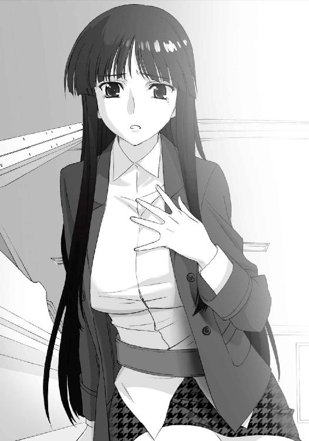

| ＷＨＩＴＥ ＡＬＢＵＭ２ 雪が紡ぐ旋律５ (GA文庫) | |
| 月島雅也 | |
| (2014) | |


ＷＨＩＴＥ ＡＬＢＵＭ２
雪が紡ぐ旋律５
月島雅也

本書に掲載されているコンテンツの著作権等の知的財産権およびその他すべての権利は、ＳＢクリエイティブ株式会社または正当な権利を有する第三者に帰属します。
本書の内容を権利者の許諾なく複製・複写・翻案・放送・出版・データ配信（送信可能化を含む）などすることはできません。
カバーイラスト
なかむらたけし
口絵 本文イラスト
桂憲一郎
冬。
凜と張り詰めた空気に生き物は姿を消し、あるいは眠りにつく季節。
静閑さと清廉さと、そして一抹の寂しさを思い起こさせる季節。
太陽の活動時間すら短くなる中、ただ人間だけはその動きを止めることはない。
何も変わらない素振りをして──むしろどこか浮き足立っているようにも見える。
まるで迫り来る何かへの不安をごまかすかのように。
雪。
誰の上にも等しく覆い被さる冷たさ。
淡々と降り積もり全てを覆い隠そうとする純白。
何もかもを消し去ろうと暴れ吹き荒ぶ灰白。
けれどそれは空虚で無為な仮初め。
やがて訪れる時はその汚れなき色を融かし切ってしまうのに、そこから目を背けているだけ。
五年。
あれから五年もの年月が流れた。
人が変わるには、世界が変わるには充分な年月が。
ずっと思っていた。
時間さえ過ぎれば──遠い異国の地で長く時を刻んでさえいれば。
そうすれば、きっといつか忘れられるはずだと。
あんな男のことなど思い出の一ページに綴じて、それを笑って開けるようになるはずだと。
そう信じていたのに。
結局。
そんな望みはすぐに打ち砕かれてしまうことになる。
でも、ずっと前からわかっていたのかもしれない。
そのささやかな、けれど渇望にすら似た自分の願いが、叶うはずなどなかったことを。
忘れようと心に留めるその度に、記憶の中の彼が笑い、怒り、泣き......そして優しく抱き締めてくるのだから。
いつでもどんなときでも、そうなのだから。
Piece of：春希
十二月、師走。
西日が窓から紅く差し込んでいる、冬の夕暮れ。
「おーい北原、頼んであった世論調査の集計は？」
「コメント付けてサーバーに上げてあります、去年の結果との比較もしておきました」
「北原悪い、明日まででいいからこれ２ページに纏めといて！ うわぁ打ち合わせ遅れるっ」
「わかりました、行ってらっしゃ......ってこの原稿、何ページ分あるんだ」
誰もが走り回るこの時期、我が開桜グラフ編集部もご多分に漏れず大忙しだった。
もっともこの忙しさは、特に十二月に限った話じゃないけれど。
「ねえねえ北原くーん。次のタウン情報コーナーなんだけどさ、末次町を取り上げたいんだよねー。北原くん実際に住んでるわけだし、何かいいお店とかネタとかないかな？」
「正直、峰城大以外はパッとしないですけどね。店も学生向けばっかりですし。まあ、隠れ家的な店ならいくつかあるんで、一応リストアップしておきます」
「よろしく～。やっぱり北原くんは何頼んでも打てば響くから、助かるわー」
「いやまあ......ありがとうございます」
今日これから控えている作業を頭に描く。評価してもらえるのはありがたいが、どう考えても一年目の新人の仕事量じゃないよなあ、と苦笑した。もっとも、バイトの頃からそんな感じではあったけれども。
ここは開桜社ビル三階、開桜グラフ編集部。
雪菜と結ばれてから二年の月日が経った今も、俺はかつてバイトしていたこの場所で、毎日忙しく働いていた。
肩書きだけバイトから新入社員に変わったものの、やっていることは相変わらずだ。
「ありがたく思ってくれるならよかった。じゃあじゃあ、そのリストアップのついでに、便利グッズ特集の候補出しもお願いしちゃおっかな～」
「どこがついでなんですか、鈴木さん......」
ニコニコ笑いながら更なる仕事を放り投げてくる上司様に、やれやれとため息をついた。
バイト時代と比べて一番変わったのは、麻理さんがいなくなったことだろう。
かつての上司であり恐るべき仕事魔神、風岡麻理さんは現在、北米にある関連会社に出向している。どうも順調にキャリアを積んでいるらしく、何年かして帰国する頃には局長ポストに就くと言われている。
そんな彼女がいなくなった今の開桜グラフで、代わりに部内を取り仕切っているのが鈴木さんだ。
性格は昔のままだけど、仕事への取り組み方はかなり変わった──少しでも麻理さんを追いかけるかのように。
「あはは。けど北原くんって仕事放り込めば放り込むだけイキイキしてくるから、あれこれ頼んでもいいかなと思って。麻理さんがいたときからそうだったし～」
「そんなことありませんよ、変なイメージ持たないでください」
「あ、麻理さんだったから仕事押し付けられても喜べたとか？」
「なおさらそんなことないですってば」
俺の言葉に、はいはいと鈴木さんが笑う。
新入社員の俺を新人扱いしてくれる人は、グラフどころか他の編集部ですら誰もいない。その理由は、今も言った通りバイト時代に付いてた上司が麻理さんだったからだ。彼女の指示を必死にこなすうち、周囲は「あの怪物の下でも働けるバイト」という評価をしてくれたらしい。おかげで、正社員としての出社初日から『風岡二世』というレッテルを貼られたというわけ。その名を汚すまいと今日までどうにか頑張ってきた結果、今や開桜グラフに限らずどこの編集部に顔を出しても気軽に仕事を回してもらえるまでになっていた。
そんなわけで、自分で蒔いた種とはいえ常に大量の仕事を抱える毎日。麻理さんがいた頃と違ってきちんと管理されていないそれらをどうにかこうにか片付けていく姿は、ベテランではないにしろ、確かに新人とも言いにくいかもしれなかった。
「俺もお前のことは新人だと思ってないぞ」そう声をかけてきたのは、二年先輩の松岡さん。
「つーわけで北原、あとで俺の作った企画書読んでくんない？ 意見聞きたくてさ」
「もうすぐ会議ありますから、その後なら......それより俺でいいんですか、松岡さん？」
「頼む。マトモに意見くれるのお前ぐらいでさ。ホント、皆冷たいんだよなあ」
「だあって、松っちゃんの企画書って全然企画書になってないんだもん。見るだけで大変」
鈴木さんが呆れた顔で呟く。
「うう、俺だってグラフに来たのは北原と同じ時期なのに......」
「あの頃からバイトの北原くんの方がよっぽど有能だったけどね～」
笑いながら辛辣なことを言う鈴木さん。
「まああの、俺でよかったら見ますから......っと、そろそろ時間か。会議行ってきます」
「はいはーい。えっと、アンサンブルの編集長の代理なんだっけ。確か今出張中なんだよね」
「ええ。雑誌広告の契約に正社員の同席が必要だそうで。あそこ、編集長以外は皆社外ですから」
「そこで北原くんが指名されるってのが、やっぱり北原くんらしいよねー」
「いえ、単に他に適任がいないだけですよ」
アンサンブルには、バイト時代にやった『初仕事』以来、色々とお世話になっている。だからこうした依頼を受けることも珍しくなかった。
「とにかく行ってきます、二時間もあれば戻ると思いますので」
そう言い残し、編集部を後にする。
会議室へ向かいながら、ふう、とため息。
毎日忙しくて大変だけど、今の日々に不満はない。
もちろんまだまだ麻理さんの域は遙か遠いけれど、できることをがむしゃらに、かつ地道にやっていけばいいと思っている。
焦ることはない。何だって積み重ねが全てだし、それに今の俺は仕事に逃げる必要もない。
だって今は──雪菜が傍にいてくれるのだから。
よし、とドアの前で気合いを入れ直してから中に入る。
「遅くなって申し訳ありません。私、開桜社アンサンブル編集部の北原と......へ？」
ドアを開ける途中で、俺は思わずぽかんとしてしまった。
なぜなら、そこにいた『取引先の人物』は──
「初めまして。ナイツレコードの小木曽と申します。本日はよろしくお願いします」
にっこり笑って差し出された彼女の名刺を、俺はしばらく受け取ることができなかった。
◇
「はっ、はあっ......」
最優先でやるべき仕事だけを片付け、どうにかこうにか編集部を飛び出した頃には午後十一時をとっくに回っていて。
「ふうっ、くそ、あと五分切ったっ......！」
今日一日の疲れで全身が悲鳴を上げていたが、それでも俺は南末次の駅からマンションまでの道のりを猛ダッシュ。
頼むからもう少し待ってくれ、と新しい日付の到来に願いながら街を駆け抜け、マンションの階段を駆け上がり、そして。
「た、ただいまっ！」
必死の思いで玄関のドアを開けると、「遅い～」と不満げな声が返ってきた。
「もう、ギリギリだよ春希くん」
「悪い......はあ、はあっ......」
「ほら見て、五十九分なんだよ、今──あ、十二時になった」
雪菜の呟きと共に、部屋のデジタル時計が土曜日の訪れを告げた。
「んもう、あやうくルール違反になるとこだったじゃない。先週の土日は春希くん出張で会えなかったし」
「わかってるよ、ごめんって」
キッチンで鍋をかき回している雪菜は、ぷく、と頰を膨らませている。
一週間に一度は必ず会う──
二年前から今までずっと守られてきた、俺たちのルール......なんだけど、このところ危ない場面が増えつつあった。もちろん原因は全て俺によるものだ。
「年末で忙しいのはわかってるよ。けど春希くんってさ、ときどきルールのこと忘れちゃってるんじゃないかな、って思う」
「わ、忘れたりするわけないだろ？ 今だって、ちゃんと電車の中からメールしたし。ていうか夕方も会ったじゃんか、ウチの会社で......」
「あれは『ナイツレコードの小木曽』です、春希くんの彼女の雪菜じゃありませんー」
いじけたように言う雪菜。
「あーあ。春希くん、ルールに対して段々いい加減になってきてるし、これってわたしが飽きられてきてるってことなのかなぁ」
「な、何言ってんだよ雪菜」
「たった二年で飽きられちゃったのかな。会うのが億劫になってるのかな。もしそうだったらわたし、もう立ち直れないかも」
「だからぁ、そんなわけ......」
「ない、って言い切れるの？」
そう言って、ぷい、と顔を背ける雪菜。
そっと息をついてから、そんな彼女の後ろに回り込み、その背中を抱き締めた。
「言い切れるよ。当たり前だろ？」
「あっ......春希、くん」
「飽きるわけない。いつだって会いたいに決まってる。こんなに好きな人のことなんだから」
「も、もう、すぐそうやってごまかすんだから」
ごまかしてるわけじゃなかった。ただ事実がそうであるだけで。
「ギリギリになってごめん。いつも忙しくしちゃってごめんな」
「......ううん。帰ってきてくれて、嬉しい。お仕事お疲れ様、春希くん」
わたしこそごめんね、おかえりなさい、とささやくような雪菜の声。
俺が腕の力を緩めると、雪菜はくるりと回転して俺を見つめた。
今度は正面から抱き締め、同時に唇を押し付ける。
「ふぁっ、んっ、はあっ......は、春希くん、ご飯できてる......よ」
「わかってる......」
そう言いながらも俺は、雪菜の身体をますますぎゅっと抱き締めていた。
こんなに魅力的な人をどうやって飽きろと言うのか。
この二年間、その身体にも、その心にも、一度たりとも飽きたことなんてなかったのに。
◇
「ふう、ごちそうさま。雪菜の料理、ホントいつ食べても美味いよ」
「ありがとう。そう言ってもらえると作りがいがあって嬉しい」
すっかり夜食の時間になっちゃったけどね、と苦笑しながら雪菜が食器を片付ける。
今は深夜二時過ぎ。諸事情により、食事の前にお風呂に入ることになったせいなんだけど──まあそんなことはいい。
「ふふ～ん♪」
鼻歌を歌いながら洗い物を始めたその背中を、静かに見つめる。
二年前には考えられなかったこの光景も、今ではすっかりお馴染みになっていた。相変わらず実家住まいの雪菜だけれど、社会人になってからはしょっちゅう俺の部屋に泊まっていくようになった。
お互い仕事がある以上、大学の頃より必然的に会える時間は減っているから、こうして会えるときにちゃんと会う。もちろん、少しでも長く一緒にいられるように考えて。
今年の春から新社会人となった俺たちは、それぞれ大学時代とは違う、別の新しい世界へと足を踏み出していた。
武也は化粧品メーカーの営業マンとして、デパートからドラッグストアまで日々駆け回っている。女性の扱いは得意分野なだけあって、販売員の皆様から人気が高く、順調に実績を積み重ねているらしい。
ところがそれに反比例して、学生時代にはあれだけいた不特定多数の恋人たちは今やゼロになってしまった。今なおモテる（であろう）武也が自分なりに過去を清算したのは、本腰入れて誰かさんにアピールするために違いない。
その誰かさんこと依緖は、第一志望だったスポーツ用品メーカーに就職した。事務仕事で忙殺されているそうだが、本人はいつか企画部に入ってやると息巻いている。
その性格と容姿で社内では男女問わず人気があるようだが、恋愛する気がなさそうなのは相変わらず。まあ、武也との関係をどうするのか思いあぐねているんだろうけど。お前ら何年そんなことやってんだよとは思うが、こっちも偉そうに言える立場じゃなくて。
そして肝心の雪菜。
あのバレンタインコンサートを経て、これからも歌と関わっていけるような道を選んだ結果、雪菜の肩書きは『ナイツレコードの新人広報』になっていた。
恐ろしく競争率の高い業界ではあったが、雪菜はこの中堅音楽メーカーの内定を見事に勝ち取った。俺が言うのも何だけど、それは学歴や就職試験の評価だけでなく、たぶんもっと単純な──要は外見がかなり功を奏したんだと思う。
その証拠に、雪菜は入社早々広報の、しかも関係各社との渉外担当という新人らしからぬ職務に就けられたのだ。
今度ナイツさんにすごく可愛いコが入ったんですよ、なんてことを俺に言う同業者が何人もいたあたり、会社の目論見は大成功だろう。
その美人広報はというと、自分の評価のされ方を自覚しつつも、単なる客寄せパンダ以上の仕事をすべく懸命に働き、充実した毎日を送っていた。
そしてプライベートではもちろん、今もこうして俺の隣にいてくれる。
「ふっふーん。これでよし、っと」
洗い物を終えた雪菜が、ベッドの端にちょこんと腰掛ける。
それを見て少し咳払いしてから、俺は切り出した。
「なあ雪菜。ちょっと、話があるんだけど」
この二年間、俺たちは何度も愛を確かめ合ったし、お互い深い信頼で結ばれていると自負できるようになった。
それでも未だに少し、口にするときほんの少しだけ緊張する話題が一つだけあって、それは──
「何？」
「ええと、実は今度また出張が決まってさ。それが海外出張なんだ」
海外？ と目を丸くする雪菜。
「元々は編集部の先輩が立てた企画だったんだけど、その人急遽結納が決まって、ちょうど日程が被っちゃったらしくて。で、俺にバトンが回ってきた」
「へえ......結婚するんだ、その人」
「ん？」
「ううん、別に。そっかあ、でもすごいね春希くん。新人なのにそんな大役を任されるなんて」
「押し付けられたとも言えるけどな」
「ホント、期待されてるんだね。わたしの出張なんて、せいぜい関東付近だよ？ 上の人たちは日本中を飛び回ってるのに」
「いやそれが普通なんだって。ウチの編集部がおかしいだけだよ。それで......」少し咳払いをして。「行き先なんだけどさ......ヨーロッパ、なんだ」
ピク、とほんのわずか雪菜が反応する。
広いヨーロッパの中で、しかし雪菜の頭にはたった一つの国しか思い浮かんでいないのだろう。俺もそれはわかっているから、さらに言葉を続ける。
「行くのは、スペインとイタリアとフランス。それ以外の国には絶対に立ち入らないよ。約束する」
「......別に、気になんてしないのに」
やや間があってから、雪菜はふっと息をつき、微笑みを浮かべた。
「何にも気にしないよ。ただ、春希くんが無事に帰ってきてくれたら、それでいい」
「ん......ありがと」
俺もそっと微笑んで、雪菜の隣に腰掛ける。
静かに手を伸ばし、雪菜の小さな手をきゅっと摑んだ。
「お土産、期待してるね？」
「ああ。リクエストあったら何でも言ってくれ」
手の中に雪菜の体温を感じながら、何も心配することなんてないと自分に言い聞かせる。
俺たちにはこの二年がある。何者にも侵されない、決して揺らぐはずのない絆があるのだ。
だから、大丈夫に決まってる。
「それで、出発はいつなの？」
「ええと、それはその、今月の......十七日」
思わず口ごもる。
実はこの出張のことを伝えるにあたって、行き先よりもむしろ気になっていたのは、日程に関してだった。
「十七日？ それで戻って来るのは？」
「二十四日......に向こうを発つ予定だから、成田には......二十五の夜ぐらい？」
「え............ええええええ～～～っ！」
「いっつ......ちょ、ちょっと雪菜、痛いって」
叫び声と同時、握り合っていた手に、雪菜の爪がグッと食い込む。
「だ、だってクリスマスイブは!? 一週間ルールはっ!?」
「その、ごめん......」
「ごめんじゃないよ、とっくに有海インテグラルの予約だって取ってるのにっ！ 何とかならないの？ せめて、どうにか二十四日のうちに帰国できない？」
爪を食い込ませたまま、雪菜がすごい剣幕でしゃべり出す。
怒るのも当然だろう。さっき拗ねたばかりの一週間ルールだけでなく、クリスマスイブすらも一緒に過ごせないという、恋人にとっては致命的な宣告なのだから。
「それが、二十四日の午前中までパリで仕事なんだよ......ホントにごめんっ」
「............っ」
本当に申し訳ないとは思う。だから俺にできるのは、本気で謝ることだけ。
けれど俺のそんな謝罪も虚しく、雪菜はバッと俺の手を振りほどくと、ベッドの毛布を引っ摑んで頭から被ってしまう。
「春希くんの馬鹿ぁっ！ もう知らない！」
「雪菜......」
「いっつもそうだよ、自分だけ落ち着いててっ。わたし、わたしはこんなに......」
毛布の中から涙混じりの声が聞こえ、申し訳ない気持ちが一気に膨らんだ。
こうなることはわかっていたし、確かに俺が悪いんだけど、肩がドッと重くなるのを感じる。
「ごめんな、雪菜。お土産、何でも好きな物買ってくるから」
「............」
「帰ってきたら何でも言うこと聞くよ、休み取ってずっと一緒にいる。だから......」
「触らないで！」
手を伸ばして毛布越しに触れると、怒声で突き返される。
「あなたに触られたら、その温かさでごまかされちゃう。いつの間にか許しちゃうんだもん」
「......ごめん」
嬉しい台詞だったが、今はそれに喜んでいる場合じゃない。
「あのさ、向こうから毎日電話する」
「............」
「帰ったら、成田からそのまま雪菜に会いに行くよ」
「............」
「そうだ、冬休みは二人で旅行でも行かないか？ 雪菜の行きたいところ、どこでも付き合うから」
俺がそう言ったときだった。
毛布の塊がわずかに動き、「......旅行？」とくぐもった声。
「......！ ああ、旅行だよ！」
よし、食いついてくれた。これだ。ここぞとばかりに畳み掛ける。
「年末年始も込みでさ、どこかでゆっくり過ごそう？ あっちこっち泊まり歩いてもいいし、雪菜、のんびりするの好きだから、温泉とかでも」
「旅行、かあ」
「そうそう。明日から計画立て始めてさ。ホントにどこでも好きなトコ行こう？」
「......本当に、どこでもいいの？」
「もちろん！ 日本全国、北海道から沖縄まで、スキーでも温泉でも遊園地でも。何だったら、それこそ海外でもいいじゃんか。ベタだけどハワイとかグアムとか、アジアならタイとか、近場なら台湾とかが良いらしいし──」
「............フランス」
「へ？」
ぐいっ、と被っていた毛布を外し、雪菜が俺を見る。
「フランス行きたい。それで......クリスマスイブの夜、一緒に過ごす」
「......え」
「どこでもいいって、言ったよね？」
いや待て冗談だよな？ なんて台詞は言うだけ無駄とわかっていた。
その瞳が本気だと告げていたし、こういうとき無茶を言い出した雪菜がテコでも動かないことぐらい、五年前からわかってたから。
いや......けど、マジで？
Piece of：春希
「え～それでは、生意気にも一年目から海外出張へと旅立つ北原春希くんの無事を願って──乾杯！」
おい、と口を挟んだ俺を無視し、武也の音頭で皆のグラスが打ち鳴らされた。
金曜の夜、馴染みの居酒屋で顔を突き合わせていたのは、これまた馴染みのメンバー。
来週から出張ということで早めに退社させてもらい、会社帰りに集まった皆が久々の飲み会兼俺の壮行会を開いてくれたのだ。
「春希くん何食べる？ わたし今日は豆腐の気分かなあ、豆腐ステーキと揚げ出し豆腐と味噌田楽......」
雪菜はいつも通り俺の横に寄り添い。
「あ、ホッケとメンチカツよろしく～......んぐっ......ふう、あと生中ね」
「おい飲み過ぎんなよ依緖。もし潰れちまったら、起きたとき俺がベッドの横で寝てるぞ」
そして相変わらずの依緖と、この一年ですっかり社会人らしい落ち着きを得た武也。
着ている服がスーツになっても、俺たち四人の関係はこうして変わらずに──
「北原さんわたしエルメスのバーキン！ えっと、色の候補と型番メモっておきましたから～」
「............えーっと」
「つーかなんでお前がここにいんだよ朋」
「あ、わたしウーロン茶おかわり。あとトマトスライスと海藻サラダのドレッシング抜きで」
「相変わらず他人の話を聞かないコだよね」
武也の無視られっぷりに、依緖も呆れ顔。
ちょっと訂正。俺たち四人の関係は少しだけ変わった。ときどき五人になるところが。
「いーじゃないですかあ。壮行会なら賑やかな方がいいし。それに、今日はちょっとした発表もありまして～」
一人だけスーツ姿じゃない柳原は、薄笑いを──多少なりともかつてのような見下すものではなくなった──浮かべてそう言う。
「実はわたし先月、滑り込みで東亜テレビの内定出たんですよぉ。局アナとして」
「え......マジ？ キー局の女子アナっ？」
「ホントみたい。何しろ内定通知、百回は見せられたから」
驚く俺に、雪菜がげんなりした顔で呟く。
「あの朋が、か。粘ったな、そろそろ脱ぐ頃かと思ってたぞ、俺」
「ていうかテレビ局もさ、グラビアアイドルのあんたをよく女子アナなんかに採用する気になったよね」
「ま、そこは普段からの人脈作りの成果と言いますか、握る弱みは多い方がいいと言いますか」
あとでスキャンダルにならなきゃいいけど、と苦笑する武也と依緖にも柳原はどこ吹く風だ。
「スキャンダルも話題作りに利用すればいいんですよ。最終目標はフリーになって、タレント活動することですからね。世の中チョロいもんですよ」
「......こんなこと言ってるけど、きっと死にものぐるいで努力したんだよ、彼女」
雪菜が小さく耳打ちしてくる。
あのコンサート以来、俺たちの輪の中に混じるようになった柳原。雪菜を弄ってばかりなのは相変わらずだが、俺たちが卒業した今も、その雪菜と堂々と友人関係を続けていた。小木曽家のホームパーティに顔を出したり、雪菜の歌に磨きをかけるべく当人以上の情熱で一緒にボイトレに通ったり、雪菜がレコード会社を志望したら自分のコネを総動員しようとしたり。
さらに、今でも『あの歌』をメジャーデビューさせようと、デモＣＤを作って業界の人脈に配ったりもしているらしく。
いつまで経ってもいい奴だか悪い奴だかわからない、変なヤツだ。
「しっかし、クリスマスにフランスでミサか。大したもんだよなあ」
武也がグラスを傾けながら呟く。
「基本は出張だけどな。雪菜の合流も、会社にちゃんと許可もらったし」
俺のクリスマスイブを潰した負い目からか、鈴木さんは割とあっさりＯＫを出してくれた。
「でもさ、あたしは知らなかったけどストラスブールって世界遺産なんでしょ？ そんな観光地のホテル、よく今から予約できたね」
「ちょうど上手い具合にキャンセルが出て、二人で同じトコ泊まれるんだー」
雪菜がそう笑う。
数ヶ月前から予約必須の、実現不可能にしか思えなかった雪菜のプラン。
どこの旅行会社でも調べるだけ無駄といった感じだったが、昔麻理さんに友人だと紹介された代理店勤務の女性を思い出し、ダメ元で電話してみると、状況は一変。
電話口で俺を待たせたまま、すごい勢いであちこちに電話を（何カ国語も操って）かけた結果、まさに奇跡のようなタイミングでキャンセルが出たホテルの一室を、見事にゲットしてくれたのだ。雪菜は無邪気に喜んでいたが、果たしてそんな偶然があるものなのか......ホント、こういうときの雪菜は神がかっている。
「っていうか北原さん、よく小木曽家の許可取りましたねぇ」
柳原の言う通り、雪菜の家族......というかお父さんに事情を説明するのが一番大変だった。お母さんや孝宏くんが援護してくれたからよかったものの、帰国後に顔を合わせづらい。
「ウチのお父さん、いつまで経っても頭固いんだから。娘はもう社会人だっていうのに」
「雪菜ちゃんトコは相変わらずだよな。まあでも、家族なんてそんなもんかもしれないぜ」
「何だよ武也、珍しいこと言って」
「いんや、別に何でもねーけどさ」
グッとグラスを飲み干す武也。
「たださ、ずっと一緒にいたんだ、長年近くで見てたんだ。一旦できた雪菜ちゃんに対するイメージをなかなか変えられなくて、それがいつまでも続いてるんじゃねーかな。変わったってことを......簡単にゃ受け入れられないんだよ、きっと」
「うーん、確かにそうかも」
ハイボール一つ追加で、と叫ぶ武也に、雪菜は静かに笑いかける。
武也の言葉がさりげなく別の誰かさんを指していることに気付いたのだろう。
「......なんか、すっかりおっさんくさくなったね、あんた」
「アホか。まだ社会人一年生だっつーの」
その誰かさん本人は場を流すように軽口を言い、武也もそれをわかった上で流される。
大学の頃と比べて一番変わったのは武也だ。それはもちろんいいことなんだろうけど──問題はそれに対する依緖の受け止め方だ。
もちろん、他人がそう簡単に口を挟めることじゃ、ないんだけど。
「だけど皆さん、やっぱり去年とは違ってきてますよ。会社の愚痴とか言い合うの聞いてると、雰囲気まで変わって見えちゃう」
正直ときどき付いていけません、と小さく肩をすくめる柳原。
自分たちでは気付きにくいけれど、まだ学生の柳原から見れば四人とも大きく変化してきているのだろう。
変化、か。
二年前にやっと変われた俺と雪菜の関係。
この一年で会える時間は減ったけれど、心はより深く繫がるようになった。
ふと思う。
今の俺たちの場所から、さらに先に進んで行くとすれば、それは──
「............」
朋だって来年は嫌でも変わってるよ、という雪菜の呟きが、妙に耳に残った。
◇
「さぁー、そんじゃもう一軒行こー！ もう一発居酒屋？ それともバーとか？ だははっ」
「えーと、武也くんもう帰った方が......タクシー呼ぼっか？」
「何言ってんの雪菜ちゃん、金曜の夜だよ？ なかなか皆が集まる機会もないし、ここは朝までオールナイト！ イェー！」
「飯塚さんはおやじくさくなったなあ、ホンっト......」
店を出て、とりあえず駅に向かって歩く。
武也がえらく陽気な感じで雪菜と朋に絡む様子を前に見ながら、やれやれとため息。
「ご機嫌だな、あいつ」
隣を歩く依緖に呟くと、そうだね、と白い息が舞った。
「俺たちの中じゃ一番落ち着いたかと思ったら、あんな酔い方したりしてさ。っていうか、やっぱりおっさんくさくなったってことなのかもな、はは」
「......かもね。老けたのかな」
「依緖？」その言い方に、どこか違和感を覚えた。「お前と飲むときはああじゃないのか？」
「わかんない。最近飲んでないし、二人だけで会ってもないから。......色々理由付けて、あたしが逃げ回ってる」
「逃げる、って、なんでだよ？」
「どうしていいかわかんないんだよ。だって......あいつ、変わっちゃったからさ」
アスファルトの地面に視線を落としたまま依緖が言う。
「正直あたし、今の武也に戸惑ってるんだ。今までとは違う人見てるみたいで」
「けど武也は自分で自分を変えるべきだと思って、それを実行した。それが誰のためにしたことなのか、わかってるよな？」
「............」
武也は本当に変わった。
元々、依緖に見せつけるために誰彼構わず付き合っていたような面もあり、そんな去年までの武也の姿は痛々しく、虚しく俺たちの目に映っていた。
だけど今、あいつの周囲に女の影は微塵もない。
それは本当に喜ぶべきことで、今の武也の頑張りは素直にすごいと思うし、俺としても心から応援している。
まあ、素直に喜べない奴も一人目の前にいるけれど。
「誰のためかなんて知らない。けど誰のせいかって言えば、あんたのせいだよ、春希」
ため息のように、そう言う。
「あれだけねじれて、こじれて、厄介だった自分の想いを三年もかけて成就させるから。雪菜の三年越しの想いを、ちゃんと受け入れたりするから......」
「おい、悪いことみたいに言わないでくれよ」
「別にそんなふうには思ってないよ、それ自体はあたしもすごく嬉しかったし。雪菜の涙、ずっと見てきたからね。ただ......武也がそれに感化されて、あたしたちの関係も変えてみようとするなんてさあ」
はああ、と依緖が天を仰ぎ、白い息が流れていく。
「......ねえ。中学のとき、あたしがあいつに何したか知ってる？」
「まあ、少しぐらいは」
「そっか。だったら少しはわかってくれるよね？ あたしが二の足踏む理由......雪菜を三年も避け続けた、あんたなら」
「............」
俺が武也と依緖に出会ったとき、二人はとっくに腐れ縁だった。つまり、俺と雪菜よりも長い期間を経て凝り固まった何かが、こいつらの間にはあるのだ。
「......なあ依緖。武也のこと、嫌いか？」
「嫌いな奴の隣に十年もいるほど、あたしは自分の人生を捨ててない」
「そう、か」
十年なんて過ぎるのはあっという間だ。だけどその間に積み重なった想いの枷は、とても一朝一夕じゃ外せやしない。
「ねえ春希くーん！ カラオケ行こうって案が出てるんだけど～、決定でいいかな～っ？」
振り向いた雪菜が、笑いながらこっちに叫ぶ。期待を込めたような目で。
「だとさ依緖。やめとく？」
「............」
「勝手にしろ～！ 電話して押さえとけよ～っ！」
「はーい、了解で～す！」
少しはこっちにも歌わせなさいよね、と雪菜に釘を刺す柳原の声が耳に届く。
それに苦笑していると、「......春希はどうすんの？」と隣で小さな呟き。
「どうするって？」
「これから先の、雪菜とのこと。どうするの？」
またずいぶんと核心を突いてくるな。
「もし......もしあんたたちがもう一歩先に進んだら、そのときは武也、きっと今より強く決意を固めると思う。そうしたら──そしたら、あたし......」
「依緖......」
変わりたいのは武也だけじゃない。だけど怖くて暗い足場へ踏み出すには、背中を押してもらう大きなきっかけがいるのかもしれない。
「こんなことまで言うのもアレだけどさ。春希は......いつ決心するの？」
何を？ と聞く必要はなかった。
「あれから二年、だよね。ちゃんと生計も立ててるし、あんたたちに関しちゃ早すぎるってこともないよね」
決心なんてずっと前からできてる。あとはただ、タイミングだけだ。
「雪菜──待ってるかも」
「......それは」
依緖に言われるまでもなく、それはずっと考えていて──
「......あー、ごめん！ 急に変なこと言ってさ。とりあえず海外出張頑張って、無事に帰ってきてよ」
俺が口を開く前に、依緖が恥ずかしそうに俺の背中を叩く。
「ああ。ありがと」
前の三人に駆け寄っていく依緖の後ろ姿を見ながら、ふーっ、と長い息をついた。
ヨーロッパ、か。
二人で過ごす初めての海外。
それも、クリスマスイブのミサという豪華すぎるおまけ付き。
「............」
いきなりすぎ、なんだろうか。
降って湧いたお膳立てを前に、タイミングを計り損ねてるだけなんだろうか。
だけど──
決心なんて、ずっと前からできてるんだ。
Piece of：かずさ
寝台車の客室に届くわずかな振動が気にならなくなった頃。
「......インタビュー？」
「二十五日の朝十時から。こっちのホテルまで来てくれるって」
窓から外の暗闇を眺めていたかずさは、思わず曜子の方を振り向いた。
「そういうのはやめてくれって、いつも言ってるだろ」
「昔から世話になってる人なの。しかもあっちのスタッフが、偶然現地入りしてるみたいで。そんな状態だから断りにくくて」
「あたしには関係ない。だいたい何でもかんでも突然すぎなんだよ、あんたは。今日だって『今から夜行列車でストラスブール行こう』とかさ」
「いいじゃない、びっくりさせたかったんだもの。それにあそこはクリスマスミサだけじゃなくて、街そのものが綺麗なのよ。たまには親子でゆっくりバカンスしましょ」
「......はあ」
無断でインタビューなど引き受けておいて、ゆっくりバカンスとはよく言ったものだ。
相変わらず自分勝手な母親に、かずさは小さくため息をついた。
一緒に旅行に行くこと自体は構わないが、もう少し他人の意見を聞けないものか。もっとも、だからこそ冬馬曜子なのかもしれないけれど。
「そんな顔しないでよ。インタビューだけ我慢してくれれば、あとはただの観光よ。なかなかあなたと出かける機会もないし、楽しみだわ」
「あたしのコンサートツアーにはついて回ってきてるくせに」
「だってそれは仕事じゃない。そもそも、かずさ一人で行かせたら行方不明になるのがオチね」
「うるさいな......」
「あ、ねえ。そういえば、そろそろ来年のツアー計画を発表したいんだけど」
イラつくかずさに向き直って曜子が言う。
「いい加減にサインしてくれないかしら。会場の手配もそろそろ期限が迫ってて」
「......なんであんなトコ行くんだ」
「故郷に対してご挨拶ね。いいじゃない、ヨーロッパも一通り回ったし、ぼちぼち新しい地域を開拓していくのも」
「だからって、わざわざ日本じゃなくてもいいだろ。例えばほら、アメリカとか......」
「実はね、今のあなたは日本で価値が高いのよ。日本人がジェバンニ国際で四位、っていうのがニュース性あったみたいで、冬馬かずさはちょっとしたアイドル扱いされてるらしいわよ？」
「なんだそれ......勘弁してくれ」
「おかげで来日公演の提示額が倍に跳ね上がったりもしてね。今ここで行かない理由がないわ」
「ふん、結局金かよ」
「経営者ですから。......ね、そんなに嫌？ もう五年も経ってるじゃない」
呟くような曜子の言葉が心に響く。
五年。そんなことはわかってる。
だけど時間の問題じゃないことだってわかっていて。
「............いきなり意味わかんないこと言うな。ただ面倒くさいだけ」
「わたしもね、そりゃ今はヨーロッパ中心に活動してるけど、死ぬときくらいは生まれ故郷で、なんて思ってるの。そのときに『あたしは絶対帰らない』って言われて、娘が看取ってくれないなんてことになったら嫌なのよね」
「あたしより長生きしそうなくせによく言うよ」
「とにかくウィーンに帰ったらもう一度聞くわ。それでダメなら、諦める」
「............」
そろそろ寝ようかな、とベッドに潜り込もうとする母親に、かずさは呟く。
「ホント勝手だな、あんたって」
日本に置き去りにしたり、いきなりヨーロッパへ誘ったり、そして今度はまた日本へ。
「あら、今ごろ気付いたの？」
「......ったく」
呆れて一つ息をつき、再び窓の外へと目を向ける。
フランスに近付くにつれ、暗闇に混じる白は確実にその勢いを増していた。
雪、か。
曜子の言葉のせいで、脳裏に浮かぶ光景──
大好きな彼に抱き締められた日も。
そして、大切な親友を失った日も。
あんな時間を忘れることなど、かずさにできるはずがない。
「............」
あの国に、もう自分の居場所はないと思ったのに。
そう信じたはずだったのに。
そのはず、だったのに......。
Piece of：春希
日本を発って、ちょうど一週間。
「こっちは今駅に着いたとこ」
『そっか。こっちは今、連絡バス待ち。これから乗り継ぎだから、わたしの方が遅くなるね......』
「パリがものすごい雪でさ。今日中に着かないかと思ったよ」
『わたしも。空港到着が三時間も遅れちゃって......もう、一緒に街を歩きたかったのに』
「予定じゃ暗くなる前に合流できてるはずだったのにな......」
三カ国を回り、朝から晩まであちこち取材に奔走したヨーロッパでの出張も今日で七日目。
十二月二十四日、クリスマスイブの夜は大雪に彩られていた。
今俺が立っているのはストラスブールの駅前。午前中のパリでの取材を最後に仕事は終了、雪菜と合流して今日明日明後日と市内観光を楽しむ──はずだった。
想定外だったのは二点。大雪のせいで雪菜との合流が大幅に遅れてしまったことと、突然の上司命令で明日も追加の仕事を入れられてしまったことだ。
おかげで気兼ねなく雪菜と遊べるのは、明後日だけになってしまった。
『二人でいられる時間......減っちゃったね』
「......ごめん。俺が明日も仕事入れられたせいで」
『あ、それはいいんだよ、元々出張なんだから。そこにわたしが無理やり合流しちゃうだけだからね。残念なのは、あくまで今日のこと』
天気ばっかりは仕方ないけどね、と雪菜が優しい声で言う。
俺がパリからＴＧＶでストラスブールに着いたのは、本当に今し方だ。本来の所要時間の倍以上かかった。まあ、到着できただけでも運が良かったかもしれない。
雪菜もどうにかパリに到着し、そこから飛行機を乗り継いでストラスブール国際空港に来ることはできそうだった。
遅れはしたが、一番の目的であるクリスマスミサにはなんとか間に合いそうだ。
『とにかく、間に合ってよかった～』
「そうだな。クリスマスミサにも、一週間ルールにも。あと......」
『え？』
「......いや。何でも」
『そう？ あっ、バス来ちゃった。じゃあ後でね。飛行機、たぶん一時間ぐらいで着くと思うから、また電話する』
「ああ、気を付けて。先にホテルにチェックインしとくから。じゃあ」
電話を切り、ふう、とため息。
少し降り止んできた雪を見ながら、鞄の中にある小箱に思いを馳せる。
その中には、雪菜へのクリスマスプレゼント──と見せかけた指輪が入っている。
二年前から雪菜が付けている安物なんかじゃない。取材の合間にパリの宝飾店を駆け回って選び抜いた、かなり頑張った逸品だ。
一生に一度の、重大で意味深な贈り物。
依緖の言葉に触発されたわけじゃないけれど、海外でのクリスマスミサに二人で参加、というシチュエーションがこのタイミングで舞い込んできたのは、きっと偶然じゃないと思うから。
「......さてと、ホテル行くか」
捕まえたタクシーに乗り込んで行き先を告げると、車は夜の街へと滑り出していく。
もうすぐクリスマスミサ。
そのあとに待っているのは──一世一代の、プロポーズ。
Piece of：かずさ
『ほら覚えてるでしょ、エレーヌ。去年のパリ響の......』
「覚えてないし今はそんなことどうでもいい。要するにあんたは偶然会った知り合いとすっかり話し込んでたわけだ。娘をほっぽり出して」
『悪かったってば。立ち話のつもりがつい長くなっちゃって......』
電話口から聞こえる曜子の言葉に、はあ、とかずさは息をつく。
クリスマスミサの時間まで街を見物しよう、などと曜子が言うので渋々ついていったのに、水上バスを降りたところではぐれてしまったのだ。
「ったく、やっぱり時間まで寝てればよかった。ずっと携帯の電源切ってるし、どれだけ探したと思ってんだよ。こんな大雪の中で......せめてヒールのないブーツ履いてくればよかった」
この何時間かは少し降り止んでいるが、街にはかなりの雪が積もっている。
知らない街の雪道を歩き回ったせいで、寒いわ転ぶわ、すっかり疲労困憊だ。
『ごめんってば。とにかく、ここからホテルに戻ると遠回りなのよ。大聖堂の前で、十一時に合流しましょ。まだ二時間ぐらいあるし、あなたは一旦ホテルに戻ったら？』
「ほんっとに自分勝手だな......」
『悪いわね。じゃあまた後で』
迷ったらまた電話して、という声を最後まで聞かずに携帯を切る。
まったく身勝手にもほどがある。相変わらずの冬馬曜子といえばその通りなのだが。
「とりあえず、ホテル帰ろ......」
気怠さと共に歩き出す。
今かずさがいるのはストラスブールの駅前。泊まっているホテルまでは、歩いてもたかが知れている距離だ。
白い息をつきながら、雪の積もる道を行く──
「............ああ、気を付けて......」
「ん......日本語か」
かずさの前方、タクシー乗り場の方からふと聞こえたのは、かずさの母国語。
おそらくミサに来た観光客だろう。あんな遠い国からよく来るもんだと思ったものの、逃げ出した自分の方こそとやかく言える立場じゃないと気付き、目を伏せる。
やはり日本でコンサートなんてやりたくない。
だって、だってそうしたら......。
「先にホテルにチェックインしとくから。じゃあ」
「............？」
近付くにつれはっきりしてきたその声に、ふとかずさは顔を上げた。聞き覚えがあることに、気付いたから。
声の主はこちらに背中を見せたまま、一つ息をついて電話を切る。
そしてそのまま、乗り場の先頭にいたタクシーに手を上げた。
「え？」
乗り込む瞬間、だった。
わずかに振り向いた『彼』の横顔に、かずさは息を吞んだ。
「あ......あ、あああああっ!?」
まさか。あり得ない。
でも、だけど、そんな馬鹿な。
ぐちゃぐちゃになった思考を振り切り、かずさは駆け出して次のタクシーに滑り込む。
「いっ、今の車追いかけて！ 早く！」
『？？？ Comment?』
「あ......」
運転手が首を傾げてかずさを見るまで、日本語で叫んでいることなんて、気付きもしなくて。
『......前の車についていってください』
ゆっくりしたかずさのフランス語に、運転手は頷いてハンドルを切る。
◇
タクシーは数台の車を挟み、彼のタクシーを追いかけ続けた。
そしてしばらくした後、前方で彼が降りるのが見え、慌ててかずさもタクシーを降り、歩き出した彼を追いかけたのだが──
「はあっ、はあっ......あ、あれ？」
脇道に逸れ、角を曲がったところで、いるはずの後ろ姿を見失ってしまった。
「う、うそ......確かこっちに来たのに」
辺りを見回すが、それらしい人物はどこにもいない。
「............」
声なんて聞き間違いかも知れない。
顔だって見間違いに決まってる。
タクシーに乗っているときから、ずっとそう考えていた。
だけど──それで済ませられるような冷静さなんて、とっくに失っていた。
「......っ！」
駆け出す。
もうどこに行けばいいのかわからないけれど、立ち止まってはいたくなかった。
本当に、万に一つの可能性だとしても、彼に会えるかもしれないとしたら。
「はっ、はあっ、どこだよ......っ!?」
急にガクンとバランスが崩れ、走っていたかずさはその場で転倒する。
「っぐ......い、ったあ」
痛みと雪の冷たさを感じながら、どうにか上半身を起こす。
身体中の痛みに思わず顔をしかめた。かなり派手にやってしまったらしい。
『君、大丈夫かい？』
声をかけてきたのは、どうやら近くで見ていたらしい、初老の男性。
『っ......大丈夫』
『そうは見えないけれど。ちょっと見せてごらん』
しゃがみ込んだ男は、かずさの足を見る。
『ああ、靴のヒールが折れてるね。これじゃまともに歩けない』
『............』
『肩を貸すよ。ホテルはどこだい？ そっちの通りでタクシーを捕まえよう。それとも病院の方がいいかな、すぐそこに──』
『いや。大丈夫。こうすれば......歩ける』
ゆっくりと立ち上がったかずさは、ブーツを......脱いだ。
『お、おい？』
『ありがとう。助かりました』
『待つんだ、この雪なのに裸足で行くつもりか!?』
『......それじゃ』
両手に一つずつブーツを持つと、再びかずさは駆け出した。
足の裏に刺すような冷たさを感じながら、走る。
『骨を痛めてたらどうするんだ！ 戻ってきなさい！』
気遣う声を背に、かずさは走る。
どこへ向かうべきかもわからないけれど、それでも走る──
「............春希っ」
どこかにいるはずの、彼の元へと。
Piece of：春希
「......ふう」
ホテルにチェックインした後、再び駅前へと戻ってきた。雪菜との待ち合わせ場所である、駅前の巨大なクリスマスツリーの前。
行き交う人々を見ながら、寒さで白い息を流し続ける。
もうすぐここに雪菜が来る。そして今夜、二人でクリスマスミサに参加する。
それが終わったらとうとう、俺は雪菜に──
「......ああもうっ」
せっかくの雰囲気をぶち壊してくれたのは、親愛なる上司様からのメール。
『お疲れ様です。鈴木です。直前で申し訳ないけど、明日の取材についてのファイルをＰＣの方に送っておくから、よく読んでおいてね』
文面はそれだけだった。仕事としては間違ってないが、感情的にはいちいちそんな報告しないでくれよと思ってしまう。
突発で明日にも仕事を入れてくれた鈴木さん......彼女だってまだ働いてるんだから恨むわけにもいかないが、やっぱりちょっと恨めしい。
どうにも仕事モードに気持ちを切り替えられず、携帯をポケットに突っ込む。
今日は雪菜との大切な記念日になるのだ、余計なことに気を取られたくない。
「......ん？」
ふと見上げると、少し降り止んでいた雪が再び空から舞い降り始めていた。
「いいね......ホワイトクリスマス」
冷たい空気を胸一杯に吸い込んで、俺は大きく腕を伸ばし──
「春希............っ」
それは。
「え？ なんだよ雪菜もう着い──」
それは雪菜の声じゃなかった。
Piece of：かずさ
「あ......」
当てなんかなかった。
ただ、足の裏に伝わる痛みから逃げるようにひたすら走り続けていただけで。
だからいつの間にかまた駅に戻ってきてしまったのは、単なる偶然だった。
そして、輝くクリスマスツリーの前に立つその姿を見つけたのもまた──偶然。
「あ、はっ......あはははっ......う、っぐ......」
その顔を見て、やっぱりそうだ、と笑みが零れ。
けれど次の瞬間には息が詰まりそうになる。
何だかよくわからない感情が溢れ、それを振り切るためにかずさは。
「春希............っ」
声を振り絞るようにして。
かずさは、叫んだ。
Piece of：春希
「......え」
「春希......」
自分が。
「........................かず、さ」
自分が今どんな顔をしているのかわからない。
「偶然、だな」
「............」
話しかけられても、言葉が返せない。
「春希、お前全然変わらないな。すぐわかったよ」
頭のどこかで「今すぐ逃げろ」と声がする。
けれど一歩たりとも足が動かない。
五年前と同じ長い黒髪の、五年前より美麗さを増した、五年前に誰より......好きだった奴が、今まさに俺の目の前に立っていた。
冬馬、かずさ......。
「なんだよ。何とか言えよ」
「............元気そうだな」
どうにか声を絞り出した。
「まあな。楽しくやってるよ」
「そっか......」
自分の声がどこか震えているのがわかる。それは寒さのせいなんかじゃない。
なんでこんなところにいるんだよ。
なんでこのタイミングなんだよ、かずさ。
俺、これから雪菜にプロポーズするんだぞ？
名実共にお前とさよならする選択をしようとしてるんだぞ？
なのによりによって、こんな場面で出くわすなんて......。
「「............」」
そこからしばらく沈黙が訪れる。
本当に、どうしてこんなところにいるのだろうか？
単なる偶然？ 俺がここにいるなんて知りもしなくて、ただ観光でストラスブールに来ただけ？
わからない......けどその質問が口から出ない。かずさの顔だって直視できない。
話をしちゃ、ダメな気がした。正面から見たら、ダメな気がした。
だって気付いてしまったのだ。この五年間一度も顔を合わせていなかったのに、そんなブランクを一瞬でなかったことにしてしまった、自分の記憶力の強さに。
このままじゃ、際限なく思い出してしまうかもしれないのだ──心の奥底にある、過去の想いさえも。
「......じゃあ、あたしホテルに戻る途中だから」
やがて、目も合わせようとしない男に失望したのか、呟くようにかずさが言う。
嫌気も差すだろう。久々に再会した知り合いが、それを歓迎していないらしいとわかったら。
だけど俺はそうするしかないのだ。この再会を、運命的なものにはできないのだ。
そんな裏切りは、もう二度と......。
「それじゃな春希。元気でな」
「ああ......そっちも」
かずさがくるりと背中を向け、歩き出す。
もうこれで会えないかもしれないのに、これが最後の機会かもしれないのに、こんな最悪な別れ方をする俺たち。
だってしょうがないじゃないか。どうしても呼び止めるわけにはいかない、振り返らせるわけにはいかない──はずだったのに。
「......おい？ ちょっと待て、何だよそれ」
「え？」
無意識に声が出たのは、去っていくかずさの足元に目がいったからだった。
「お前、なんで裸足なんだよ？」
「裸足......ああ」
今気付いた、とでも言わんばかりに、かずさが足を上げる。かかと部分から大きく裂けたストッキング。半分剝き出しになった足の裏はところどころ赤く腫れ上がり、血の染み出る擦り傷がいくつも──
「なっ......何してんだよお前!? こんな雪の中を......靴はっ!?」
「さっきヒールが折れたから、脱いだ。手に持ってたんだけど、途中で落としたみたいだ。まあいいよ、大したブーツじゃなかったし」
「そういう話じゃないだろ！」
「っ......」
瞬間、あれだけ動かなかった俺の身体が動いた。
あれこれ考えていた思考も吹き飛び、さっと駆け寄ってかずさの足元にしゃがみ込む。
「ちょっと触るぞ」
「いきなり女の肌に触るのか？ お前は相変わらず......いたっ」
足の裏どころか、足首に触っただけで声をあげるかずさ。
「くじいてるだろこれ......ヒール折ったとき転んだんじゃないのか？」
「......別にこれぐらい平気だ」
「なわけないだろ。変な意地張るなよな......お前こそ相変わらずだよ」
うるさい、とかずさ。
「捻挫かな......骨までいってないといいんだけど」
「ちょっとくじいただけだ。お前は大げさなんだよ」
「とにかく怪我は怪我だ。ちょっと待ってろ、タクシー捕まえてくる」
「......いいよ。ホテルまですぐだ」
「いや、だけど──」
「こんな近距離でタクシー使ったら運転手も可哀相だ。とにかく、お前の世話にはならないから安心してくれ」
「かずさ......」
その言葉だけで、必死に強がっているのがありありとわかる。
こんなところも本当に変わらないな、こいつ......。
「じゃあな春希。今度こそ行くから」
そして同様に、俺もまた変わらないのだろう。
こんな状態のかずさを放っといて帰るような真似なんて、どうしてもできないから。
たとえお節介だと言われようとも、どうしても。
「待てって。......ほら、乗れ」
かずさの前に回り、背中を見せてしゃがみ込む。
「乗れ、って......嫌なこった、なんでお前に背負われなきゃいけないんだ」
「タクシーはダメなんだろ、だったらこうするしかないだろ。ホテルまでだ、少しくらい我慢しろ。歩いてすぐなんだろ？」
「............」しばらく間があった後。「......いいのか？」
「何が？」
「春希、お前......無理してないか？」
「さあな。でもそんなこと気にしなくていい」
「そう、か」
無理なんかしてない、とはさすがに言えなかった。
それでもそんな俺の煮え切らない態度を、かずさは黙って受け入れることにしたらしい。
ゆっくりと背中に預けられるかずさの重さ。
長い髪が俺の頰をくすぐり、吐息が俺の首筋を撫でる。
そして両肩に回された腕には、どこか遠慮がちに、けれどぎゅっと力が込められていて。
「行くぞ」
「ん......」
服を隔てても感じる温もりは、俺の心を戸惑わせるには充分だった。
それを少しでも悟られないよう、何でもないような素振りで立ち上がり、俺はゆっくりと歩き出す。
結局こうなってしまった。さっさと別れられなかった。
心を鬼にしてでもかずさを見送るべきだったのに──
責任感という免罪符を、得てしまったから。
けどこれはホテルまでだ、と必死に自分に言い聞かせる。
俺には雪菜との約束がある。大切な時間が待っているのだ。
だからかずさをホテルに送り届けたら、それでおしまいなんだ......。
◇
「うん......それで、今もまだその人のホテル」
『そっかあ。大変だったね』
「本当にごめん雪菜、迎えに行けなくて......」
『ううん、いいよ。それよりその人大丈夫なの？』
「骨が折れたりはしてないみたいで、ゆっくりなら歩けるって」
『それならよかったね～。せっかくこんな綺麗な街に来たのに、外にも出られないなんて寂しいもんね』
「......っ。あ、あの、それでさ、その人の連れが帰ってくるまで......」
『ん、わかった。ホテルならわかるし、大聖堂も見えるし。これって街のどこからでも見えるんだね、すごいよね』
「ミサには間に合わないかも知れないけど、後で必ず合流するから......ごめん」
『だから謝らなくていいってば。海外でも人の面倒みちゃうなんて、ホント春希くんらしいよ。あははっ』
「......ごめんな」
『だからいいの。それじゃわたし、とりあえずホテル行くね』
「わかった......」
電話を切った後。
「っぐ......」
ギリ、と奥歯を嚙み締める。
口から真っ黒な血でも吐きそうな気分だった。
俺は最悪だ。
五年前も、今も......。
「............」
携帯のメールを開き、鈴木さんから来ていた追加の連絡をもう一度読み直す。
『ごめん、ファイルの内容確認し忘れてた。取材するの嫌だったら掛け合ってみる。取材相手は、北原くんが昔特集記事書いた──あの冬馬かずさなの』
どうして、こうなるのだろうか。
そして俺は幽鬼のように、ホテルのフロントへと歩いて行く。
Piece of：かずさ
『何よ、エレーヌと一緒に大聖堂の前でずっと待ってたのに』
「仕方ないだろ。急に足が痛くなったんだから」
『だったらどうしてすぐわたしに連絡しないの。救急車でもヘリでも呼んだのに』
「そうやってすぐ大げさにするからだ......とにかく、ミサには行けなくなった。その人にも謝っといて」
『......そっち戻ろうか？』
「いいよ。母さんがいたってどうせ役に立たないし」
『随分な言い草ね......まあその通りだけど。でもかずさ、本当に独りでいいの？ せっかくのイブの夜なのに、寂しくならない？』
「......別に」
『そう？ 本当ストイックね、あなた。っていうより、単に昔の執念深さを拗らせて......』
「それじゃあたしの分まで楽しんで来てくれバイバイ！」
電話を切り、携帯をベッドに放り投げる。
「......悪かったな。執念深くて」
Piece of：春希
「あっつ！ おい春希、熱いっ」
「治療なんだから少しは我慢しろ、凍傷になりかけてんだから温めないと」
「熱いし、傷に染みるし......ああもうやりたくない」
「ワガママ言うなよ」
ベッドの端にかずさを座らせ、その前にしゃがみ込む俺。洗面器に風呂ぐらいの温度の湯を張り、冷えた足を入れて温めようとしても、かずさの足はすぐに逃げ出してしまう。
仕方ないのでタオルを湯に浸し、それで足を拭くことにする。汚れを拭き、同時に足を温めるよう、丁寧にタオルを動かしていく。
「足首はどうだ？ ちょっと押すぞ」
「いっ......！ 殺す気かっ」
「相当だな。足首はやっぱ湿布して包帯で固定するしかないな」
「そんなことしたら明日も外出できないだろ。せっかくのバカンスなのに」
「諦めろ。裸足で雪の中を歩くとか、わけわからんことするからだ」
「......悪かったな」
「とりあえず足の裏。傷口の消毒するぞ。それから足首に湿布と包帯」
フロントで借りてきた救急箱から消毒薬を取り出す。
「染みると思うけど我慢しろよ」
「できるかそんなの......」
ぶつぶつ言いながらも、俺が消毒し始めると顔をしかめるだけで素直に口を閉じた。
なんだか昔もこんなことがあったような気がする......そうだ、学園祭の直前、かずさが熱を出して倒れたときだ。
倒れていたかずさを見つけて、慌てて医者呼んで、雑炊作って、ギターの練習しながらずっと側にいた。俺の余計なお節介に、かずさはずっと文句ばかり言ってて、でも何だかんだで俺のやることを受け入れて──
「............」
そこでふと、我に返る。
何やってんだ俺。本当に、何やってんだよ。
かずさをホテルに送って、あとはさよならすればよかった。
こんな夜に医者なんか呼びたくないとゴネるかずさを無視し、フロントに近くの病院へ電話してもらえばよかった。
そうして、雪菜とミサに行けばよかった。......そうすべきだった。
なのに俺はここでかずさにこんなことをしてる。
明日の取材相手はかずさ。つまり明日だってかずさに会うことになる。それなのに俺は、かずさと過ごす今の時間を最優先にしてしまった。
よりにもよって、雪菜に噓をついてまで......。
「......よし、っと」
絆 膏と湿布を貼り終え、あとは包帯を巻くだけとなったのだが、巻いている途中でふと、温めたはずの足がまた冷たくなっていることに気付く。
膏と湿布を貼り終え、あとは包帯を巻くだけとなったのだが、巻いている途中でふと、温めたはずの足がまた冷たくなっていることに気付く。
「かずさ、まだ冷たいよな、足」
聞くまでもないだろう。きちんと湯に浸けてないから、温め方が足りなかったのかもしれない。
どうしようか、傷口に貼った絆膏を剝がして、もう一度温めた方がいいのかどうか──
「なあ。もういいよ春希。あとは自分でやる。包帯巻いて大人しくしとく」
「かずさ......けど」
「平気だって。それにミサ目当てだったんだろ？ 行ってこいよ。今ならまだ間に合うぞ」
確かに包帯ぐらいはかずさでも──というか、ここまでの治療もかずさ一人で何とかなった気はするが──巻けるだろう。
それに、今すぐ雪菜に連絡すれば、ギリギリ一緒にミサに出られるかもしれない。
それが俺の選ぶべきただ一つの正解。これ以上かずさの世話をする必要がないのなら、そうするのが当たり前。
「じゃあな、春希。一応感謝しといてやるよ。それと──メリークリスマス」
「............」
この俺にとっては──『雪菜の彼氏』にとっては、当たり前の......。
◇
「触るぞ」
「んっ......」
洗面器の少し熱い湯に浸した自分の手で、そっとかずさの足に触れた。傷口を避けながら右脚を両手で包み込むと、熱がどんどんかずさの冷たさと混ざり合い、奪われていった。
湿布や絆膏を剝がさず、上手い具合に足を温めるツールとして使ったのは、俺の両手。
肌と肌で熱を伝えながら、ほぐすようにゆっくりとマッサージしていく。
「次、左な」
「うん......」
馬鹿だ、俺は。
わかっていてもどうしてもこの場を離れられなかった。
いつの間にかかずさももう、自分でやるとも、ミサに行けとも言わなくなった。
俺のしつこさに諦めたのか、俺に言われるがまま足を差し出している。
「よし。じゃ、お湯変えてもう一回な」
「ん......」
息のできる水の中にいるような、奇妙でゆっくりとした時間が流れる。
俺の両手がかずさの足を往復し、温め、マッサージして。
それを何度も何度も繰り返しているうちに、かずさの足は少しずつ血行を取り戻していった。
「......なあ。かずさ、バカンスなんだよな」
そうして、ミサの開始時刻がとっくに過ぎた頃。
「最初にそう言っただろ」
ようやく俺は、雑談を振れるようになっていた。......それがいいか悪いかは別として。
「それで、春希の方は？」
「仕事の出張だよ。俺、今年から出版社に勤めてるんだ」
「仕事......そうか、社会人か。あの春希が......な。もう、学生じゃ......ないんだな」
「もう五年だからな」
そうだよな、とかずさが呟く。
ぎこちない、弾まない会話。
それもそうだろう。俺たちの関係は、五年前に空港で別れたっきりなのだから。
なのにこんな雑談を振ったのは、聞きたいことがあったからだ。
この部屋に入ったときから気になっていた、下世話で立ち入ったこと──
よせばいいのに、俺はそれを尋ねてしまう。
「それでさ......誰と来てるんだ？」
かなりグレードの高そうなこの客室は、ツインルームだった。それに、一人分には多すぎる荷物もある。
「お前、聞きたいのか？ あたしの連れのこと」
かずさが俺を覗き込んで、言う。
「──あたしが付き合ってる男のこと、知りたいのか？」
「......っ」
つい息を吞む。何してんだ俺。
聞かなきゃいいのに。もしかずさの言う通り、男との旅行だとしたら、俺は勝手に傷付くだろう。そんな資格、どこにもありはしないのに。
「......なーんてな。冗談だよ、母さんだ。ストラスブールのミサ行きたいとか急に言い出して、連れ出されただけ」
「あ、そ、そうか」
あまりにもホッとしてる自分に気付き、嫌になる。それを聞いてどうしたいんだよ、俺。
「それで春希も、その......誰かと一緒なんだろ？ 部屋出るとき電話してたもんな」
ほら来た。だからよせばよかったのに。
かずさのことを聞いてしまったら、俺のことだって聞かれるに決まってるんだから。
「出張だから会社の人か？」
「............」
いいから噓をつけ俺、とは思ったが、口も身体もそうしてはくれなかった。
「？ 何だよ、出張ついでに友達と遊んでるのか？」
「............」
「........................雪菜、か？」
その問いかけには、無反応ではいられなかった。
わずかに動かしてしまった俺の目だけで、かずさにはわかったらしい。
「そう、なんだ。一緒に来てるわけか。わざわざフランスまで」
「......まあな」
天井を見上げたかずさが、ふーっ、と長いため息をつく。俺の手からするりと足が逃げたが、それを咎めることなんてできなかった。
「なあ。お前たち、その......いつから」
「......二年前から付き合ってる。随分時間かかったけど、あれから色々あったから」
「そっか。色々、な」
かずさが呟いたその『色々』は、かずさを起因としたものばかりだ。
俺と雪菜の長い長い遠回りに深く関わっていることを、かずさ自身、少しはわかっているのだろうか。
「仲良くやってるみたい、だな」
「ああ。......それで、実は──」
今日プロポーズするつもりだったんだよ。
「え？」
「いや、別に......」
言ってもいいはずだった。言えばよかった。
だけど俺の口は......それをしなかった。どうして？
「でもよかったよ。本当によかったな......お前にはもったいなさ過ぎる彼女じゃないか」
「ああ。それについては俺もそう思う」
「本当にいいコだもんな。世界中探したって、あれほど最高の恋人はいないぞ。可愛いし、優しいし、料理もできて一生懸命で。そっか......ホントに、おめでと」
「......ああ。ありがと」
「うん、そっか、そっかあ。あはは、ははっ......」
かずさが笑う。雪菜を褒め、俺たちを祝福してくれている。
だけどかずさは気付いていない。それだけ褒めている雪菜がすぐ近くにいるってわかっているのに、会いたいとは言わない自分のことを。
電話すれば今すぐ駆け付けてくるに違いないのに、そのことを俺に尋ねようともしない。
「とにかく、おめでとう。......お幸せに、な」
「うん。かずさも、おめでとう。ジェバンニ国際、四位入賞」
俺は俺でそれを指摘できないまま、緩やかな雑談へと身を任せてしまう。
「全然。だって四位だぞ？ すごくも何ともない」
「でも、クラシックファンじゃなくても知ってる有名なコンクールだからな。発表があってからしばらく、ニュースで取り上げられっぱなしだったぞ。お前のインタビュー、テレビで何回観たかわからない」
「はあ？ 何だそれ......日本人はどういう反応してるんだよ」
そうして何にも決着を付けられないまま、また時間だけが過ぎていく。
肝心なところに触れられないまま、上辺だけの会話が続いていく。
俺はこんな場面をいったい何度繰り返したら気が済むのだろうか......。
◇
「これでいいかな......立てるか？」
「ん、なんとか。よっと」
ゆっくりとベッドから立ち上がるかずさ。少し足を引きずりながらも、どうにか歩いてみせる姿に、当初の痛みはかなりよくなったらしいとわかる。
「うん、大丈夫......今度こそ本当に平気だ」
「そっか。わかった」
かずさの具合がよくなった。つまり治療はおしまいで、となるともう俺がここにいていい大義名分もなくなった。そんなもの、最初からなかったかもしれないけど。
「じゃあ、俺そろそろ」
「......ああ」
かずさの視線を感じながら、脱いでいたコートを着直す。
時計を見ると、午前一時半。ミサはもう終わっているだろう。
日付はもうクリスマス。雪菜と一緒にイブを過ごすという約束も、一週間ルールも、俺のプロポーズも、何もかも台無しにしてしまった。雪菜に噓をついてまで、かずさと一緒にいることを選んだ俺......。
何も変わっていない自分に閉口する。雪菜への申し訳なさ、後ろめたさが心の奥底にどろりと溜まっていく。
いったい俺は、この後どんな顔をして雪菜に会うつもりなんだろう。何て言うつもりなんだろう。
「それじゃ、お大事にな」
静かに、ドアの方へと歩き出したときだった。
「......っ、な、なあ春希っ！ お前......もうすぐ、帰るのか？」
「え？」
「もう日本に、帰っちゃうん......だよな？」
そう言った後、急に首を振るかずさ。
「......あ、いや待て、やっぱ何でもない」
「かずさ......」
「悪い、ちょっと懐かしくなっただけだ。そんなこと聞いたって意味ないし......雪菜だって一緒なんだし。行ってくれ。これでさよならだ、もう二度と会うことも......」
かずさのその言葉に思わず反応する。
「え？ お前......もしかして明日のこと聞いてないのか？」
「明日？」
かずさが眉をひそめる。
そうか、考えてみればこいつ、俺がストラスブールにいる理由も知らなかったんだ。インタビュー取材があることは知ってても、インタビュアーが誰かまでは聞かされていなかったのだろう。
「そっか......じゃあ、またな、かずさ」
「はあ？」
訝しげな顔のかずさを残し、部屋を出る。
かずさは、明日も俺に会うとは知らなかった。だからもしかしたら、帰ろうとする俺を少しでも引き留めようとしたのかもしれない。
「............」
そのことに少し喜びかけた自分を、殺してやりたかった。
Piece of：春希
「雪、ほとんど融けちゃったね」
「そうだな......」
イブの取れたクリスマスの、午前七時。
昨日から降っていた雪は深夜に雨に変わったらしく、積もっていた雪を少しずつ洗い流していた。その雨もすでに上がり、今ではシャーベット状の氷が靴底で音を立てている。
「どうしたの春希くん、なんだか元気ないみたい」
早朝の街を散歩しながら、雪菜が俺を見て言う。
世界遺産の街並みは、普段なら趣深い光景として目に映っていただろう。けど今の俺は、そこに何の感想も見いだせないままで。
「もしかして風邪でも引いちゃった？ だからベッド使えばよかったのに、ソファーなんかで寝るから」
「いや、大丈夫だよ。それに昨日は......雪菜を起こしたくなかったから」
噓だった。
昨日、かずさの部屋を出たあと、どうやって自分のホテルに戻ったのか記憶がない。ただ気が付いたら目の前のベッドで雪菜が寝ていた。だけど......その隣には、潜り込めなかった。雪菜の温もりに触れるのが、怖かったから。
「起こしてくれてよかったのに。わたしこそ、春希くんが戻ってきたときに起きられなくて、ごめんね」
「雪菜は何にも......俺のせいだ。ごめん、本当にごめん......」
「もういいよ、春希くん。朝からずっと謝りっぱなしじゃない。そんなに申し訳なさそうにされると、わたしまで寂しくなってきちゃう」
「......っ」
雪菜は知らない。
俺が謝っている理由が、ミサと一週間ルールを反故にしてしまったこと以外にもあるのだという真実を。
「今日は何時からお仕事？」
「十時から。それで、夕方......五時ぐらいまでには終わると思う」
「なら今夜は一緒に過ごせるね。少しは観光もできるかもね」
「約束する。昨日の埋め合わせ、絶対にするから」
「そんなに気負わなくていいよ。わたしのためにちょっとだけ頑張ってくれたら、それでいい」
「うん......ありがとう」
いつもならもう少しワガママを言う雪菜だけど、俺の様子に気を遣ってくれているのだろう。
「それじゃ、ホテル帰ろっか？ そろそろ朝食の時間だよね」
雪菜の差し出した左手を、右手でぎゅっと握る。
そして自分の左手は、ポケットの中の小箱に触れていた。
イブの夜という絶好の機会を逃してしまったのは、運命でも何でもない。全部俺のせいだ。
雪菜の手から伝わる温かさを感じながら、大きく息を吸い込む。
やっぱりヨーロッパ出張なんて断るべきだった、なんて今さら思っても遅い。
だからせめて一刻も早く日本へ帰ろう。
かずさへの取材を終わらせて、今度こそそれで終わりだ。
俺と雪菜のいるべき場所へ、帰ろう。
◇
「開桜社の北原と申します。本日はよろしくお願いします」
「............」
「今回はお忙しいところ、こちらの無理をお聞き入れくださいましてありがとうございます。『アンサンブル』の吉松からも、冬馬さんによろしくと」
「......ギター君？」
「北原です。......ご無沙汰してます」
昨晩と同じホテルの部屋に出向くと、ドアを開け出迎えてくれた冬馬曜子は俺を見て目を丸くしていた。どうやら五年前に一度会ったきりの俺を覚えていてくれたらしい。
「ちょっと、ちょっと待って。ここでこんな展開は予想してなかったわよ......どうしてあなたが取材に来るのよ？」
「いやその、今年開桜社に就職しまして」
「......ああそっか、もう大学卒業したのね。就職おめでとう。時間が経つのは早いわねえ......って、それはともかく、困ったわね」
「あの、何か問題でも？」
「ないと思ってるの？ いきなりあなたと顔合わせたりしたら、あの子たぶんパニックよ」
まさかあなたがインタビュアーだったなんて、とため息をつく曜子さん。
「え？ ええと、それは......」
おかしいな、話が通ってないぞ。
インタビュアーの名前をチェックしてない曜子さんも問題だけど、かずさの奴、昨日のことを曜子さんに話してないのか？
「......母さん。いいから入ってもらえ」
とそのとき、室内からかずさの声。
「取材なんか誰にされても一緒だ。さっさとやって、さっさと帰ってもらえばいい」
その言葉だけで曜子さんは何か勘付いたらしい。
「......かずさ、あなた知ってたの？」
「さあね。あんたこそ知らなかったわけ？」
俺たちのところまで歩いてきたかずさが、「ほら、入れ」と促す。
微妙な顔の曜子さんも頷いてくれたので、とりあえず中に入った。
三人でテーブルを囲んで座ってから、しばらく今日の流れを説明する。
「......で、十五時から写真撮影になります。カメラマンが合流することになってますので」
「写真？ 嫌なこった、なんであたしがそんなこと」
「はいはい、元が無愛想だからその辺いい感じに撮ってやってね～」
「はあ......ええと、予定は以上ですが、何かご質問などは」
「大丈夫、何かあったらその都度聞くから。さっそく始めましょ」
「わかりました。......かずささんも、よろしいですか？」
「勝手にしろ」
ムスッとして言うかずさ。なるほど、曜子さんがいないとインタビューどころか他の仕事もどうにもならなさそうだな、これ。
「それでは始めます。あ、そういえば足の方は大丈......」
「な ん の こ と だ ？」
「......始めます。よろしくお願いします」
ボイスレコーダーをセットし、テーブルの上に置く。
「まず最初に、ジェバンニ国際ピアノコンクール入賞、おめでとうございます」
「今さら何ヵ月前の話をしてるんだ。そんなのとっくに忘れた」
......いきなり切って捨てられてもなあ。
「えーと、つまりもう次の目標に向けて進んでるってこと。かずさは過去の栄光に囚われずに、前だけを見てるのよ」
「栄光？ たかが四位だ。おまけに昔の冬馬曜子と同じ順位だなんて面白くもない」
「ちょっとかずさ、インタビューなんだからもう少しちゃんと答えなさい」
「インタビューだから何だよ？ いちいち口を出すなら最初から全部あんたが答えればいいんだ」
「そういう問題じゃないでしょ。だいたい偉そうに言ってるけどね、わたしは日本人で初の入賞だったのよ？ 今みたいにグローバルじゃない時代、ヨーロッパ人以外があのコンクールで評価されるのなんて、どれだけ狭き門だったか」
「それが何だって言うんだ、偉そうに自慢してるのはそっちじゃないかっ」
「これは事実を述べてるって言うの」
「うるさい！ すぐそうやって自分の方が上だって決め付けて！」
俺を無視して言い合いになる二人。
......結局、曜子さんがいてもインタビューはしにくいらしい。
◇
「続いて来年の公演予定について......一部では来日の噂もあるようですが」
「絶対行かない」
「......そうですか」
「あーいえ、今はまだ白紙の状態で。ヨーロッパ以外にも活動範囲を広げるつもりなのは確かですが」
「それでも日本には行かない。行かないんだ。......安心したか？」
え？ と曜子さん。
「......日本のファンは、是非あなたの演奏を直で感じてみたいと願っていますが？」
「知ったことか。決めるのはあたしだ。ファンでも、冬馬曜子でも、ましてや......」
「......っ」
「とにかく、自分が日本人だからって日本に行く気はない。それにあたしにはヨーロッパの空気が合ってるんだ、世界中をうろちょろするつもりはないね」
「......わかりました」
日本に行くつもりはない。
かずさはそれをどういう思いで口にしているのだろう。どういうつもりで俺に聞かせているのだろう。
そして俺はそれを聞いて、どう思っているのだろう......。
「では、かずささんから見た冬馬曜子さんについてはいかがですか」
「そう言われてもな。鬱陶しい経営者か？」
「あなたにとってわたしはただの雇用主でしかないのかしら」
「他に何だっていうんだ？ 師匠はフリューゲルの爺さんだし。ああ、ライバルとしては高い壁だって認めてるけどね、残念ながら」
「............」
「何だよインタビュアー、何か言いたそうだな？」
かずさが大事なことを言わないのはわざとだろう。そのことについ、俺も反応してしまう。
「......母親としては？」
「は。ご覧の通りろくでもないね。家事はしないし留守ばっかだし、帰ってきたと思ったら友達連れ込んで大騒ぎ。一緒に暮らしてても昔と何も変わらないよ」
「......そう、ですか」
「何だよその言い方。何が言いたいんだよ」
たぶん俺は、ちょっとだけイラッとしたんだと思う。本当にちょっとだけ。それが言葉に漏れたのを、かずさは敏感に感じ取った。
かずさはかずさで嫌いなインタビューにイラついていて、だから言葉を投げ付けてきた。
「いえ......別に。そんなに昔と変わらないのかと思って」
「なんだと？」
ちょっとだけのはずが、売り言葉に買い言葉でついのめり込んでいく。
「いいお母さんじゃないですか。どこが気に入らないんですか」
「どこもかしこもだよ。母親として機能してない。最低だね、これでどこの家庭ならいい母親だと思われるんだ？」
「......他の家のことなんて関係ないだろ」
「だったらこんな下らないことばかり訊くインタビューも無意味だな。お前喧嘩売りに来たのか？」
「ふっかけてるのはそっちだろ。一緒に旅行する仲の母親で、どこが最低なんだ」
「あたしは無理やり連れ出されたんだ、毎回身勝手に付き合わされる身にもなってみろっ」
「でも付き合ってるじゃないか、嫌だったら絶対行かないお前が。少なくとも一緒にいたくないわけじゃないだろ、だったら最低なんかじゃない」
「っ、お前は自分の家と比べてるだけじゃないか！ 他人は関係ないんじゃなかったのかよ！」
「せっかく変われたんだろ、一緒にいて昔の関係を変えられたんだろっ？ 充分じゃないか、なのにそんなことも認めないなんて、どうしてそう素直じゃないんだ！」
「春希っ！」
かずさがテーブルに手を掛けた瞬間、
「はいはーいそこまで。今は仕事中よ、あなたたち」
手を打ち鳴らした曜子さんの言葉で、割れんばかりに膨れ上がっていた感情の風船が静かに萎む。
「ギター君もね、わたしの味方してくれるのは嬉しいけど、これ一応インタビューだからね」
「......申し訳ありません」
ああくそ、馬鹿だ俺は。かずさとすぐ言い合いになるところなんて、五年前のまんまだ。
「かずさも、ネタ話するならそれなりの言い方をしなきゃ」
「は？ ネタじゃない、あんたは──」
「黙れ。昔のオトコに会ったからって舞い上がってんじゃないわよ」
「............っ」
「はい。というわけで続きどうぞ、開桜社さん」
「あ、ええと、はい......すみません」
情けない。曜子さんがいなかったら仕事にならなかったな、俺。かずさと同じだ。
「では、その......もしピアニストになっていなかったら、どうしていたと思いますか」
「............」
かずさはしばらくふて腐れるように黙り込んでいた。
まだ怒っているのか、何か考えているのか。
やがてぽつりと、「そんなの引き籠もりに決まってる」という呟き。
「あんな大きな家に住んでて、いくらでも金があって、お手伝いさんだっていて。そんな環境で働こうとする奴なんているもんか」
確かにそれはそうかもしれないけど。
「そうだよ、ホントならあたしは、今でもあの家でだらだら生きてたはずなんだ。高校卒業してもやりたいことなんかなくて、最高に気楽で無駄な時間を過ごしてたはずなんだ」
なのに、とかずさが俺を見る。
「なのに今のあたしは、馬鹿みたいにピアノと向き合ってる。一度は捨てたはずのピアノが、またあたしの全てになっちゃったんだ。......全部全部、お前のせいだよ、春希」
「............っ」
その瞳に浮かぶ色が何なのか、俺には判断できなくて。
「......ここは、オフレコでお願いね」
思わず目を伏せた俺に、曜子さんのそんな言葉がかけられる。
◇
「お疲れ様、ギター君」
「こちらこそ、ありがとうございました」
午後五時半。
無事にかはともかく、どうにかインタビューは終了し、今は写真撮影の真っ最中。街角に場所を移してスナップ写真を撮られ続ける（実に不機嫌そうな）かずさを、俺たちはオープンテラスのカフェから他人事みたいに眺めていた。
「それから......取材中、色々申し訳ありませんでした。改めて上司とお詫びに......」
「いいわよ別に。ま、今までで一番ひどい取材だったのは確かだけど、ほとんど全部かずさのせいだし。わたしがフォローに回るなんて初めてかも」
「え？」
「いつもはほとんど何にも言わないわ、あのコ。......ギター君の前だと、あんなふうなのね」
曜子さんの目が静かに俺を見つめる。
「色んな感情出しまくって、それをぶつけたり吞み込んだり持て余したり......あーんな乙女な娘、わたしの家族にはいなかったと思うんだけどね」
「............」
「そういえば。二年前に日本で初めてかずさの特集やったアンサンブル、あれの記事書いたのあなたでしょ？」
「え？ ......ご存じ、だったんですか」
「ううん、読んでから気付いたのよ。あそこまであのコのことを理解してる人間なんて、他に思い当たらなかったから」
さすがというか何というか。道理で俺のこと、今でも覚えてくれてたわけだ。
「だからわたしのコンサートチケット送ったのに、結局来てくれなかったわね。最前列で空いてたの、あなたのトコだけだったわよ」
「すみません、せっかくのご厚意を......」
「ま、そういう運命だったのよね。あのときのあなたとかずさは」
「......はい？」
「ねえギター君。わたしを恨んでる？」
訊き返した俺には答えず、曜子さんが続ける。
「恨むって......どうしてですか」
「だって、あのコをウィーンへ連れ出したのは......あなたとかずさの間を引き裂いたのは......」
「いえ」遮るように、俺は言う。「彼女はあなたについてきて正解だった。あなたと......家族と一緒に暮らしてるから、今の彼女があるんだと思います」
それが全てなんだ。
そのおかげで、かずさは成功への道を歩み始めることができたんだから。
「ギター君......」
「だから、あなたに嫌な印象なんて、持ってませんよ」
「......わたしもね、この五年間、自分なりにだけど上手くやってきたつもり」
堅い表情のかずさを見ながら、曜子さんが言う。
「かずさは本気でピアノに取り組むようになった。ちゃんと自分だけの意志でね」
「はい」
「だからピアノに関してはそれほど心配してない。けど......わたしが側にいてもどうしようもないことはある。師匠も、ライバルも、母親でも役に立てないことが」
「............」
「ね、ギター君。あのコ、あのコはね、五年間から何も──」
「結婚......」
「え？」
「結婚を考えてる相手がいます。前から付き合ってる彼女がいて、それで」
「..................それ、かずさには？」
「半分ぐらいは、伝えられたかと」
急に自分の近況を話し出した俺に、曜子さんは「そう」とだけ呟く。
やがてかずさが、もういいだろ！ と怒りの声を上げるまで、俺たちはずっと黙っていた。
◇
「本日は誠にありがとうございました」
「編集長によろしくね。また連絡するからって伝えておいて」
そして、俺たちのこの時間がいよいよ終わるときが来る。
「ほら、かずさも。黙ってないで何か言いなさいよ」
「......どーでもいい。元々こんな取材乗り気じゃなかったし」
「強がっちゃって。あとで後悔して泣いても知らないわよ？」
「うるさいわけわかんないこと言うなっ！ 春希っ、お前もさっさと日本に帰れ！」
「ふう。悪いわねギター君、最後までこんな感じで」
「いえ......昔もこうでしたから」
苦虫を嚙み潰したような顔になったかずさは、とうとうくるりと後ろを向いてしまった。
いいんだよな。こんな別れ方の方が、いいんだ。
「それじゃ、失礼します」
二人に背中を向け歩き出した。
これでいい。俺には帰る場所があるんだ。待っている人が......雪菜がいるんだから。
だからこれでおしまい。かずさとはもう二度と会うこともない。
今回のはただの偶然で、これから先、かずさには決して──
「っ、かずさ！」
無意識に振り向いて叫ぶと、「なんだようるさいな！」と こっちを向いていたかずさが睨む。
「町中で気安く人の名前を叫ぶな。何なんだよ」
「............」
俺、何やってんだ？ どうして振り返った？
「おいって。呼んどいて無視するな、言いたいことがあるならハッキリ言え」
「............ピアノ」
「え？」
とっさに、俺の口から出た台詞。
「かずさのピアノ......久々に聴きたいな」
「......春希？」
俺の言葉に、かずさがぽかんとした顔を浮かべる。
ちょっと待て俺。いったい何を言ってんだよ？
「あんな有名コンクールで入賞するぐらいなんだ、昔よりずっと上手くなってるんだろ？ 少し弾いてみてくれよ」
自分の意識とはかけ離れたところで、口が勝手にしゃべり続ける。
「どっかに楽器屋とか酒場くらいあるだろ、俺、ピアノ置いてあるトコ探すからさ、だから聴かせてくれないか？」
「......無理だよ」
「なんでだよ、ちょっとぐらいならいいだろっ？」
「ペダル踏めないだろ、この足じゃ」
「あ......」
かずさが片足を上げてみせ、そこでようやく俺の意識と言葉のズレが元に戻る。
「わかってるだろ。昨日お前が手当てしてくれたんじゃないか」
かずさの顔に、寂しげな影が差す。
「それなのに......ずいぶんひどいこと、言うんだな」
俺は。俺はどこまで......。
◇
「春希く～ん！」
俺の姿を認めた雪菜が、遠くから小走りにやってくる。
「ごめんね、わたしの方が遅くなっちゃって。お仕事お疲れ様」
「いや......まだ約束の十五分前だし」
十二月二十五日、クリスマス。
夕暮れの街ではライトアップが始まり、空間そのものが荘厳な雰囲気を湛え始める。
「とにかく、今度こそ仕事終わった。日本に帰るまでは完全にお役御免だ」
「よかったあ！ それじゃ、今夜はずっと一緒にいられるね」
嬉しそうに雪菜が笑う。
いつでも俺を愛し、俺を信じ、俺に笑いかけてくれる雪菜──
「それじゃどこ行こうか？ 食事にはまだちょっと早いよね、街中をあちこち歩いて......」
なのに、俺ときたら。
「............」
「春希くん？ あ、もしかしてお腹空いてる？ なら先に食事にしようか」
「いや......大丈夫」
「そお？ えっと、じゃあ春希くんはどうしたい？」
「俺は......」どうしたいのか。「こう、したい」
「えっ？ はっ、春希くんっ!?」
目の前の雪菜を、ゆっくりと抱き締める。そして強く、強く、引き寄せるように力を込めた。
「ごめん、ごめんな雪菜」
「あ、あのあの、周りからすっごく見られてるんだけど」
それはそうだろう。住民と観光客で溢れる道のど真ん中で、迷惑顧みずイチャついてるんだから。でも俺は雪菜の訴えを聞きもしない。
「もう、これで大丈夫だから。全部終わったから」
「......よくわかんないけど、そうなんだ？」
「ああ。だからこれからはずっと雪菜と一緒だ。ずっと一緒に、いるからさ」
「春希くん......」やがて、そっと雪菜の手が俺に回され。「それは、すごく嬉しいな」
微笑みと共に吐息のような雪菜の呟き。
その温もりに、俺は腕の力を強める。俺はまたこの人に甘えてしまう。
時間切れでかずさの元から帰ってきただけのくせに、雪菜の優しさにつけ込んで、素知らぬ顔で今までの関係を続けようとする。
「メリークリスマス......雪菜」
「うん。メリークリスマス、春希くん」
こうして、俺の初めての海外出張は終わった。
クリスマスミサには出られず、一週間ルールを破り、雪菜に噓をついて、終わった。
いったい俺は、どの面下げて雪菜にプロポーズなんてする気だったのか、もう思い出せない。
指輪を渡す資格なんて、覚悟だって、今の俺には微塵もなかった。
Piece of：かずさ
「別に母さんまで予定を切り上げなくてもよかったのに」
夜、寝台列車のベッドに寝転がりながら、かずさは呟いた。
「友達と積もる話もあったんじゃないの」
「怪我してる娘を一人で帰すわけにはいかないわよ。少しは母親として機能しないとね」
「......ごめん。インタビューのとき、ひどいこと言って」
「ああ、別に気にしてないわよ。あのときのあなた、完全に舞い上がってるのが見え見えだったし。今なら泣いてもいいわよ？」
「あのなあ......」
そういうところが母親失格なんだ、と小さくため息。
「......けど、本当に知らなかったのか？ インタビュアーがあいつだって」
「今度ばかりはね。まさか彼が開桜社に入ってたなんて、全然......」
「そう、か。あんたの差し金じゃなかったんだな」
だとすれば、考えられないぐらいの偶然だ。東京でもウィーンでもない場所で、しかもクリスマスイブに再会するだなんて......。
「もしかして、ちょっと運命的だな～とか思ってる？」
「いちいちうるさいんだよあんたは。あたしは運命なんて信じない。そんなものに振り回される人生なんてまっぴらだ」
「そう？ わたしは信じてるけど。だからこそあなたが産まれたんだと思うし」
「ふん......」
ごろりと寝返りを打ち、曜子の視線から逃げる。
今回のことが運命だったら何だと言うのか。
奇跡が起こったのだとして、だからどうなると言うのだ。
そんなもの何の役にも立ちはしない......。
「ね、かずさ。日本公演の話なんだけど、考えといて、って言ったわよね」
「............」
「あれ、もういいわ。やっぱり今回は断っておく」
「え？」
思わず母親の顔を見ると、曜子は複雑そうな表情でこちらを見ていた。
「先方には、時期を改めてまた検討する、って伝えとく。気にしなくていいわ。日本公演に行くのは、何年後でもいいからちゃんと心の整理ができてからにしましょう」
「整理、って、あたしは別に──」
「あれから五年よ？ いくらなんでも吹っ切れてると思ったのに......あなたの諦めの悪さを甘く見てたわ」
「......っ」
違う、と反論しかけて、けれど思う。
日本に行きたくない理由は確かに彼だ、他に何もない。だがそのことが逆に、今でもかずさの心に彼が住んでいることの証明になっている。
もう日本に来るなと言われたわけじゃない、もう顔も見たくないと言われたわけじゃない。
ただ、彼から逃げ出したまま、今に至っているだけ。
──じゃあ、彼は？ 彼は今、どう思っている？
かずさにどうして欲しいと思っている？ かずさに何を求めている？
「............」
そのとき。
「日本に帰りたくない理由はよくわかったし。それに、彼がいる国だって思うだけで、あなたはいい演奏ができなくなるかもしれない。だから今回はよしましょう。そうね、あなたが言ったようにアメリカにでも──」
「............いや。やるよ」
ほとんど無意識のうちに、かずさはそう口にしていた。
「え？ ......かずさ」
「行くよ、日本に。母さんが考えてたスケジュール通りでいい」
「今となっては──わたしはちょっと反対なんだけどね」
「どうせあんたのことだ、もうあれこれ手配は始めてたんだろ？ キャンセル料取られるか、倍の提示額をがっつりいただくか、よく考えてみろよ経営者」
わざと軽口のように言うかずさに、曜子は静かに目を伏せる。
「......本当にいいの？ 余計に辛い思いをするだけかもしれないわよ」
「それでもいい。行って、ピアノ弾くよ」
「だけど彼は......彼には」
「知ってる。それでもいいんだ」
「どうして？」
だって、彼は。彼がかずさに言った言葉は。
「あいつ......聴きたいって言ったんだ──あたしのピアノ、聴きたいって」
「............」
「なら、弾いてやらないとさ。リクエストに応えてやらないとさ。あいつが......それを望んでるんだから」
自分がおかしなことを言っているのはわかっていた。
それでもかずさにはもう、それ以外の選択肢は考えられない。
今はただ、『彼が自分を求めている』という、細い細い言葉の糸をたぐり寄せることしかできなかった。
今は、ただ。

Piece of：春希
「よし、っと。......ふう」
昨夜ヨーロッパ出張から帰国した俺は、空港からそのまま編集部に直行した。そして日付が変わり、朝を迎え昼が過ぎ外が真っ暗になった今までずっと取材内容を纏めていたのだった。
風岡二世の名に恥じないための、いつものような頑張りだったのだが......さすがにちょっと無茶しすぎたかもしれない。
「あれ、北原まだ残ってたのか？ 海外から戻ったばっかで飛ばしすぎだろ」
自分のデスクで腕を伸ばしていた俺に、松岡さんが声をかけてくる。
「ええまあ、さすがに疲れました」
それでも必死に頑張った分、どうにか土日はちゃんと休めそうなのが救いだ。
日常を......いつも通りの日常を、早く取り戻さないと。
「なあ、どうだった海外出張。ちゃんと言葉通じた？ 仕事上手くいった？」
「ほとんど無我夢中でしたよ。身振り手振りで無理やり乗り切って、それを繰り返してたらいつの間にか仕事終わってた感じで」
「そっか、北原でもテンパったりするんだな。俺ちょっと安心したよ」
うんうん、と頷く松岡さん。新入社員の話聞いて安心してもらっても困るんだけど。
「それよりお前、あの冬馬かずさにインタビューしてきたんだって？ 話聞かせろよ。取材嫌いで有名なのに、さすが元同級生だよなあ。そういうコネが俺も欲しい」
「そのことですか......いや、俺はただアンサンブルの編集長の代わりをしただけで。それに聞いて面白いようなことも、特には」
「面白いかどうかなんていいんだよ。それより、どんな感じだった？ やっぱ超美人？ いいよなあ、俺も会いたい。なんせ日本中で話題の美人ピアニストだもんなあ」
「松ちゃ～ん。他人のこと羨ましがる前にまず、自分が誇れる仕事やらなきゃダメじゃない？」
あまり掘り下げて聞いて欲しくないんだけどな、と思っていたところに、ちょうど鈴木さんが顔を出して突っ込む。
「いやあ、だってあの冬馬かずさですよ？ それに俺は俺でちゃんと仕事を──」
「下野先生の原稿は校正回したよね？」
「......すぐやってきますっ」
バタバタと去っていく松岡さん。
「松ちゃんは相変わらずだよねえ、ホント。それよりさ、北原くん」
鈴木さんがくるりと俺に向き直る。
「その冬馬かずさのインタビューなんだけどね。纏めてもらった記事、アンサンブルの編集長に出したでしょ？ あれ、わたしも読んだんだけど......」
「あ、はい」
「一応確認なんだけど、あれって本当に全部本人のコメントなんだよね？ 質問し忘れたところを後で適当に書いたりなんて......してないよね？」
「へ？ 何ですかそれ、なんで俺がそんなこと」
「そうだよねえ。いやまあ、疑うわけじゃないんだけどさ。ほら、詳しくは知らないけど、北原くん彼女とは何かちょっと......事情ありげなわけじゃない？ それを押して取材してきてくれたのは嬉しいんだけど、やっぱりやりにくかったりしたんじゃないかな、なんて」
「ええと、どういうことです？ 全然話が見えてこないんですが」
言葉使いを直したりはしたけれど、基本的には全部かずさ自身のコメントだ。俺がでっち上げたりなんかするわけがない。
「あのね、来年のスケジュールについて、『日本公演はまだ白紙の状態だ』って書いてあったじゃない？」
「ああ、はい。ヨーロッパ以外にも進出する予定だけど、日本かどうかは未定だって......」
そこに関してだけは冬馬曜子の台詞だ。だって、日本には絶対行かない、なんて本人のコメントはさすがに使えないし──
「そのことでさ。今、正式発表があったの」
小さく息をつき、鈴木さんは言う。
「冬馬かずさの日本公演、決定したって。一月二十七日......あと一ヶ月後だよ」
「......えっ？」
『──それでも日本には行かない。行かないんだ』
かずさの声が、ふいに頭の中で聞こえた気がした。
もしかしたら気のせいじゃなかったのかもしれない。
無意識に心のどこかに貼り付けて、安堵のために信じていたその言葉が、ボロボロと剝がれ落ちていたのだから。
Piece of：春希
「あ、ここだよね！ かずさがコンサートやる会場って」
年明けを二十分後に控えた大晦日の深夜。
神社へと向かう俺たち四人の前に、御宿芸術文化ホールが見えてきた。
「すっごいよね、こんな大きなところで日本初公演なんだもん。すっかり有名になっちゃったよね」
「そうだな......」
俺が適当に相槌を打つが、武也と依緖は口数が少ない。どう反応したものか迷っているのだろう──今日こうして神社に向かう道すがら、雪菜がずっと『かずさの日本公演』の話ばかりしているのだから。
冬馬かずさの日本公演は、一月二十七日、ここ御宿芸術文化ホールで行われる。昨日始まったチケットの申し込みは、ものの一時間もしないうちに二千枚が即日完売。あまりのことに急遽、二月の追加公演まで決まってしまった。
親友の華々しい活躍と人気ぶりに、雪菜はこの数日ずっとテンションが高いままだった。
「......おい春希。行くなよコンサート、絶対行くなよ？」
雪菜が少し前方に行った隙に、武也が俺の横に来てそう囁く。
「行かないって......さっきから何回確認すれば気が済むんだよ」
「雪菜の態度、あんなの無理してるだけなんだからね？ 頼まれてもチケット取っちゃダメ」
武也の反対側からは依緖の声。ステレオでぶつぶつ言わないで欲しい。
「今さら取ろうにも取れないだろ。とっくに売り切れだ」
「だけどあんたの会社、コンサートに協賛してるじゃん。関係者のコネを辿れば......」
「んなことしないって」
そう、冬馬曜子と開桜社......というかアンサンブルの編集長は繫がりが深いようで、彼女関係のイベントにはほぼ必ず絡んでいる。そんなわけで今回も、社内の各編集部に一枚か二枚はチケットが回ってくるはずだ。
だけど俺はその争奪戦に参加なんてしない。できやしない。
「コンサートだけじゃないぞ、絶対に冬馬と二人きりで会うなよ」
「もし向こうから連絡あっても行っちゃダメだからね。冷たいようだけど、それがあんたと雪菜にとって一番いいんだから」
「あのなお前ら、相手は今をときめく人気アーティストだぞ。どっちみちそんな時間あるわけない、来日したって大忙しだ」
「向こうの事情はいいんだよ。......大切なのは、お前の心づもりだろ」
「......ああ。今さら会おうなんて思わない」
「ホントだね？ 信じるよ？」
当たり前だ、と呟く俺の声が小さかったのは、本当に雪菜に聞かれないためだけだったのだろうか。
「みんな～、早く早く～！」
楽しそうな笑顔でこちらを振り向いた雪菜が、大きく手招きして俺たちを呼ぶ。
今年がもうすぐ終わろうとしている。
「............」
新しい年が。
去年までとは違う時間の歯車が、回り始めようとしていた。
Piece of：春希
「けどホントすごいなあ、かずさ。聴きに行きたいな、コンサート」
「残念ながらチケット瞬殺だったからな。追加公演の分は、今月末に発売だって」
「そっかあ。じゃ、今度こそちゃんと取らないとね。しっかり調べとかなきゃ！」
年が明けても、神社を後にしても、武也たちと別れて俺のマンションへと歩く最中も、雪菜のテンションはずっと高いままだった。その様子を見ていると、雪菜は無理してるだけ、と言っていた武也たちの台詞が思い起こされる。
「だいたい、告知が急すぎるんだよね～。来日決定の二日後にチケット販売開始なんて」
「......だよな」
確かに普通じゃ考えられない。だいたい、おかしいじゃないか。かずさは俺にはっきり言ったんだ、日本になんて行かないって。
なのにどうしてこんな、すぐに撤回するような真似をしたんだ？ あの言葉はいったい何だったんだよ？
何もわからないまま、ただ胸だけがざわつく。
俺とかずさの接点は、あのストラスブールで途切れるはずだったのに......。
「でもホント、今年一番の──っていうか去年一番の大ニュースだよね。それでさ、もしコンサート聴きに行けたら、今年一番の思い出になるよね！」
「............」
本来なら、去年一番の大きな出来事は、プロポーズになるはずだった。
これまでとは全く違う気持ちで新年を迎えているはずだった。
なのに、そのどちらもがかずさによって上書きされてしまった。......いや、かずさのせいじゃない。俺自身のせいだ。俺が全部台無しにしたんだ。
「......春希くん？ どうかした？」
「いや、何でもない。帰ろう」
雪菜の手を取り、マンションへの道を歩いていく。よそう、もう余計なことを考えるのは。今はただ、雪菜と過ごす正月のことだけ考えよう。
これから明け方までだらだら過ごし、朝になったら一緒に小木曽家へお邪魔して、お母さんと雪菜の手作りおせちを食べる。お父さんに苦い顔をされながらも、まるで家族の一員みたいにのんびりして。
そんなふうにして始まった正月休みは、翌日もずっと雪菜と一緒。俺の部屋でゆっくりと、二人でくっついて過ごし、気が向けばデパートの初売りへ。仕事のことも他のことも、何も考えることなく、笑い合って楽しいだけの時間を──
「かずさに会いたい？」
ふいにかけられた言葉に振り向くと、いつの間にか雪菜が細い目をして俺を見ていた。
「五年ぶりだよ？ 日本に帰ってくるんだよ？」
「......いや。別に」
「どうして？ だって、『あのとき』以来なんだよ」
「っ......！ やめろよ雪菜、なんでそんなこと言うんだよ」
俺の言葉に、雪菜は表情を変えないまま、ごめんなさい、と小さく呟く。
「別に謝らなくてもいいけどさ、でもどうしたんだよ雪菜。さっきまでは妙にはしゃいでたのに......」
「......うん、自分でも妙だったと思う。春希くんがね、何だか沈みすぎてたから。だから頑張ってテンション上げてたんだ」
「え......」
全然気が付かなかった。そんなに、見てわかるほどおかしかったのか、俺？ もしかして武也たちがあんなにしつこかったのは、雪菜より俺の方がよっぽど変だったから......？
「落ち込んでる理由、聞けなかったけど......聞かなくてもわかるしね。かずさのことしか、ないよね」
いつの間にか、繫いでいた手が離れていた。
「会いたいん、だよね？ だってかずさが戻って来るんだよ？ 五年ぶりに、わたしたちのすぐ近くまで帰ってくるんだから」
「違う、俺はっ」
「会わないでなんて言わない」俺を遮るように、雪菜は。「ただ、春希くんのままでいてくれたらいいの。今のあなたのままで」
「雪菜......」
優しい雪菜の瞳に、ほんのわずか寂しげな色が見て取れた。この二年間があったからこそわかる、微妙な感情の変化。
雪菜は明らかに不安がってる。けどいつもの優しさで、また俺を丸ごと許そうとする。
......繰り返すのか？
雪菜の優しさに甘えて、信頼につけ込んで、また噓をついたまま傷付けるのか？
俺はどこまで行ってもそんな奴なのかよ？
「だから、だからね、わたしは──」
「......違うんだ」
今度は俺が雪菜の言葉を遮った。
限界だ。もう黙ってなんかいられない。
「あいつと会うことが問題じゃ、ないんだ」
「えっ？」
最初から正直に話しておけば、俺が後ろめたさを感じることもなかったし、雪菜が不安を覚えることもなかった。
「会ったんだ。俺、あいつともう会っちゃったんだよ」
「会った？ って........................いつ？ どこで？」
どこか縋るような雪菜の瞳。ガラスのように薄く綺麗なその心を、俺は粉々に砕かなきゃいけない──一週間前に伝えていれば、こうはならなかったのに。
「......ストラスブール」
その一言で雪菜が息を吞む。これだけで大体のことは理解したようだった。
そして俺は、堰を切ったように語り出した。言い訳を並べる罪人のように。
イブの夜、偶然かずさと出会ってしまったこと。雪菜に話した『怪我をした旅行者』が実はかずさだったこと。ミサも一週間ルールも駄目にした理由は、俺がかずさと一緒にいたからだったこと。
二十五日の取材相手も実はかずさで、雪菜と別れてからかずさの元へ行き、そしてまた雪菜のところへ帰ってきたのだということ。
「............」
雪菜の表情は一見ほとんど変わらなかった。けれどわずかに見え隠れする悲しみの陰が、逆にショックの大きさを物語っていた。
「そう......なんだ」
しばらくしてやっと出た雪菜の声は、かすれるような呟きで。
そこに含まれた苦しさを感じ、俺は耳を塞ぎたくなる。
「あのときの『ごめん』って......そういう意味だったんだ」
「ごめん......」
俺たちの初めての海外旅行で、偶然かずさに再会した。
たったそれだけのことを雪菜に言えなくて、俺が言えなかっただけのことで雪菜をひどく傷付けてしまった。
「春希くん、ずっと悩んでたんだね。わたしが傷付くと思って、言えなかったんだよね。......彼女なのに気付いてあげられなくて、ごめんなさい」
「違う、雪菜が謝る必要なんてない」
「けど、けどね？ 話せなかったのもわかるし、気付けなかったわたしがダメなんだけど......」
──それでもやっぱり話して欲しかったよ。
「......っ」
そう呟いた雪菜の微笑は、あまりにも悲壮だった。
どうして、どうして俺は雪菜にこんな顔をさせなきゃいけないんだ？
「イブのとき......わたしも呼んで欲しかったな。かずさに会いたかったな。三人で夜通し語り合えたら、きっと楽しかった」
雪菜はそっと微笑む。
「だけど、そんなふうに思うのは、わたしだけなのかな」
けれどその心はズタズタなはずで。
「かずさはわたしなんかに会いたくないのかな。春希くんは、自分がかずさと一緒にいるところをわたしに見られたくないのかな......？」
その証拠に......静かな雫が、雪菜の瞳から流れ出す。
「......ごめん春希くん。ちょっと考えが纏まらなくなってきちゃった」
涙を拭こうともせず──いや気付いてもいないのか──雪菜がため息をつく。
「今日は帰るね。しばらく......一人で考えたい」
「雪菜......」
「連絡、するね。ちゃんと頭の中が整理できたら連絡するから。だから......」
「......わかった。それまで俺からは連絡しない。連絡くれるのをずっと、待ってる」
「ごめんね......それじゃ」
雪菜が歩き出す。来たばかりの道を戻っていく。
その後ろ姿を、俺はじっと見つめることしかできない。
「......ね、春希くん！ 今年も、よろしくね......っ！」
途中一度だけ振り返り、無理やり作った満面の笑みを向けてくる。
「ああ......よろしくな！」
手を振って叫び返す俺は、果たしてどんな顔をしていたんだろうか。
このとき俺にできたのは、雪菜が見えなくなった後もしばらく立ち尽くすことだけだった。
Piece of：春希
新年の仕事始めは月曜日からで大丈夫なように仕事を調整しておいたのだけれど、首を突っ込んでいた他誌からの緊急連絡で、結局金曜日である今日から出社するハメになった。まあ、どうせ当てもなく街をブラブラしていたところだったから、構わないけれど。
もともと雪菜と過ごすために確保した時間だ、雪菜に会えない今、別に使い道もなかった。
トラブルを解決した後、何だかんだでグラフの仕事にも手を付け始め、いつの間にか普段通りの業務をこなしていて──
「成田......？」
「うん。アンサンブルの編集長が、空港まで運転手頼めないかって」
同じく出社していた鈴木さんが声をかけてきたのは、西日が差し込む夕方のことだった。
「理由はまあ、わかるよね。......冬馬母子の出迎えに、一緒に行かないかってこと」
「............」
冬馬曜子、そして冬馬かずさが来日するのは今日、一月四日だった。朝からニュースでやっていたぐらいなので、俺でなくても知っている。
コンサートまでかなり間があるが、曜子さんとしては公演成功のために日本での練習やプロモーションに時間をかける気なのだろう。
「さっきテレビ付けたら、さっそく空港の様子、中継してたよ。バカンス帰りの芸能人待ってるだけじゃなさそう」
「そう、ですか」
今や日本中があいつに注目してる。誰もが知ってる有名人、冬馬かずさ。
「この間の取材、妙に反応がよかったんだって。特に冬馬曜子の方に。だからアンサンブルとしては、北原くんも来てくれると色々スムーズにいくかも、だって」
反応がよかった？ あんな取材だったのに、曜子さん、何か俺を推すようなことでも言ってくれたんだろうか......？
「え、何なに、冬馬曜子が何って？」
「どっから湧いて出たのよ松ちゃん。アンサンブルの依頼で、北原くんを成田へ同伴できないかって。冬馬母子の出迎えに」
「マジすか？ うわ、めっちゃ羨ましい！ 代わってくれ北原っ」
松ちゃんはお呼びじゃないの、と鈴木さんに頭をはたかれる松岡さん。
「ちぇー。にしても、アンサンブルも可哀相になあ。独占インタビューの掲載前に来日されちゃって。結局記事はグラフに載せることになったし」
そう、アンサンブルに掲載されるはずだった『冬馬かずさ独占インタビュー』は、鮮度の関係で結局明日発売のグラフに回されることとなったのだ。
「まあ、そのへんが隔月刊雑誌ゆえの悲しさだけどね。とにかく、そんな事情もあるから向こうの頼みは聞きたいトコなんだけど......ホテルまで送って、会食にも同席してくれって」
「うっわ行きてぇ！ くそ、なんで俺は冬馬かずさの同級生じゃなかったんだ」
「あの、俺......」
「でもまあ」俺が言葉を続ける前に、鈴木さんが被せた。「北原くん、ホントは今日お休みだし。忙しかったら──断っとくけど」
思わず鈴木さんを振り返る。
笑いながら仕事をねじ込んでくるこの人なのに、かずさの件に関しては俺を気遣ってくれる。インタビューのときも、嫌なら掛け合うと言ってくれてた。
事情は何も知らないはずなのに......そういうところ、少し麻理さんに似てきた気がした。
「えっと......すいません、俺ペーパードライバーなんです。今日は服も私服ですし、それに、今のうちにやっとかなきゃヤバそうな仕事、色々出て来ちゃったんで」
「ん、わかった。上手いこと言っとくから気にしないで」
代わりに来週の仕事増やしとくね、と笑って去っていく姿は、やっぱりどこか麻理さんを彷彿とさせる。
......麻理さんが今の俺を見たら、何て思うだろう。
せっかくのチャンスがもったいない、とぼやく松岡さんの言葉が、しばらく頭の中で反響していた。
◇
「......はは」
午後九時半。逃避のためにバイトに打ち込んでいたあの頃みたいに、がっつり仕事をこなしてしまってから、編集部を後にして。
「何してんだかな......俺」
電車に乗ってマンションに帰る途中、気が付けば岩津町で途中下車していた。
何考えてるんだ、ここは俺の住む街じゃないだろ、と繰り返し思いながらも、吸い寄せられるように足が勝手に動き──辿り着いてしまった。
かつて冬馬家だった建物の前へと。
「............」
かずさがいなくなってしばらくは、まだメンテナンスされていたらしかった。
けれどいつしか『冬馬』の表札は外され、『売家』の看板が設置され。広すぎる豪邸を買う金持ちが現れぬまま時間だけが過ぎていき、今では年月を経て生い茂った草木の天下が訪れていた。
要するに、もうとっくに人が住める環境じゃなくなっていたのだ。
俺たちのスタジオがあったこの場所は、建物の輪郭だけを残し、すっかり風化していた。
『......うっそだろ」
『なんだ、マヌケな顔して』
『だ、だってお前......こんなトコに住んでんのかよ!?』
ふと耳に蘇る声。
『ね、やろうよ北原くん。わたし、北原くんがあれ弾いてるところ、見たい！』
『えっ、い、いや待て小木曽......』
『大丈夫だよ。北原くんならきっと上手くいくから』
目に映る光景。
『北原が歌詞を書いて、あたしが曲を付けた......小木曽のための歌だよ』
『やろうよ、頑張ろっ！ あと一日、皆で練習しようよ！』
「............っ」
もうここに昔の面影はない。
そもそもここに通ったのは、ほんの二週間足らずだった。
なのにどうしてこうも鮮やかに蘇るのだろう。
楽しかった、笑い合っていた思い出ばかりがいくつもいくつも──
「......春希？」
ハッとして振り返ると、一瞬夢と現実が混ざったかのような錯覚に陥った。
けれどそこに立っていたのは、五年前より美しく、悲しいぐらい綺麗になった俺の師匠。
「かず、さ......どうして」
「............」
しばらく呆然と俺を眺めていたかずさは、やがてかつてのマイホームに視線を移した。
表札を確かめ、汚れた塀を眺め、門から中を覗き込んで、五年前のイメージと今の状況を擦り合わせているようだった。
「母さんから聞いてはいてさ。見ない方がいいって言われてたけど。......やっぱり見なけりゃよかった」
こんな奴とも会っちゃうし、とかずさはため息をつく。
「お前、なんでここに......アンサンブルの編集長と会食のはずじゃ」
「母さんに任せて抜けてきた。こないだのインタビュアーが来るかも、って聞かされてたから。なのに完全に裏目に出たよ」
自嘲気味に笑うかずさ。お互い相手を避けようとして、結局お互い同じ場所に辿り着いた。
「だいたいお前こそ何してるんだよ春希。なんでこんなところに」
「......わからない。気が付いたらここに立ってたんだ」
「なんだそれ......馬鹿じゃないのか」
その通り馬鹿なんだろう。ただ、今に始まったことじゃないだけで。
「なんか疲れた。もう帰ろうかな」
「......しばらくホテル暮らし、だよな」
「当たり前だろ？ 当面はスイートルームで生活だ。別にそんなトコじゃなくていいのに、って思ってたけど、ホテルのロビーにまでマスコミが来たからな。豪華さはともかくセキュリティが大事だって思い知ったよ」
「俺には縁遠い世界だな......さすがはジェバンニ国際四位」
「前も言っただろ、たかが四位だぞ？ あたしなんか駆け出しの、ヨーロッパじゃろくに相手にもされないピアニストだ」
苦々しげに呟くかずさ。
「それが日本じゃチケット即日完売？ 追加公演まで決定？ どうなってんだよこの国は」
「それはお前が日本人だからだろ。海外で活躍する日本人が、誰の目にもわかりやすい実績を残したんだ。注目されたって不思議じゃない」
「馬鹿馬鹿しい......あたしの演奏聴いたことある奴が、日本に何人いるってんだ」
そう吐き捨てるかずさの気持ちもわからなくはなかった。
誰でも知ってる海外の大きな賞を取った、しかもそれが若くて美人な女性──
そんなわかりやすい文句があれば、時流に乗るのが好きな日本人はこぞって飛び付く。実際の演奏なんてものは二の次で。
そんな感覚は、かずさみたいなタイプには理解できないに違いなかった。
「どいつもこいつも何考えてんだかわからない。こんな、何の実績もない小娘を追いかけ回して楽しんでる。異常としか思えないね」
「............」
その台詞には、インタビューまでした俺に対する皮肉も含まれているのだろうか。
けど、それならそれで反論はできる。かずさが日本人を理解できないのはいい。問題なのは、そんなかずさの行動こそが理解不能だってことだ。
俺にとって、不可解かつ大きな疑問──
「本当にうんざりだよ、こんな国。コンサート終わったらさっさと......」
「じゃあ、なんで来たんだよ」
よせばいいのに、言い合いになるのは目に見えているのに、俺はそれを口にしてしまう。
「日本には来ないんじゃなかったのか？ インタビューのとき、そう言ってただろ」
「あれは......」一旦、口をつぐみ。「......なんだよ。お前はあたしに来て欲しくなかったのか」
わからない。
雪菜のためを思うなら、確かに来て欲しくはなかったはずだろう。
けれど本当に雪菜を想っているなら、別に来たって構わないはずで。
「......俺の意見なんかどうだっていいだろ。俺が帰れって言ったら今から帰るのか？」
そんな自分の矮小さをごまかすように、俺の口は喧嘩のような口火を切る。
「──っ！ ああそうだな、他人の意見なんかどうでもいい。あたしが行く気になったから来ただけだ、悪いかよ！」
俺を睨み付けかずさが言う。
「誰に言われたからじゃない。あたしの、あたしだけの意志だ。母さんだろうが、ましてやお前なんかに、あたしの気持ちを変えられやしない」
「そっか。日本のファン達の声なんかは、やっぱ気にもしてないんだな。チケット即完売になるほどお前の演奏を楽しみにしてるのに、そんなのは関係ないわけだ」
「誰がそんな話してるんだ！ いちいち揚げ足取るようなことばっかり言うな！」
「だって事実だろ、自分で日本に来るって決めたくせに文句ばっかり言ってっ、何様だよ！」
「そっちこそ何様のつもりだ、お前に説教される筋合いなんてない！ ここであたしの家見ながら、そんなこと思ってたのかよ、春希っ！」
「っ......」違う、俺が思ってたのは、思い出してたのは。「......悪かった」
「......もう、いい」
右手をポケットに入れ、かずさが静かに息をつく。
五年ぶりに日本で再会したのに、こんな思い出の場所で再会したのに、俺たちは笑い話の一つもできない。
誰も得しない口喧嘩に虚しく支配され、疲れ果てるだけ。
「帰る。こんなところにいるから、こうなるんだ。過去のあたしを見になんて来たのが間違いだった」
かずさの言葉はある意味的を射ている。思い出の場所だからこそ、俺たちは穏やかに話し合えないんだ。
だって、思い出の中の三人は......二人と一人に、別れてしまったんだから。
「じゃあな春希。今度こそ、もう会うこともないだろうけど」
「ちゃんと、帰れるか？」
「おかげさまでまだ日本語は覚えてる」
それだけ言って、かずさはサッと背を向け歩き出した。
その毅然とした態度は、ストラスブールのときの俺とは大違いで。
「ごめんな......かずさ」
その場に立ち尽くしたまま、呟く。
俺が悪いんだよ。
お前みたいに毅然とできないせいで意味なく突っかかったりする、俺が。
五年経っても、未だに自分の気持ちをハッキリさせられない、俺が悪いんだ......。
Piece of：かずさ
「......ごめん」
言えなかった。
会食を逃げ出したのは、どんな顔をして会えばいいかわからなかったからだ、と。
「ごめんな、春希」
言えなかった。
日本に来たのは、ただお前に聴かせるためだけで、他に理由なんてないんだ、と。
「意地張っちゃって、ごめん......っ」
言えなかった。
運命なんて信じないけれど、ここで会えたのは運命的かもしれない、なんて。
顔を見たとき、一瞬嬉しさを感じていただなんて、言えなくて。
「っ......」
右手を。
ポケットの中の右手を、強く握る。
手のひらにぎゅっと握り込んだのは、ウィーンから持ってきた『あるもの』だった。
日本に来るための勇気をもらったお守り代わりの『それ』を、今のかずさはただ握り締めることしかできなかった。
強く握りすぎたせいで感じる痛みだけが、ほんの少し心の辛さを紛らわせてくれていた。
ほんの、少しだけ。

Piece of：雪菜
「考えすぎじゃないの？ だって相手は今をときめく超有名人だよ？」
それが未だに北原さんに未練があるなんて、と朋が肩をすくめる。
「昔のさ、学園祭でキーボードとかサックスとか弾いてた頃とは違うんだって」
「......昔よりずっとずっと綺麗になってたよね。ピアノもすごく上手くなってるんだろうな。聴いて、みたいんだけどなあ」
ちらりと喫茶店の窓から外を見た。今、この同じ空の下のどこかに、かずさがいる。
「とにかく、今やあんなに次元の違う人が、北原さん程度の男になんてさあ」
「......春希くん程度って？」
「あ、いやその、別に貶してるわけじゃないけど。雪菜がどう思ってたって、彼はただの一般人なんだし」
「わたしにとっては特別過ぎる人なの。......かずさにとっても、そうなんだよ」
「だから五年前の話でしょ、それ。たとえ今もそうだとしても、今さらどうにもできないし」
「どうして？」
「だって彼女、コンサートが終わったらまたヨーロッパに帰るんでしょ？ 活動拠点、向こうなんだからさ」
「そんなの、こっちに移すかもしれないし......」
「気にしすぎだって。それにほら、今が売り時なんだから、そんなスキャンダルになるかもしれない願望なんて、たとえ本人が望んでも周囲が許すわけないじゃない」
「かずさは周りなんて気にしないし......かずさのお母さんだって、あんまりそういうこと気にしないタイプじゃないかな。イメージだけど」
「ええと、でもこれだけマスコミが追ってたらさ、そう簡単に北原さんに会うことだって......」
「春希くんもマスコミなんだけど。それも昔からかずさの記事を──」
「ああもうっ！ ああ言えばこう言うっ」
いらつきを隠そうともせず、朋がぬるくなったコーヒーをグッと飲み干して言う。
彼女の態度も無理はないだろう。雪菜がしつこいまでに『大丈夫』だと認めようとしないからだ。それはわかっているが、しかし雪菜の方も、そう簡単に納得なんてできなくて。
「だったら北原さんの方はどうなのよ？ そんなことするような人だと思うわけ？」
「それは......」
「あの人、良くも悪くも真面目じゃん？ 物事の道理や常識に囚われるタイプじゃん」
「......そのせいで大変だったけどね。もう一度振り向かせて、過去を乗り越えるのに」
「でしょ？ それに北原さんもそのことわかってるはずじゃない。だからこそ、今の幸せを捨てるようなこと......雪菜をまた悲しませるような真似、しないと思うけどなあ」
「............」
言われなくてもわかってる。雪菜だってそう信じている。
だけど......。
「........................ま、隠れて浮気ぐらいならあるか？」
「朋。聞こえてる」
「じょ、冗談だって！ と、とにかく、たとえ冬馬かずさが北原さんをまだ好きでも、もうどうにもならないってこと。それが結論」
「やっぱりその可能性、あるんだ？」
「雪菜がしつこいから合わせただけじゃないの。ったくもう、めんどくさいんだから」
「......ふんだ。どうせめんどくさい女だもん。今でも五年前のこと気にして、うじうじして」
「雪菜......」
「五年も経ったのに、親友の凱旋を心から喜べない。嬉しいのに不安がまとわりついてくる」
そんな自分が嫌で仕方なくて、頭の整理なんてできなくて。
だから雪菜は、まだ彼に連絡できないままだった。
「やだな、わたし。自己嫌悪しちゃうよ」
答えがどこにあるのか、そんなものがどこかにあるのかさえ、今の雪菜にはわからなかった。
「こんなんじゃ、春希くんに愛想尽かされちゃうかな。どうしたら......いいのかな。考えたって、わかんないけど」
「......ね、雪菜。だったら気晴らしに歌ってみない？」
「カラオケ？ でも今はそんな気分じゃ......」
「そうじゃなくて。もちろんそれもいいけど、もっと思いっきり気晴らしするためにさ、久々に──ライブとか、どう？」
「ライブ......かあ」
あのバレンタインコンサート以来、雪菜は音楽と関わっていくことを決めた。歌うこと自体が雪菜の喜びなのだ。あれから朋のツテでいくつかのバンドにヘルプで参加したのは一度や二度ではなかった。社会人になってからは時間がなく、ほとんどその機会はないままだったが。
「去年二回ぐらい参加したＲＯＵＴＥＳってバンド覚えてない？ アコースティック中心の、ちょっと古めの曲メインでやってる」
「あ、うん、覚えてる。確かボーカルの固定メンバーがいなくて、いつもヘルプ入れてやってるんだよね」
「そうそう。そのバンドなんだけどさ、今回のヘルプのコが、バンド内で二股かけたあげく逃げちゃったとかで」
「......なんかどっかで聞いたことあるような話だね」
「そんなわけで、そのコの代わりにどうかな？ 前のときも、メンバー全員雪菜を絶賛してたし。ライブ二週間後なのにまだヘルプ見つかってないらしくて」
「二週間？ 待って、さすがにそれじゃ無理だよ。仕事があるし、そんな短い期間じゃ合わせられない......」
「じゃあＯＫね。さっそく電話しなきゃ」
「ちょ、ちょっと、わたしの話聞いてる？」
「聞いたよ。合わせられるなら出たいってことでしょ？ 向こうも緊急だからさ、きっと今から雪菜の歌える曲を必死に練習するよ。それなら雪菜も何とかなるでしょ？」
「朋......」
「歌って気が晴れればさ、少しは考え方も変わるって。きっといい方向にね」
そう言って笑ってみせる朋。
強引で自分勝手なこの後輩がその実、雪菜をいつも想っていることも、この二年で知ったことの一つだ。
「......かも、ね」
「絶対そうだよ。任せといてって。あ、もしもし桂ちゃん？ ビッグニュース！ 今度のライブにね、出られるよ──〝ＳＥＴＳＵＮＡ〟が！」
嬉しそうに話すその姿に苦笑する。
思えば二年前も歌が自分を救ってくれた。
歌ってみよう。あの頃のように、もう一度。
何かを、変えるために。

Piece of：春希
「え──」
時刻はちょうど正午前。
鈴木さんにわざわざ会議室に呼ばれて告げられた内容に、一瞬言葉を失った。
「密着取材......って、そんな」
アンサンブルの編集長と冬馬曜子との間で、酒を吞みながら適当に決まったらしい企画──その名も『冬馬かずさ日本公演密着レポート』。
しかもその担当として白羽の矢が立ったのが......。
「向こうが北原くんをご指名なんだって。それで、もし担当が北原くんじゃなかったら、話は流れるかもって」
少し困ったように呟く鈴木さん。
向こうが俺を指名してきた？ おかしい、そんなのかずさ本人の希望であるはずがない。
あれだけ俺と言い争った後だし、そもそもそんな企画をかずさがＯＫするわけ......あれ？ ってことは、これは曜子さんの独断で、かずさにはまだ伝わってないのか？
いったい、どうしてそんなことを。
「北原くん。色々言いたいことはあると思うけど、とりあえず、上司として話をさせてもらっていいかな。この仕事はアンサンブルだけじゃなくて、会社的にもすごく重要な案件になるの。何しろ、例のインタビュー記事が載った先週のグラフ、ここ数年でトップの売り上げだったし」
「それはわかってますけど......彼女はタレントじゃないんですよ？ 単なるピアニストに密着取材だなんて」
「今の彼女が『単なる』じゃないことぐらい、わかってるよね？ それにわたしたちはマスコミだよ、そこらのアイドルより数字出せるなら誰でも構わない」
「だからって、彼女の私生活は？ マスコミにそうやって付きまとわれること、本人はメチャクチャ嫌がってるみたいでしたよ」
「北原くんにはそこを上手く立ち回ってもらえたらって思うの。彼女をイラつかせず、記事もきちんと纏めつつでね」
「そんな無茶な」
密着取材ってことは、コンサート当日までずっとかずさに張り付いて、写真を撮りまくって、あれこれコメントまで引き出して来い、ってことだ。
そんなの無理に決まってる。かずさも......俺も。
「確かに無茶を言ってるかもしれない。だけど、無茶でも何でもまずは試してみないと。一も二もなく断るなんて、北原くんを指名してくれた先方にも失礼になっちゃうから」
「けど、俺は......」
もちろんわかってる。プライベートの事情を仕事に持ち込むのは社会人失格だし、俺だってそんな真似はしたくない。
でもさすがに譲れない一線はある。俺がかずさとずっと一緒に過ごすだなんて、雪菜にどう説明すればいい？
もちろんただの仕事だし、何も起こるはずはない。だけど理由がどうあれ、俺とかずさが一緒にいるってだけで、雪菜の心は血を流し始めるに違いなかった。
ただでさえ今も苦しんでいる雪菜を、これ以上傷付けるような選択はしたくない。
「......そーだよね、北原くんは断りたいよね」俺の顔を見た鈴木さんがため息をつく。「オッケー、わかった。ってわけで、上司の顔はこれでおしまい。まあ本人がどーしても嫌がってる仕事、強制させられないしね。いいよ、わたしが上手いこと言って断っとく」
「......すいません」
無理なんだ。そればっかりは、いくらなんでも。
「ま、わかってたけどね。迎えに行くのすら嫌がってたくらいなんだし。わたしはあちこち謝れば済むだけだから気にしないで。ただ、北原くんが会社から評価下げられちゃわないかな、ってことだけちょっと心配」
「え？」
「誰だって事情はあるし、わたしもできるだけ擁護はしてみるけど、一応会社として期待されてる案件だからさ。上げられるはずの成果が丸々消えることになっちゃうのは、さすがにちょっとマイナスかもね」
「............っ」
「でも心配しないで北原くん、その分どこかで取り返せばいいんだから」
鈴木さんは笑顔でそう言ってくれたけど、明らかに好成績が出せるはずの仕事を、やる前から棒に振ったなんて知れ渡ったら。
それはつまり、風岡二世の看板に......麻理さんの名前に、泥を塗るのと同様で。それだけじゃない、グラフの皆にだって迷惑がかかるに決まってる。俺一人のワガママのせいで。
最悪、開桜社と冬馬曜子オフィスとの関係すら悪化しかねない。
「それとさ、冬馬かずさを気遣いたいのはわかるけど、ウチが降りたら、もしかしたら他社でそんな企画が動くかもしれない。北原くんは、それでもいい？」
いいわけがない。誰だかわかりもしない奴がかずさに密着するだなんて。
だけど、俺は......。
何も言えない俺をどう捉えたのか、鈴木さんはわずかに声色を変え、そっと言葉を紡いだ。
「ね、二年前のこと、覚えてる？ 北原くんがアンサンブルに特集記事を書いたときのこと。あのときも北原くん、最初は嫌がってた。でも結局は逃げずに取り組んだよね。麻理さんの叱咤も適切だったんだと思う」
「............」
「わたしは麻理さんじゃないから、逃げるななんて言わない。どうしろとも言えないしね、北原くんにとって何が本当に正しいのかわからないし。ただ、もう少し時間をかけて考えてみてもいいんじゃないかな」
ひとまず週末まで待つから、と鈴木さんに言われたが、俺は返事もできないままだった。
俺にとって何が正しいんだ？ 雪菜。かずさ。二人に対してどうするのが一番なのか。
五年前から結論づけられない俺が、週末までにどんな答えを出せるというのだろうか......。
Piece of：かずさ
「冗談じゃない、お断りだ」
ルームサービスで昼食を取っている最中、曜子が切り出した話にかずさは大きく首を振った。
「密着取材？ ふざけるな、あたしはアイドルじゃないんだぞ」
「似たようなものよ、今の『冬馬かずさ』って名前はね」
「知ったことか。とにかくそんな話は断る」
「いいじゃないの。わたし取材って大好きよ。世界に向けて自分を発表できるんだもの、やってることはピアノと一緒でしょ」
「どこが同じなんだ。あたしは誰にも触って欲しくない。ピアノだけ弾いていければいい」
「ピアノ弾いて食べていくつもりの人間が、他人と関わらずに生きていけると思ってるの？ ちゃんと自分を売り込まないと、誰もお金なんて払わない」
「そういうことは母さんが......」
「いつまでわたしのスネをかじり続ける気？ 社会不適合者のあなたも、いい加減独り立ちしていかないと」
「誰が社会不適合だ！」
「違うって言うなら、もう少し上手くやってよ。スタッフともマスコミとも、ファンともね」
「......うるさい。とにかくそんな取材は嫌だね、断固拒否する」
はあ、とため息をついた曜子は、とっておきの言葉のように呟いた。
「ギター君が担当でも？」
「............っ!?」一瞬目を見開いたが、どうにか平静を装う。「知るか、誰だろうと関係ない」
「ふうん？」
「あいつならあたしがＯＫするとでも思ったのか？ 読みが外れて残念だったな」
「いいえ、外れてないわよ。名前を出せばきっとビクッとするだろうな、って思ってただけだから」
飄々と曜子が言う。
「っ、馬鹿にするのもいい加減に──」
「ねえかずさ。あなた来日してからちゃんと眠れてないわよね？」
「はあ？ 何だよ、いきなり」
「精神的に不安定なのよ。そのせいでピアノも荒れてる。正直、このままじゃコンサートが怖いわね。前評判が高い分、期待以下の演奏だったら一気に叩かれるわよ？ あなたの嫌いなマスコミに」
「......寝てないのは時差ボケだ、すぐ治る。だいたい、そのことと密着取材は関係ないだろ」
「関係あると思うわよ？ 取材だと思ってたらわからないかもしれないけど」
「っ！ ああもういいっ」
吐き捨てるようにかずさは言う。
わけのわからない説教はもうたくさんだ。知ったような口ぶりであれこれ言われて面白いはずがない。
「相手が誰だろうが一緒だ、取材も他人も鬱陶しいんだよ。ロビーで張ってる連中にそう言ってくれ」
「悪いけど、わたしはこれからも彼らと仲良くしていきたいの。......あなたのためにもね」
「だからっ」
「はいはい、今日はここまでにしましょ。午後いっぱい出かけてくるから、その間あなたも練習に行きなさい」
「どこ行くんだ？ 午後いっぱいって、いつまで──」
「だからねかずさ、いい加減独り立ちを......」
「っ、さっさと行け！」
母親を追い出したかずさは、ソファーに転がってため息をつく。
ピアノとだけ向き合っていたいのに、どうしてそれじゃダメなのか。
今だけの話じゃない、これからもだ。せめて母親とだけ関わって、後は一人でいたいのに、どうしてそうさせてくれないのか。
ポケットに手を入れ、中の『それ』をぎゅっと握る。
「............」
どうして──
どうして彼は、今でもかずさの心をかき乱すのだろう......。
Piece of：雪菜
「......では、こちらの進行表どおりに進めさせていただきます。よろしくお願いします」
テーブルの書類を纏めて雪菜が頭を下げると、よろしくお願いしまーす、とその場にいた皆の声が室内に響いた。
この日雪菜が赴いていたのは、ナイツレコード御用達のとあるレコーディングスタジオ。
所属アーティストのレコーディング日程について、担当マネージャーに同行し打ち合わせの席に着いていた。
「そんじゃ当日よろしくぅ。しっかしアレだね、しばらく見ない間にまた綺麗になったんじゃない、小木曽ちゃん？」
「大丈夫ですよ、山口さんの方がよっぽど素敵ですから」
馴染みのディレクターに微笑み返すと、彼は寂しげにため息をつく。
「......すっかり社交辞令が板に付いてきちゃって。最初の頃はいちいち顔真っ赤にして、照れたり怒ったりしてくれたのに」
「ヤマさん彼女に会う度に同じこと言ってるじゃないっすか。そりゃ誰でも慣れますよ」
「ええい、うっさい。あ、そういえば小木曽ちゃん、ライブでボーカルやるって？ 来週末のスタジオトロイで」
「え？ やだ、どうして知ってるんですか？」
さして広くもないライブハウスの、マイナーな定期ライブだ。いくら音楽関係者でも、そのライブ自体......ましてや雪菜が出ることなんて、普通知っているはずがない。
「ウチのスタッフにあそこが好きな奴がいてさ。それでマスターから聞いたとか。昨日からあっちこっちで触れ回ってるよ」
「触れ回る？」
「ほぼ一年ぶりの、伝説の歌姫のステージが見られるって。前観たときに超気に入ったらしくて、是非見に来るようにってチラシばらまいてる」
「で、伝説なんてありませんよ、単なるヘルプですし......」
「けどチラシにも大きくそう書いてあるし。ああほら、これ」
ディレクターがファイルから出した用紙を手に取る。確かにそこには、許可した覚えのない派手な文言と、〝ＳＥＴＳＵＮＡ〟の名が記されていて。
いったい誰の仕業なのかは考えなくてもわかる。今度こそ雪菜は、自分の顔が赤くなっていないか気になった。
「色々聞いてもいるしね、小木曽雪菜伝説。高校の文化祭のライブに大学生が大挙して押し寄せたとか、ナイツの採用面接でいきなり歌い出したとか、他社とのプレゼン中にも歌ったとか」
「め、面接は趣味を聞かれたからです。プレゼンは、デモＣＤ忘れちゃって、仕方なしに......」
「そんな話が一つや二つじゃないですからねえ」雪菜の同僚である女性マネージャーも、楽しそうにそう言う。「しかもそれ全部が評判いいって言うところが、すごいところですよねー」
「い、いえそんな......うう」
自分で意識してやったことではないにしろ、他人に改めて言われると少し気恥ずかしいことばかりだ。
けれど確かに、色々な意味で歌が自分を支えていることは間違いなかった。
いつだって、雪菜には歌がある。
「そんなに歌が好きなら、なんで広報やってんの？ 歌手の方目指せばよかったのに」
「目指せる実力ありませんよ。あくまで趣味ですから」
「その気になればデビューできると思うけどなあ。ぶっちゃけ......歌以外でも」
「だから無理ですってば。それに......わたしなんかとは違う本物の天才、知ってますし。わたし程度が音楽の道に進むなんておこがましいです」
「へえ、小木曽ちゃんにそこまで言わせるような人がいるんだ？ もちろんプロだよね？」
「プロどころか......いえ、とにかくわたしは、歌うのが好きなだけですよ」
そう言って笑いながら、思い浮かべるのは彼女......かずさのこと。
次元の違う場所へと行ってしまったはずの親友は、今、同じこの国の地を踏んでいる。
そして、雪菜と同じ世界にずっと立っていたはずの恋人は今、雪菜の隣にはいない......。
「............」
波間のように移ろいゆく現実の不安定さ。その中で今雪菜が寄りかかれるのは、歌というたった一つの特技だけ。
一時は捨てたりもしたけれど、やっぱり捨てきれなかった大切な宝物。
自分を変えてくれたのは歌だった。助けてくれたのは歌だった。
いつでも歌こそが心の羅針盤なのだ──
「......頑張れ、わたし」
迷う雪菜を、今度もきっと歌が導いてくれる。
そう信じて、雪菜は前を向く。
今はただ、前だけを。
Piece of：かずさ
「すごいわね、感心しちゃった」
二ヶ月丸々貸し切った、都内のレンタルスタジオ。かつての冬馬家の地下室を思い起こさせる広い室内で、曜子の声がそっと響く。
「ここまで腑抜けた演奏、やろうと思ってできるものじゃないわ。さすがね」
「......っ」
かずさのピアノを淡々と評する曜子。だがそれはまったくもって正しく、かずさ自身さえも同じ感想を抱くほどだった。
「あなた、相変わらず眠れてないでしょ。食事もほとんど残してるし。いつまで時差ボケだって言い張るつもり？」
「うるさいな......」
「まあ、驚くことじゃないけどね。原因はわかってるわけだし」
「ああそうだよ、わかってる。この国そのもののせいだ」
そう言ってかずさはわざとらしくため息をついてみる。
「何もかもがあたしに合わない。たとえ生まれ故郷だろうが、ここはあたしの生きる場所じゃない」
「それでもあなたが決めたのよ。日本で演奏する、って。今のままじゃとても他人に聴かせられないけどね」
「コンサートまではまだ時間がある。それまでにちゃんと作り込んでいくから問題ない。さっさと弾いて、さっさと帰ればいいだけだ」
「問題ないよう心から祈ってるわ。娘が世間から失望されるのを見るのは忍びないからね。まあ......せめて素人はごまかせるぐらいに頑張って」
「余計なお世話だ」
そう吐き捨てるが、曜子の指摘はかずさ自身が一番わかっていた。
にわかクラシックファンに音楽評論家、誰がどんな酷評をしようと知ったことではないが、このままでは本当に聴かせたい相手にすら音を届けることができない。
何の価値もない自分の演奏──これでは何のために日本に来たのかわからない。
「ところで、密着取材の話だけど──」
「集中したいから出てってくれ」
「ふう。はいはい、わかったわよ。あ、それからわたし、今夜はホテル帰らないから。携帯も切ってるかもしれないけど、そのつもりで」
「またかよ？ 日本帰ってきてから遊び回ってばっかだな、元気なこった」
「心外ね、仕事もしてるわよ？ まあ今夜はオトコだけど。何しろ一ヶ月以上も日本に滞在するなんて何年かぶりだし」
「娘にそういう話するなよ、母親のくせに」
「聞いたのはそっちでしょ。何ならあなたも母親にそういう話をしてみない？」
「......出てって」
「わかったってば。今夜は冷えるらしいから温かくして寝るのよ。眠れなくても、目を閉じて横にはなってなさい」
「急に母親らしいこと言うな」
「......それもそうね。それじゃ」
曜子の姿が消えても、かずさはピアノの前に座ったまましばらく動けなかった。
来日してしばらくの間は、何とかなると思っていた。多少調子が出なくても、すぐに取り戻せると踏んでいた。それが、むしろ日を追う事にパワーを失っていくだなんて、想像もしてなくて。
「何やってんだよ、あたし」
指で鍵盤を叩いてみる。ただの単音ひとつの響きすら、どこか軸のブレた間抜けさを伴っているのは一体どういうわけなのか。
いや、母親の言う通り理由はわかっている──けれどそこに解決や責任を求めることは意味のないことだ。本当に、何の意味もなくて。
だからかずさ一人で何とかしなくちゃいけないのに。
「気合い入れろよ。最高の演奏、やってみろよ。やってくれよっ」
なのにどうやっても、ピアノに魂が籠もらない......。
◇
「......さん。お客さんってば」
「っ!? え、な、何？」
「着きましたよ、御宿インペリアルホテル」
運転手のその言葉で、自分がタクシーに乗っていたことを思い出す。
スタジオから戻る短い時間の間で、眠っていた──というより気を失いかけていたらしい。
「大丈夫ですか、顔色悪そうですけど......病院寄りましょうか？」
「......ホテル着いたし平気。心配してくれてありがとう」
「いえそんな。あれ？ お客さんて最近どっかで──気のせいかな」
「それは気のせい。いくら？」
料金を支払って降りると、肌を切るような風が冷たく奔り抜けた。
午後八時の御宿。ウィーンとさして変わらない気候のはずなのに、冷え込んだ都会の空気はどこかかずさを拒絶しているような気がしてならない。
自分がいない間にこの国が変わったのでないとすれば、生まれてから五年前まで、自分はこんな場所でいったいどう過ごしていたのだろうか......。
「寒......」
白い吐息が夜風に流れていく。その行く先、ホテルの目の前にあったコンビニがふと目に入ったかずさは、何の気なしに寄り道しようとして──でもそれが間違いだった。
「あの～すいません、西邦出版シャンディ編集部の板倉と申しますが。冬馬かずささんですよね、少しお話を伺えませんか？」
歩き出したかずさに声をかけてきたのは記者らしき女性。どうもホテルの近くで張っていたらしい。
「......悪いけど疲れてるので」
そう言うかずさに、彼女も食い下がる。
「それ毎日言ってるじゃないですか。ほんの少しぐらい、相手していただけませんか？」
かずさの記憶にはないが、どうやら向こうは何度か取材を試みた経験があるらしい。
ああ面倒だ、と息をつく。大人しくホテルに帰ればよかったのに、なぜコンビニなどに寄ろうとしてしまったのか。
無視して去ろうかと思ったのだが、ふといつかの母親の声が蘇る。
──少しは他人と上手くやってよ。
「......はあ。じゃあ、何が聞きたいん......ですか」
「あ、どうもありがとうございま～す！ 実はですね、ウチの編集部では冬馬さんのファッションについて注目してまして～」
「は？」
少し相手をするぐらいならと思った矢先、予想もしていなかった単語が飛び出し、つい訊き返す。
「冬馬さんの長くて綺麗な黒髪と、それに合わせたモノトーン調のシックな出で立ちが、同年代の女性たちに高評価でして」
「いやちょっと、何言って......」
「それで、普段愛用してるブランドとかコーディネイトについて教えていただきたいと思いまして。あとはメイクのポイントとか、髪の毛のお手入れで心がけてることなんかも」
「............」
この女は、いったいかずさのことを何だと思っているのか。
所詮はクラシックのことなどどうでもいい、アイドル扱いしているだけのハイエナだ。
「それから後日正式にお願いしますが、写真撮影もぜひ～。普段のお洋服でも、こちらで用意しても構いません。来月号の表紙は冬馬さんで──」
「なあ」喋り続ける彼女を遮って。「やっぱり今日は疲れてるんだ......もう勘弁してくれ」
「これは気が利きませんで。それでしたら立ち話も何ですから、喫茶店にでも」
「だからそういう意味じゃなくて」
「あ、それともお食事の方がいいかしら。ちゃんと編集部で持ちますから、ご遠慮なく......」
「～～～～～っ、いい加減にしろっ！」
怒鳴りつけ、そのまま早足で歩き出す。
「あっ、待ってくださいよ冬馬さん！ まだお話を聞いてませ──」
「触るな！」
「きゃっ」
伸ばされた手を振り払うと、その勢いで記者が足を滑らせ転倒する。
「いったあ......ひ、ひどいじゃないですかっ」
「あ......ご、ごめ......」
「いくらこっちの立場が弱いからって、ここまでしなくてもいいのに......」
別にこんなことする気はなかったんだ、そもそもそっちがしつこいのが悪いんじゃないか。
なんて、冷静にそんなことを思えたのはもっと後になってからで。
責めるような彼女の瞳が、かずさの頭の中にあった色々な──さっきまでの怒りや、少しの罪悪感や、ろくなピアノが弾けない焦燥感──感情をごちゃごちゃにしてしまい。
「............っ！」
「あっ、逃げるなんて卑怯ですよ！ ちょっと待ってくださいよ、冬馬さ～ん！」
瞬間、弾かれるようにしてかずさは、行き先もわからないままどこかへ走り出していた。
──もう嫌だ、なんでこんなことになるんだ。どうしてこんな目に遭うんだ。
何かから逃げるように、とにかくどこか遠くへと、かずさは走り続ける。
あるいは......誰かの元に、向かって。
Piece of：春希
「あ......」
開桜社ビルを出ると、いつの間にか雨が降っていた。よく見てみるとそれが霙混じりであることに気付く。
この寒さで雨が凍りかけているのだろう。今夜はますます底冷えしそうだった。
金曜の午後九時。珍しく早めに仕事を終えられた俺に、冷たい足止めが空から降りかかる。
「......はあ」
ついたため息は、この天気に対してだけじゃなかった。
もしこれが普段の金曜日なら、一も二もなく駅まで猛ダッシュしていたことだろう。
だけど今は、俺の部屋で帰りを待ってくれている人はいない。濡れてまで急ぐ必要も、そのモチベーションもなかった。
あの元旦以来、雪菜からの連絡はない。雪菜の声を、ずっと聞いていない。
自業自得とはいえそれが寂しくて、俺が悪いとはいえ雪菜のことが心配で。
そんなことを思いながら、じっと空を見上げていたせいだろう。
「............っ!?」
ふとポケットの中で鳴った携帯を、俺はろくろく確認もせず電話に出た。
雪菜かもしれないと半ば信じかけながら。
「も、もしもしっ！」
『............』
「......もしもし？」
けれど電話口から聞こえてきたのは、わずかな都会の雑踏だけ。
「あの、どなたですか？」
しばらく待っても返事がないので、携帯を耳から離して画面を見る。
そこにあったのは......公衆電話、という見慣れない表示。
何だ？ 誰だ？
少しだけ逡巡したが、すぐにハッと頭に思い浮かぶ。
こんなことをしてくる奴なんて、一人しかいない──
「......雪菜？」
『............っ』
息を吞むような雰囲気が、電話越しに伝わってくる。予想通りだ。
「かずさ、か」
やっぱりそうらしい。
最初に雪菜の名を呼ばずとも、かずさしかいないとわかってはいた。
ただ、万一向こうが雪菜だったとしたら、先にかずさの名を出すわけにはどうしてもいかなかっただけで。......こんな状況でも言葉に保険を掛ける自分が嫌になる。
『......春希』
俺を呼ぶかずさの声が耳をくすぐった。雪菜じゃないその声が。
「っ......どうしたんだよ。もう会うこともないんじゃなかったのか」
平静を装って話す俺の言葉は、寒さだけじゃない理由で震えていた。
『別に......会ってない。電話してるだけだ』
「同じことだろ。なんで......なんでかけてきたんだよ。まだ文句言い足りなかったのかよ」
俺の口から漏れる台詞は、降る霙と同じような冷たさだった。
『......ひどいな。何も聞かずにそれか』
「当たり前だろ？ この前あんなふうに啖呵切っておいて。でなきゃ何の用だ？」
違う。本当はこんなこと言いたいんじゃない。
大丈夫か、何かあったのかって。俺に話したいことでもあるんじゃないのかって。
けど、そうやってかずさを気遣いたい心を必死に押し込め続ける。
だって俺が本当に待っていたのは、かずさからの連絡じゃない。
傷付けてしまった恋人からの連絡を、ずっと待つと約束したのだ。
雪菜に与えてしまった不安をさらに上塗りするような真似、するわけにはいかない。
『ああそうかよ。よくわかったよ春希、お前は最低なヤツだ』
「......今ごろ知ったのかよ。俺は元からこういう人間なんだよ」
『ああ、そうだったな。うっかり忘れてたよ』ため息のようにかずさが言う。『邪魔したな。ご希望通り、もう二度と連絡しない。今度こそ永遠にさよならだ』
思わず を握り締める。我慢しろ、これでいいんだ。
を握り締める。我慢しろ、これでいいんだ。
『どうせあたしなんかこのまま凍死すればいいんだ......』
「......え？」
いいはず、なのに。
『じゃあな。やっぱり、この国にあたしの居場所なんて......』
「ちょっと待て！ お前、今どこにいるんだ？」
『知るかよ......どっかの電話ボックスの中。外よりは寒さもマシだから、死ねないかもな』
「どっかってどこだよ？ 何言ってんだお前？」
かずさの発言に覚えた違和感を、見逃すことができなかった。
『おかしいよなあ......最初はホテルの前だったんだ。でもそこからどう走り回ったのかわかんなくて......』
走り回った？
『御宿だとは思うんだけどなあ。どうすればホテル戻れるんだろうな......』
「道に迷ったのか？ タクシー呼べばいいだろ、それか携帯で曜子さんに電話するとか」
そうすればいい、そうするべきなのに。どうしてわざわざ俺に、しかも公衆電話なんかで。
『......おかしいよなあ』
「何が？」
いつからか、かずさの言葉は語気を弱めていた。
まるでただの......普通の女の子みたいに。
『タクシーにお金払ったときには、あったはずなのになあ、カバン......』
「えっ？ ......ちょっと待て、お前カバン落としたのか？」
『だからカバンなんて要らないって言ったのに。財布も携帯もポケットでよかったんだ、なのに母さんが......』
「なっ......」その台詞に、ぞっとする何が背筋を駆け抜ける。「まさかカバンごと全部なくしたのか？」
『ここがどこかもわかんないし......百円だけポケットにあったけど、どこにもかけられなくて......』
財布も携帯も何もない、しかも居場所もわからない。
『母さんのも、事務所の番号も記憶なんてしてないのにさ......』
持っていたのは、今使っているであろう硬貨一枚だけ。
『なのにたった一つ、この番号だけ覚えてるなんてさ──なんでだろうな』
「......っ！」
『あたし、何なのかな......いや、皮肉かな？ はは、は』
とうとう不明瞭なことを口走り出すかずさ。
「よく聞けかずさ、いいからタクシーに乗れ。ホテルまで行けば何とかなるだろ」
『だいたいあの記者も何なんだ......どうしてあたしが逃げなきゃいけないんだよ』
「おい聞けって！ 面倒なら運転手に開桜社ビルって言え、俺がそこにいるから」
『やっぱり寒いなあ......でも眠れない。ずっと眠れないんだ......』
「かずさ！」
くそ、ヤバイな。どうしちまったんだ、かずさの奴。
とにかく緊急事態だ、うだうだ考えてる暇はない。俺が何とかしないと......！
「しっかりしろ！ そこに何がある、近くに何が見えるっ!?」
『え......何だろなあ......ああ、あっちに黄色いのが......ヤクドナルドの看ば──』
ブツッ。
「あ、おいっ？ もしもし、もしもしっ」
どうやら時間切れになったらしく、かずさの声はそこで途切れた。
「マジかよ......」
残されたヒントはたった二つ。電話ボックスと、世界的ハンバーガーチェーン。どちらも御宿にいくつあるのかわかったもんじゃない。
それでも今、俺がすべきことはたった一つ──自分が記憶している店を片っ端から回るだけ。
「──ったく、あいつ！」
霙のせいでぐちゃぐちゃなアスファルトの地面。
駆け出す俺に、靴が濡れるのを気にする余裕なんてなかった。
◇
「──遅い！」
電話ボックスのドアを開けると、膝を抱えて座り込んでいたかずさがじろりと俺を見上げて言った。
「あ、いやその......悪い」
言いたいことは色々あったけれど、まずは大人しく謝った。
かずさがいたのは、あろうことか思いっきり駅前だった。まさかこんな人通りの多い場所にいるとは思わず、開桜社から走って五分もかからないここに来るまでに三十分は費やしてしまった。
ここだったらタクシーが目の前を走ってるだろ。誰かに道も聞けるし、そもそもデカい地図の看板だってある。
とはいえ、どうしてそうしなかったんだ、という追及は、弱っているであろうかずさを目の前にしてはできなかった。
「とりあえず立てるか？ ほら、摑まれ」
「ん......」
力が入らないらしく、どうにか肩を貸して立ち上がらせる。まるで迷惑な酔っぱらいだが、おそらく通行人たちもそう思っていたからこそ、これがあの冬馬かずさだとは気付かなかったに違いない。
「寒い......痛い......触るなこの変態」
「軽口言う元気があるなら取っとけ。タクシーまで歩くからな、頑張れ」
うう、と一歩ごとにうめき声を上げるかずさをどうにか引きずって、タクシー乗り場まで行き車内に押し込んだ。
「どちらまで行きます？」
「あ、えっと......おい」
運転手の問いかけに、かずさの顔を覗き込む。
しかしかずさはぷいっと視線を背け、荒い息のまま窓の外を眺めるだけ。
言えよ。どこのホテルに泊まってるんだ。
早く帰って温かくして寝た方がいいんだから、早く──
「お客さん？」
「あ、その。......南末次までお願いします」
俺の言葉にかずさが何の反応も示さないまま、タクシーは夜の御宿へと走り出す。
「「............」」
ホテルの名を聞き出すべきだった。
たぶん尋ねてもかずさが何も言わないだろうことはわかっていた。だけどせめて、聞き出そうとはするべきだった。
どうしてそうしなかったのか──これじゃまるで、介抱を理由に女の子を部屋に連れ込もうとする男みたいじゃないか。
......いや、みたいじゃなくてそのものか。
◇
「......ええ、了解しました。本人にも伝えます、おそらくもうホテルに戻ってると思いますので......はい。明日か明後日にでも取りに向かわせます。ありがとうございました。それじゃ」
「ホテルに戻ってる、か。よくそんな出任せがポンポン出るもんだ」
「あのな、お前が自分で電話しないせいだろ！」
素知らぬ顔でベッドに腰掛けたままのかずさに、思わず叫ぶ。
かずさのカバンの無事を教えてくれたのは、冬馬曜子オフィス東京事務所の唯一の所員さん。
ネットで調べた電話番号にかけたところ、帰りがけだったらしいその人が対応してくれた。ただ、かずさ本人じゃなくて代理と名乗る男の電話だ、最初は随分警戒されてしまった。
とはいえ、事務所に電話するのを嫌がるかずさの性格もわかっているらしく、カバンを落として困っていることを伝えると、御宿の交番から事務所に落とし物の連絡があったとを教えてくれた。
「とにかく荷物が無事でよかったな。中身の確認がてらちゃんと引き取りに──」
「それより何か食べるものないか？ お前の長電話を聞いてたら腹が減ってきた」
「あのなあ......」
今回はストラスブールのときほど弱っていたわけではないらしく、エアコンと熱いお茶で体温を取り戻したかずさは、少しだけ熱っぽくはあったものの、普段の調子に戻っていた。
「ああ、あれでいいや、お粥。昔も作っただろ、インスタントうどんのスープか何か使って」
「そんなのよく覚えてたな。けど今なら俺、もう少し色々作れる──」
「あれでいいから早く作れ。あたしを餓死させる気か」
「......さっきまで凍死しそうだったくせに」
「早く！」
「わかった、わかったよ」
まったく、ホントにこいつは。
言うほど早くできないからな、と念を押して鍋を火に掛ける。たぶん今なら昔よりは上手く作れるだろう。
ワガママは面倒だが仕方ない、今はかずさの身体が最優先だ。幸い愚痴を零すぐらいの元気は取り戻したみたいだし、まずは一安心──
「............」
じゃないだろ、俺。
何やってんだよ。何を間違えてんだよ。
緊急事態だから、なんて言えるような境界をもうとっくに越えてるじゃないか。
俺にとっての最優先はいつだって雪菜のはずだろ？ そもそも今こんなことをしている時間があるのは、雪菜を不安にさせてしまったからだ。その不安を取り除かなくちゃいけないのに、やっているのは真逆のこと。
どうしてこうなるんだ。こうしてしまうんだよ。
「......今のうちに着替えろ。パジャマ出しといたから。洗面所はあっちだ」
「わかった。ん、女物だな、これ......そっか、雪菜のか」
「いや......まあ」
「っ、何だよ、あって当然だろ。わざわざはぐらかそうとするな」
「そう、だな。悪い」
「あたしはわかってるんだからな。ここは雪菜の居場所なんだって、ちゃんとわかってる。だから──ちょっと借りるだけだ」
かずさが洗面所に消えると、俺の口中に苦いものが広がった。
わかってる、という今の一言は、どこまでを含んでいたのだろう。
俺がわざと雪菜の服を渡したことも、そんなことをした理由もわかっている、ということなのだろうか。
「............」
かずさを受け入れるような振りをして、それを突き放す俺。
雪菜を安心させたいと言いながら、噓を塗り重ねていく俺。
俺はどこまで最悪なんだろう。
だって仕方なかったから、という言い訳にもならない言葉に縋り、雪菜にもかずさにもひどい仕打ちをしている。
どうしようもないほど、最低。
だけどそれを止められないまま、さらに深くへと沈み続けてしまう......。
◇
「はあ？ 記者とやり合ったのかよ？」
「ふう、ごちそうさん。実にまずかった。昔の方がマシな味だったぞ、まったく」
「話を途中で止めるな。ああ待て、食べ終わったならベッドで横になってろ」
まずいまずいと言いながら土鍋を抱え込むかずさの姿は、五年前そのままだった。
しかし食べ終わりに言い出した話のせいで、郷愁に浸る暇はなかった。
「......あたしは悪くない。あっちがしつこいから、ついカッとなって」
のろのろと、しかし素直にベッドへ潜り込んだかずさは、ぶつぶつ呟くように続ける。
「何だよ、ファッションの話って......あたしにそんなこと訊くなんて、頭おかしいんじゃないのか」
「ファッション誌の記者だから別におかしくないだろ？」
「あたしはピアニストだ。べらべらしゃべるのが仕事じゃない」
「だからって、お前自身に興味持ってもらうことは悪いことじゃないだろ？ お前、もう少し他人と上手く付き合えないのかよ？」
「けどあの女記者っ！ ろくでもないんだ、厚かましいんだ。まるで春希みたいだった」
「俺のことはともかく......まあ、向こうも一生懸命だったんだろ。ずっとお前にすげなくかわされ続けてさ」
「こっちはこんな扱いされたことないんだ......もう少しあたしに気を遣えよ、まったく」
「自分が気遣えば、相手も気遣ってくれるさ」
「そんな優等生の台詞が通用するのか？ 他の客もいるのにホテルの中までうろちょろしてやがる連中だぞ？ 迷惑って言葉知らないのか？」
「それは同業の俺もちょっと耳が痛いけど......お前も少しは上手くやろうとしないと。愛想笑いして立ち回った方が、お前自身のためにもなるし」
そう言うと、横になったままかずさが俺を睨め付ける。
「......春希まで母さんみたいなこと言いやがって。勘弁してくれよ」
「それは曜子さんが正しいと思うぞ。あの人は確かに型破りなトコあるけど、世渡りは上手いわけだし」
「どいつもこいつも変なところで常識人だ......ああ、春希はいつでもマニュアル通りだっけ、クラス委員くん」
クラス委員なんて、久しぶりに言われたな。
「あのなかずさ、マニュアルってのはお前が思うようなものじゃない。それがあることで皆が間違えることなく同じ方向に進んでいける、大切な指標なんだよ」
「ふん。社会の歯車みたいなこと言いやがって。皆で同じものを見て、同じことをして。そんなのが楽しいのか？ それが日本人か？」
「それのどこが悪い？ 社会の中にいる以上、自分一人で生きてるわけじゃないんだ。それに幸せは人それぞれだ、トップを目指すことだけが全てじゃない」
「............」かずさは目を伏せる。「あたしにはそれが全てだ」
「かずさ......」
俺が立場や常識をかなぐり捨てられないように、かずさは自分の道をひた走る以外の選択肢を持たない。
それが良いか悪いかは、本人含めて誰にもわからないだろう。
「ひたすら頂点を目指すしかない。それしかないんだよ」
「そう、か」
かずさのような突き抜けた天才は確かに存在している──社会における、特別な例外として。
そういう才能と関わっていくことが、隣で支えることが、俺みたいな一般人の幸せだったりするのかもしれない。
とはいえ、そんなことをかずさに伝えていい資格なんて、今の俺にあるはずもない......。
「そうだよ。あたしはピアニストだ、上り詰めることが全てだ。だけど──」
Piece of：かずさ
「だけど、あたしは......」
果たしてそれが本当に幸せなのかどうか、わからない。
「何だ？」
「......いや。何でもない」
彼の視線から逃げるように、ごろりと身体を反転させた。
そんなことを言ってどうするのか。彼を、困らせるだけなのに。
「どうせあたしは社会不適合者だよ。他人と関われないからピアノ弾いてるだけのな」
ぶっきらぼうにそう言う。
「......いや、それは逆だろ」
「え？」
「逆、っていうのも何だけど。冬馬かずさには、まずピアノがありきなんだよ。ピアノに全てを懸けてるから、その分ちょっと、他人と上手く付き合えないだけ。そこを意識して変えようとすればもっとよくなる」
背中越しに聞こえる彼の声は、呆れとも気遣いとも違う響きだった。
「だから、変な意地張るのは止めてさ。もう少し素直になれよ」
「うるさい。大きなお世話だ」
「お前ホントはいい奴なんだからさ──もう少し優しい気持ちを表に出せばいいのに」
軽く言ってくれる、とかずさは奥歯を嚙み締める。
素直になれ？ 優しさを隠すな？
冗談じゃない、そんな真似できるわけがない。......特に目の前の人物に対しては。
だってそんなことをしてしまったら──ひどい結果を招くに決まっているからだ。
彼と......彼女に対して。
「いい加減お説教は聞き飽きた。静かにしてくれ、寝る」
「ん......ああ、わかったよ。けどとにかく、もう少し自分ってものを考えてみろよな」
「はいはい......」
ゆっくりと目を閉じると、ふいに不思議な感覚が全身を包んだ。
それは久しく忘れていた、眠気という柔らかさ。
「お前、今のままじゃ曜子さんありきでしか仕事できないからなあ......演奏以外は頼り切りだし」
「ん......」
寝ると言っているのに、愚痴のようにまだお説教を零している彼。
やれやれ、と心の中でため息をついたかずさは、しかし悪い気はしなかった。昔を、思い出していたから。
本当に五年前と同じだ、ちっとも変わってない。
五年前も口うるさくて、うざくて。
いつもそうだった。教室で眠るかずさに、しつこくあれこれ話しかけてきた。
誰も......他の誰一人としてかずさに近づこうとはしなかったのに。
なのに彼だけは、どんなにあしらっても突き放しても、諦めずにいつまでもかずさを......。
「そりゃもちろん、曜子さんに任せておいた方が安心なのはわかるけどさ」
「うん......」
パジャマ越しに、ポケットに入っている『それ』にそっと触れると、いつもとは違う感覚がかずさの指を覆った。
その堅さが思い起こさせたのはきっと──懐かしさ。
そして同時にありありと蘇ってきた、優しい思い出たちに浸るうち。
「けどさ、そろそろ独り立ちの準備ぐらい始めてみてもいいと思うんだよ」
「うん......」
「ほら、お前もそう思──え？ かずさ？」
「う、ん......」
「............」
「ん......」
「......おやすみ」
彼の声に包まれた中で。
いつのまにかかずさの意識は、温かい闇の中へと溶け込んでいた。
そこは不思議なほどの安心感に充ち満ちていて、心も、身体さえすっかり解放されるような心地に浸れる癒しの時間。
そしてかずさは眠りにつく。
来日して以来久しぶりのきちんとした睡眠。
あるいは五年ぶりの休息かもしれなかった。
Piece of：春希
麗らかな昼下がりの午後一時。
「開桜社にあなたの住所聞いてね。......いるんでしょ？」
「ええ、まあ......」
かずさが落としたカバンらしきものを手にして、冬馬曜子がいきなり俺の部屋にやってきた。かずさの件で連絡ぐらい来るだろうとは思っていたが、まさか直接出向いてくるとは。
「昨日はあのコが迷惑かけたみたいね。お世話様」
にしても、娘の無断外泊を怒っているわけでもなし、むしろ俺のところにいるのが当然みたいな顔してるこの人は、いまいち何を考えているのかわからない。
「あの、予め言っておきますけど何もしてませんので」
「そうなの。それは......気の毒に」
誰が？
「とにかく上がらせてもらうわよ。コーヒーでも紅茶でもいいから砂糖たくさんよろしくね」
「あ、はい......」
こういう自分勝手さはやっぱり親子だな、ホント。
「さて、と。ちょっとかずさ、あなた──えっ」
曜子さんの顔がピタリと硬直する。
「すいません、いらっしゃるとわかってたら先に起こしておいたんですけど」
「ぅ、う～ん......むにゃ......」
「............」
ベッドで眠りこけるかずさに、曜子さんはあっけにとられたような表情を見せた。
「ギター君、これいつから？」
「寝たのは夜中の十二時ぐらいです。ちょっと熱があったんで、食事した後すぐ休ませて」
「食事？ 食べたの？」
「大したものじゃないですよ、俺が適当に作った雑炊ですから。まあ散々おかわりし尽くしましたけど」
「おかわり......参った。これは本気で参ったわ」
はああ、と大げさなため息をついてみせる曜子さん。どうしたんだろう。俺が作ったものなんか食べさせたのはまずかっただろうか。
「何が日本に居場所はない、よ。ここだけ出島のつもりなわけ？ この馬鹿娘」
「あの、曜子さん？」
「幸せそうな顔しちゃって......落書きしてやろうかしら。ね、油性ペンない？」
「とりあえずやめてやってください」
ようやくお湯が沸き、曜子さんはインスタントコーヒーに四本もシュガースティックを入れておきながら、苦いと呟く。
「それにしても、ギター君に会うのもクリスマス以来ね。元気にしてた？」
「ええ、おかげさまで。さらにその前にお会いしたのは、ご自宅にお邪魔したときでしたけど」
「そうだったわね。五年前、か」
曜子さんがそっと息をつく。その視線はきっと、今ではなくあの頃をじっと見ているのだろう。彼女の目には、あの頃の俺たちはどう映っていたのだろう。
「あ、ギター君のギターみっけ。ちょっと貸して」
「はあ、別に──」
いいですけど、と言い終わる前に、俺のギターが唸りを上げた。アンプに繫いでないのが噓みたいに、衝撃が部屋中を駆け回る。
「っと。弾いたの十年ぶりぐらいかしらね。さすがに指が動かない」
どこがだよ、と突っ込みたかった。まるで昔かずさが俺にやってみせたのと同じ状況。まったく、母子揃って凡人の俺に差を見せつけるなよ。
「けどあなたも最近使ってないみたいね。全然手入れしてないでしょ、これ。ギター君なのにギター弾かないなんて」
「そう呼ぶのは曜子さんだけです。北原ですよ、俺」
「覚えにくいわねえ。あ、それより休日の昼からうるさくして、お隣に迷惑だったかしら」
「難しい名前じゃないと思いますけど......あと隣は今は空き部屋です」
「あら、そうなの。それはよかった」
ていうか、隣のことより寝てる人間のことを気にして欲しいんだけど。
そう思ってベッドの上のかずさを見たが、どうも目覚める気配はなさそうだった。ホントに、母子揃って我が道を行く、というか......。
「よっと。ところでギター君。かずさの密着取材の件、いい返事くれてないみたいね」
「......俺には荷が重いですから」
そして、こういう話をさらりと切り出すところも、油断ならない。
「あなた以外じゃ、かずさが土俵にすら上げてくれないと思うんだけど」
「俺でも同じですよ。そもそもピアニストなんですから、そんなプライベートな記事、書かなくてもいいじゃないですか」
「ふーん？ 仮にもマスコミでしょ、売れそうな記事なのにみすみす逃すわけ？」
曜子さんの言葉通りだ。俺は今、完全に私情で話をしている。
この仕事を受けたくない本当の理由は──今さらだけど──雪菜のためなんだから。
そして......その理由がもう一つあったことに、この十数時間で気付いた。
かずさのため。
世間に晒されることをあんなに嫌がっているかずさを、これ以上苦しませたくなかった。俺が書いた記事でますますかずさの人気が上がったら、かずさが傷付く機会も増える。そんなことにはしたくない。
「経営者として言えば、今のうちに知名度上げておきたいのよね。それこそスキャンダルな話題でも何でも」
「......かつての冬馬曜子みたいに、ですか？」
「まあね。だからわたしはテレビにも雑誌にも出まくったし。本当はかずさも、この来日中にＣＭ一本ぐらい出演させたいんだけど、本人がどうしても了解しなくて」
「そりゃそうですよ......冬馬かずさは冬馬曜子じゃありませんから」
「ふうん。ギター君から見てどういうところが違う？」
「ええと、そうですね、人付き合いの苦手さは折り紙つきですし、だから自分を売り込むことが苦手で。たまに頑張って言葉を発しても、口下手だから相手に誤解されてばっかの社会不適......って、すいません」
「いいのよ。......的確ね」
そう言う曜子さんの瞳には、複雑そうな色が浮かんでいた。
「ねえギター君。取材の件、もう一度考えてくれないかな」
「どうしてです？ せめて密着とかそんな記事じゃなければ......それになんで俺に」
「皆に本当の冬馬かずさを知ってもらいたいから」
あのコの素顔をね、と曜子さん。
「今あなたが言った通り、誤解されやすいコだからね。このままじゃいつか周囲に手のひら返される。だけどあなたも知っての通り、このコは......強くない」
「............」
「皆、表面的なところしか見てなくて、冬馬かずさの傷付きやすさを知らないから、きっと遠慮しない。そしたらこのコ、ボロボロになるわ。だから今のうちに皆にも見せてあげて欲しいのよ。このコがあなただけに見せる素顔を。あなただけが知ってる、あなただけが見ている、あなたの目に魅力的に映る一人の女の子を、皆に」
「俺が......なんでそんな」
「意味のない質問ね。あなたしかいないじゃない、素顔の冬馬かずさと接してきた人なんて」
そんなことはわかってる。でも訊きたいのはそこじゃなかった。
なんで俺が、そんな大事なものを世間に見せなくちゃいけないんだ？ ずっとずっと心の奥にしまい込んでいたのに、どうして。
「まあ、あえて付け加えるなら、かずさ本人にも知って欲しいからよ。あなたの中にいる冬馬かずさをね」
「......どうしてです？」
「それがあのコのためだから」
一度コーヒーに落とした視線を、再び俺に向け。
「この仕事がかずさへの別れのメッセージでもいい。このコに、何かを伝えてあげて。このコを......ちゃんと、振ってあげて」
「............っ」
付き合ってもないのに、という反論はできなかった。
だって曜子さんの言う通りなのだ。俺はまだかずさを振ってない。振られてもいない。
五年前の空港でも、別れの言葉すら言わなかった。それこそ、もうお互いを想い合うのはやめようなんて約束、していない......。
「今の状態でコンサートを迎えたら、ひどい演奏になるのは目に見えてる。ホームシックなのよ、このコ」
「そんなの俺には治せませんよ。かずさはウィーンに帰りたがってるんですから」
「ホームって、本当にそこだと思う？ いえ──『今』だと思う？」
正面から俺を射貫く彼女の視線。
どうやらかずさは、自分の母親のことをまだまだわかってないらしい。曜子さんにとっては何よりかずさが一番なのだ。そのためなら何をしようが誰を巻き込もうが構わない......要は親バカだってこと。
「とにかく、考えておいて。週明けにまた編集部に連絡入れるから。それじゃ、お邪魔様」
「え、あの、かずさは」
「小学生じゃないんだから、自分で帰るよう言っておいて。カバンもこうして持ってきたんだから」
「交番へ取りに行ったんですよね？ 本人じゃないのによく渡してくれましたね」
「これでも母子揃って有名人だし。それにカバンの中身もちゃんと言い当てたわよ。全部わたしが買ったものだから」
このコ小物とか持ち歩かないし買わないからね、と笑う顔は、一瞬だけ本当にごく普通の母親に見えた。
「それじゃまたね。編集者さん」
そう言い残し、曜子さんはさっさと帰って行った。
最後にギター君と呼ばなかった理由は──あまりにも、あからさまだった。
だけど俺にはそんなこと......。
「すぅ......んむ......」
未だ起きないかずさの寝顔が、俺の心を優しく締めつけていた。
Piece of：かずさ
午前九時。
二日ぶりに戻ったホテルの部屋には、ソファーでくつろいでいる母親の姿があった。
「あらお帰り。ずいぶん顔色よくなったじゃない」
「......何を好き勝手ほざいてたんだよ」
「は？ いきなり何の話？」
「春希のことだよ！ 馬鹿娘とか、傷付きやすいとか、ホームシックとか、あいつに変なことばっかりっ」
「やっぱり狸寝入りだったのね。何であのとき言わずに今ごろ怒るのよ。だいたい、それに関しては彼も納得してたけど？」
「うるさいっ！ おまけに密着取材の話までゴリ押ししやがって、冗談じゃないぞ！」
かずさは叫ぶ。昨日何も言えなかった分のイラつきも混ぜ込んで。
だって昨日は話し合いに参加できるわけなかったのだ。彼の前ではこんな話をしたくなかったから。
彼の反応を見るのが、怖かったから......。
「実はねかずさ。わたしこれから少し忙しくなるの。コンサートのこととか、今後の活動のこととか」
「......だから？」
「しばらくあなたについていられなくなるのよ。だからわたしの代わりに、あなたの世話をしてくれる人が必要なの」
「それを春希に頼もうってのか？ 必要ないね、自分のことぐらい自分でやれる」
「そうねえ、記者と揉め事起こしたり、カバン落としたりなんかしないものね、あなた」
「......っ」
「来日中だけ専門で誰か雇ってもいいんだけど、その人とさえ上手くいかない可能性が大......」
「っさいな！ ああもう......とにかく取材なんてあたしは嫌だ。断ってくれ」
付き合ってられるか、とドアに向かって引き返したところで、背中に曜子の声が飛ぶ。
「練習行くなら迷子にならないようにね。あ、それと、明日ここチェックアウトするから」
「はあ？ なんで？」
立ち止まって振り返る。
「長居してるとホテルもいい迷惑でしょうからね。......どっかの誰かさんのせいで」
「ふん、じゃあどこ行くってんだ。どうせすぐ同じ状況になるだけだろ」
「そうね、ここよりずっと便利で快適で......あなたを守ってくれる場所よ」
「どこだよ？」
「あのね──」
曜子の言葉を聞いた後、かずさはしばらく反応できなかった。
言葉の意味を理解するのに時間が必要だったから。
数秒経って、ようやく口が動き出す。
「......は、はああ!? 何、何言ってんだあんた!?」
「予想以上に反応してくれてありがとう」
「ふざけんなっ、頭おかしいんじゃないのか！」
過剰な反応を隠せないかずさに対し、曜子の方は飄々としたものだ。
「悪いけど大まじめよ。言ったじゃない、あなたを守ってくれる場所だって。そうでしょ？」
「なんで......ちょっと待ってくれよ」現実を確かめるように頭を振る。「なあ、何考えてんだよ。ふざけてんじゃないんなら、どうして」
「あなたにとって便利だからよ。他に理由があるの？」
「だって、だって......わかるだろ？ わかんないわけがない。そうだろっ？」
「決め付けるなら最初から同意なんて求めないことね」
「っ......なあ、やめてくれよ母さん。もう少し他の人たちのことも考えてくれよ......あたしの大切な人たちのことも」
混乱してきた頭をどうにか立て直し、続ける。
「あたしだけの問題じゃないんだ。あたしはもう、あいつに近付いちゃダメなんだよ」
「......電話かけて迎えに来させといて？」
「もうしない、あんなことはあれが最後だ」
「同じような台詞、これまで何回も聞いてるんだけどね」
そうかもしれないけど、でも。
「ねえかずさ。わたしにとって今一番大切なことは、あなたのコンサートを成功させること。だから今のあなたに最も必要な場所を選んだつもり。......たとえそれが日本にいる間だけのドーピングだとしてもね」
「......冗談じゃない。誰が行くか。絶対に行かない」
そんな麻薬、切れたときの副作用がどうなることか。
「そうね、別に冗談は言ってないわよ。ま、いいわ。どうしてもって言うなら、この部屋そのままにしといてもいい。でも明日から入れるようにもう契約しちゃったから、行きたくなったらいつでも──」
「行かないっ」
「そういえばあなた練習は？」
「～～～～っ、今から行くんだよ！」
部屋を飛び出し早足で廊下を進む。
ふざけやがって、と頭を搔きむしる。
おかしい。あの女は絶対にどこかおかしい。
こんなことなら狸寝入りなんてしなければよかった。
だって、よりにもよってまさか──
「............っ」
そんな手を、使ってくるだなんて。
Piece of：春希
「......ふう」
久々の来客がいなくなった室内で、一人そっとため息をつく。
金曜の夜に来たかずさが帰ったのは、今日、つまり日曜日の朝だった。ずっと眠ってたから起こさずにおいたのに、今朝起きたかずさは俺を見るなり悪態をつきまくり、さっさと着替えてさっさと出て行った。
一種の照れ隠しではあるんだろうけど、丸一日以上寝てた奴にどうして文句を言われなきゃいけないんだろう、と思わなくもない。こっちはその間、ずっと寝られなかったってのに。
「ふわぁ......」
占領されていたベッドに転がると、一気に眠気が襲ってきた。
昨日だってずっと部屋にいたのに、今寝たら貴重な日曜日まで台無しになる。そうは思っても本能には敵わない。リラックスして深呼吸する。
すると、ふと気付くことがあった。残されていたわずかな、けれどそっと胸一杯に広がる香り......かずさの匂い。
しばらくここに来ていなかった俺の彼女とは違う、あまりにも懐かしくて苦しすぎる匂い。
脳が五年前の記憶を呼び覚まさせる──
「............っ！」
飛び起きた。感情が、本能を圧倒的に上回っていた。
『そしたらこのコ、ボロボロになるわ』
耳が勝手に再生するのは昨日の台詞。
『今の状態でコンサート迎えたら、ひどい演奏になるのは目に見えてる』
冬馬曜子の言葉が俺の眠気も平穏も奪っていく。
『かずさ本人にも知って欲しいからよ。あなたの中にいるかずさをね』
なんでだよ？ どうして俺がそんなことをしなきゃならない？
大体、そうしたところで俺たちに何の意味が──
『......ちゃんと、振ってあげて』
「............」
机の上の携帯をちらりと見る。
雪菜。
今、誰よりも会いたい人なのに、彼女は俺の側にいない。
正直に言うと、かずさが眠りこけてる間、雪菜がいきなりやって来ないかとドキドキしていた。けど心の奥底じゃ、来てくれないだろうかと少しだけ願ってた。
だって雪菜に会いたいのだ。
話したかった。そんな仕事しないでって止められたかった。かずさのためにやってあげてと背中を押して欲しかった。俺一人では......どうすればいいか、迷うから。
仕事を引き受けないのは簡単だ。それが一番楽だとは思う。
だけどそれは逃げるのと同じことだ。想いに蓋をして、決着を付けないまま試合不成立を迎えるだけ。
冬馬曜子はそれがわかっているからこそ俺をけしかけた。ただかずさのためだけに。とはいえ、それは俺にとっても大切なことなんじゃないだろうか。
全部終わったら、かずさに、あいつ本人に向かって今度こそ本当の別れを告げる。
今すぐかずさに『もう俺を想わないでくれ』と言えたら一番いいのだろう。けどそれができないからこその五年前であり、この五年間なのだ。
今回の仕事さえ逃げずに立ち向かうことができれば──もう憂いはなくなる。
やっと雪菜に、真の意味での安心を与えてあげられる。
だとしたら、たとえ曜子さんの策謀であれ、俺にも重要な意味を持ってくる。
「......雪菜」
言いたい。この仕事は雪菜のためにやりたいんだって。雪菜を想うからこそなんだって。
噓をつきたくないから、正直に言いたいんだよ、雪菜。
携帯を手に取り、画面に小木曽雪菜の名を表示させる。
電話したい──けど、それでいいのだろうか？
俺からは連絡しないと言ったのに、そんな約束はもういいんだろうか......？
散々迷った末に、俺はゆっくりと指を動かし、そして。
「............」携帯を耳に当て、待つことしばし。「......もしもし」
『もしもし、北原くん？ どうしたの？』
「休日なのにすみません、鈴木さん......」
『今日出社してるの？ 何かトラブル？』
雪菜への通話ボタンは押さなかった。押せなかった。
雪菜自身が言ったのだから、考えが整理できたら必ず連絡をくれるはずだ。俺はそれを信じて約束した。ずっと待つって、約束したんだ。だからそれを破るような真似はしたくない。
雪菜から連絡があったそのときこそ、包み隠さず俺は話す。
だから今は、俺が責任を持って決断する。
「いえ、自宅です。ついでに、トラブルでも急ぎでもありません。ただ、言っておきたくて」
『何を──って、このタイミングってことは、ひょっとして』
「はい。......冬馬かずさの密着取材、俺にやらせてください」
言ってしまった。
これからしばらくかずさと過ごす毎日を、受け入れてしまった。
でも大丈夫だ。心配なんて要らないんだ。
だって俺には雪菜がいる。絶対にもうすぐ連絡がある。そう信じてるから。
『あたしはわかってるんだからな。ここは雪菜の居場所なんだって、ちゃんとわかってる』
信じてるんだ。
たとえ雪菜よりかずさの方が、俺の近くにいるとしても。
Piece of：春希
月曜日。
「とりあえず、引き受けてくれてありがとね、北原くん」
祝日ではあったものの、午前中から外での打ち合わせが立て続けにあり、休むどころか会社に戻ったのはすっかり暗くなってからだった。
「思うところもあるんだろうけど、やるからには当然本気で取り組んでもらうから、そのつもりでね」
「わかってます。ただ、音楽性のことに関しては本当に素人ですよ、俺」
「そっち方面の記事は編プロに任せてあるから。北原くんはあくまでも、冬馬かずさの日常を切り取ってくれればいいの」
日常。普段のかずさ。世間が知らないあいつの素顔......か。
「それで、この取材はいつから始めれば？」
「もちろん、さっそく今日からスタートね。えっと、今日からしばらくは出張扱いになるから。出社するかどうかも自由」
「いいんですか？」
「会社も期待してるって言ったでしょ？ 上からのお達し。ただ、月曜日と金曜日には進捗状況の報告に来て。そこまでの成果も提出。それだけじゃ暇だろうから、ついでに雑務もメールで適宜指示出しとくね」
なるほど、休ませる気はないらしい......まあわかっちゃいたけど。
「それから取材の仕方なんですが、これは先方と相談すればいいんですよね。とりあえず挨拶に伺わないと......そういえば滞在ホテルはどこなんですか？」
「あ、それなんだけど。今朝引き払っちゃったらしいよ、ホテル」
「はい？」
「わたしもお昼にアンサンブルの編集長から聞いたばっかりなんだけどさ。昼前に冬馬曜子が訪ねてきて、そう言ってたんだって」
何だそれ？ かずさの奴、昨日そんなことは一言も言わなかったのに。
「今後はマスコミ対策として、母子で別々に部屋借りるんだって。練習場所も変えたとか」
「そうですか......それで、かずささんはどこに？」
「それがさあ──んっと、はいこれ」
鈴木さんに手渡された茶封筒をひっくり返すと、中身が落ちて机の上で金属音を立てる。
「......鍵？ 何なんですか、これ」
出て来たのは同じカタチの鍵が二本。
「さあ。冬馬曜子がこれだけ置いてったんだって。担当者に渡せばわかるから、って笑ってたらしいよ」
「いやそんなこと言われても」
鍵。鍵だ。何の変哲もないただの鍵。
こんなもんで何がわかるって言うんですか、曜子さん？
「どこのマンションなんだよ......」
「え？ これ、マンションの鍵なの？」
無意識の呟きに、鈴木さんが首を傾げる。
「あ、いや」
あれ？ 俺なんで今マンションって言った？
改めて鍵をじっと見てみる。
やっぱりごく普通の見慣れた鍵──見慣れた？
「......まさか」
◇
「はあっ、はあっ......！」
確かに教えた。
ギターなんて弾いて隣に迷惑だったかしら、とか何とかあの人が言うから。
だけど、まさか、そんな真似。
たった一日二日で、そんなこと......。
「はっ、はあっ、着い──」
「......遅い！ 寒いっ」
南末次の駅から猛ダッシュしてきた俺は、荒い息の中、そいつを見つける。
「そりゃ、寒いだろ......ふう、はあ......っ」
俺の部屋の前、じゃない。
隣の部屋の前に、ドアを背にしてかずさが座り込んでいた。
「......どうしてくれるんだ、春希」
「な、何が？」
「お前があんなふざけた仕事引き受けるから、あたしまで巻き添えに......」
「............」
ポケットから取り出した例の鍵を、かずさが背にしていたドアに差し込む。回すと、まるでごく当然のようにカチャリとロックが解除された。
渡せばわかると冬馬曜子が言うわけだ。見覚えがあるわけだ。
この鍵、俺の部屋の鍵と、そっくり同じデザインなんだから。
「何だよこの部屋、何にもないじゃないか......寒いっ！」
「今エアコンつけるから。ホテルじゃないんだし家具なんてあるわけないだろ」
カーテンすらない部屋に入ると、かずさはますます文句を並べ立てる。
「なんでこんなトコに押し込められなきゃいけない？ くそ、全部お前のせいだ」
「こっちだって何が何だか......確かにお前の取材は引き受けたよ、でもそれだけだ。ここに引っ越してくるなんて聞いてないぞ」
曜子さん、いくら何でもこれは......。
「ふん、あたしはそんな取材だって許可した覚えはない」
「お前の権利を管理してるのは冬馬曜子オフィスだろ。そこがＯＫ出したんなら、それはもうそういうことだ」
ついこの前まで仕事を渋っていた自分を棚に上げ、俺は言う。
「とにかく、お前に張り付く仕事は請けた。そりゃ多少のプライベートも取材する気ではいたけど、いくらなんでもここまでは......」
「......じゃあ何だ、今から断ってくるって言うのか？」
「そういうわけにも......」いかないし、と続けようとして、ふと気付く。「かずさ？」
かずさがギュッと唇を結び、奇妙なしかめっ面になっていた。
「あーそうだな、好きにすりゃいいさ。お前はあたしと違って好きにできるんだから」
「どうしたんだ？ 何怒ってんだよ」
「......っ」
視線を床に落としながら、顔だけがますます強ばっていく。
「あたしだって......嫌、だったんだ。なのに母さんが勝手に契約して」
「わかってるよ、そんなの」
「ホテルだって無理やりチェックアウトさせられて、トランク一つで寒空に放り出されて。ここの住所と行き方のメモだけ渡されて......」
「......鍵は？」
「あたしだとなくすからって。自分で何かしようとするな、全部春希に任せろって。その方が確実だからって」
それで二本も俺に預けたわけか......けどさすがにそれはひどいんじゃ。
「ずっと、ずっと待ってたんだぞ」何とも言えない目でかずさが俺を見る。「もし今日春希が帰ってこなかったらどうしようって、寒いし眠いしお腹は減るし......」
「わかったよ」
「なのにやっと来たお前は、聞いてないとか言って、困った顔であたしを厄介者扱いして」
「してないって。でもわかったよ、悪かった」
「ほら、今だってイライラしてる。雪菜にどう説明しようかって心配して」
「してないって......」
噓だった。それは考えざるを得ないじゃないか。雪菜のために引き受けたはずの仕事が、予想外の展開を呼び込んだんだから。
「元はと言えば、全部お前のせいなのに......お前が取材なんか引き受けたせいなのに、なんであたしが腫れ物扱いされなきゃいけないんだ......あたしが悪いのかよ。邪魔なのかよ」
「だからそんなふうには思ってないって」
しばらく夜風に吹き晒されていたせいか、かずさはかなり卑屈になっているようだった。子供っぽくなっていると言うか。
「噓だ......」
「ホントだってば。びっくりしただけ」
そしてそんな弱っているかずさに、強く反論したりなんてできなかった。
確かに、雪菜のためにと行動した俺の選択が、結果的にかずさをこんな目に遭わせたのは間違いないのだし。
「とにかく、取材のやり方については今後相談していこう。とりあえず今日はもう休め」
「うるさい命令すんなっ......大体こんなところで休めるわけないだろ」
「あ、そうか。えと、じゃあ、今日もウチ来る......か？」
俺のせいでもある以上、こんな弱っているかずさを放っておくわけにもいかない。
「ふざけるな。カノジョがいるくせに何度も他の女を連れ込む気か」
「......じゃあ俺はこのまま帰っていいのか？」
「あたしをこんなところに置き去りにする気かっ」
どうしろってんだ。
とは思ったけれど、それだけ不安なんだろう。それに、こんなふうにワガママで駄々をこねるかずさこそが、かずさの素顔ってやつなのかもしれなかった。
「わかったよ。俺の部屋に客用布団があるから、とりあえずそれ持ってくる」
「............」
「ハロゲンヒーターもあるから。あと、小さいけど机とか」
「............」
「えっと、テレビも？」
「......腹も減った」
拗ねたような口ぶりに、思わず笑みが零れかけ──必死にそれを、抑え込んだ。
◇
「......ふう。やっぱり料理ヘタクソだな、お前」
けぷ、とみっともない息をつきながらかずさが言う。
近くのスーパーで急いで食材を買い込み、『遅い。死ぬ。腹減った』と呪詛のように繰り返される言葉を背にして、超特急で作り上げた味噌鍋っぽい夕食は、どうやらお気に召さなかったらしい。
「だいたいなんで味付けが味噌なんだよ、味噌汁じゃあるまいし。豚肉だって特売品か何かだろ、ペラペラだし旨味がない」
「悪かったな。でも味噌は身体を温めるんだよ」
はいはい、と肩をすくめるかずさ。これでほとんど食べていないのなら申し訳ないのだが、しばらくの間ひたすら無言で鍋とご飯をかき込み続けた後の台詞なので問題は何もなかった。ま、どうせ素直に褒めてくれるとは思ってなかったけど。
「それと、なんで甘い物を買ってこないんだ。とりあえずこれで勘弁してやったけど......今度はプリンとゼリーとケーキだぞ」
そう言うかずさの手元には、空になったジャムの瓶。俺の部屋にあった未開封のイチゴジャムを、あろうことか一瓶全部平らげたのだった。母子揃ってカロリーという言葉を知らないのだろうか。
「ケーキの前に冷蔵庫を買わなきゃダメだろ。他にも色々要るけど」
「めんどくさいな、一人暮らしってのも」
「高校のときもしてただろ？」
「あの頃は柴田さんが家に来てたし。何より家具はあったしさ。母さんもこの部屋借りるんなら家具くらい用意してくれればいいのに......」
やれやれ、とかずさが長いため息をつく。お腹が満たされたからか、怒りや苛立ちの表情はひとまず消えてなくなっていた。
「あ、カメラだ。ちょっと見てもいいか？」
「いいけど壊すなよ、編集部のなんだから」
俺が洗い物を始めると、手持ちぶさたのかずさは何やらごそごそやり始めた。
「ふーん、お前写真も撮るんだな」
「いつでもカメラマンがいるわけじゃないし。自分の記事に載せる写真なんかは普段からよく撮るよ」
「そっか。んー、結構本格的だな、これ......」
しげしげとカメラを眺めるかずさに苦笑し、再び洗い物に戻る。
洗い物、か。結局こんな世話を焼いてるけど、改めて今の状況を考えてみる。
かずさと隣同士で暮らすのか。毎日顔を合わせるのか。
家事なんて何一つ満足にやれないかずさのことだ、密着取材の範囲外であっても、俺が面倒見ずに放っといたらどうなることか。
けど......それもこれも、雪菜が今ここにいないからできるわけで。
今回の記事そのものは何としても──俺と雪菜のために──書き上げてみせるつもりだけど、かずさの世話までするなんてのは少し事情が異なる。
いったいどこまでなら仕事のためと許されるのか。
もし今雪菜から連絡が来たら、どうやって正直に説明すればいいのだろう？
雪菜のために引き受けたはずの仕事なのに、少しずつ予期せぬ方向へと事態が動き出している。これも曜子さんの狙い通りなんだろうか。
「こんなもんであたしの写真を撮りまくるわけだ。ろくでもないな」
「それが仕事だ。ちゃんと冬馬曜子オフィスからＯＫもらってるし、雑誌に載せるときはチェックだって入る。自分でもチェックしてみたらいいんじゃないか？」
「けどお前は全部見るじゃないか」
「はあ？ 俺が撮るんだから当たり前だろ」
「......面白くない。自分だけ立場が上のつもりか」
「写真撮るぐらいで上も下もないだろ......」
「ならこっち向いてみろよ」
「何なん──うわっ!?」
振り向いた途端、眩しさについ声を上げる。
「はい、撮った。あはは、なんてマヌケな顔だ。ほら見てみろ春希」
「見えねえよ！ くそ、フラッシュのせいで目がチカチカする......何で俺を撮ってんだよ」
「いいだろ別に。これから毎日あたしを撮るつもりなんだろ、これで対等」
「だから立場とかそんな......え？ じゃあ撮ってもいいのか？」
「ダメ。って言ってもどうせ撮るんだろ。後で全部ＮＧ出してやるから覚悟しとけ」
「かずさ......」
「というわけで、もう一枚いっとこうか。はいはい、チーズ！」
「......ったく」
俺の気を知ってか知らずか、かずさが楽しそうにカメラを構える。
ひとまず取材も撮影も許可してくれたみたいで、どうにか事態は前に進み始めた。
「あー、また変な顔しやがって。写真写り最悪だなお前って。あはははっ」
「はは......」
だけど心の一部に、暗くて重いものが沈む。
雪菜のことだけじゃない。
目の前の、屈託のないかずさの笑顔が、無邪気に俺を抉り取る。
笑うなよ。そんなふうに、子供みたいな微笑みを俺に見せないでくれよ。
そんな顔を向けられても、俺は......。
Piece of：春希
朝の九時。
「ほら、パン焼けたぞ」
「ん......」
しばらく前から起きていたにも関わらず、かずさはまだ眠そうに目を擦る。その様子に、俺もうっかり欠伸を漏らす。
「ふわぁぁ......っと」
「何だよ春希、寝不足か？」
「ちょっとな。さっきまでメール処理してたから」
雑務はやってもらう、という公言通り、昨夜のうちに鈴木さんから大量の指示メールが届いていたのだ。それに手をつけていたらほとんど眠れなかった。
「家に仕事持ち帰ってんのかよ？ まさに日本のサラリーマンだな、そのうち過労死するぞ」
「......ま、否定はしない」
そう言って卵を割り、熱したフライパンに落とす。
実を言えばそこまで急いでやる仕事でもなかった。ただ、眠れなかったからひとまず仕事で紛らわせていただけで。
眠れなかったというより、寝付けなかった。
隣にかずさがいると思うだけで、目が冴えて仕方なかったのだ。
「よっと。目玉焼きもできたぞ。何かける？ ソースか、醬油か、マヨネーズとか......」
「あー。ハチミツある？」
「......冗談だよな？」
「なんだ、ないのか。買っといてくれ」
そういう意味じゃないんだけど、と俺が思ったのも束の間、新たに開けた買い置きのジャムを思いっきりパンに塗りたくると、そこに目玉焼きを乗せて食べ始めた。......こいつ、前世はアリか何かだったんだろうか。生活スタイルはむしろキリギリスだけど。
「へえ、しばらく会社行かなくていいんだ。忙殺されてんのかと思ったら、気楽なもんだな」
もそもそと朝食を平らげた後、ジャム入れすぎのロシアンティーを飲みながらかずさが言う。
「気楽だったら家でまで仕事してないっつーの。それより、そっちはどうなんだ？ 今日も練習か？」
「毎日練習だ、朝の十時から、まあ夜八時ぐらいまで」
「そっか......今でも一日十時間なんだ」
「五年前はそんなことせずに済んだのにな。お前のせいだよ」
何の気なしに言ったであろうかずさの言葉は、少しだけ俺の古傷に染みた。
「ま、コンサートやコンクールの直前になると、メシ風呂寝る以外は弾きっぱなしだけどな。音楽家なんて誰でもそうだから、あたしが特別ってわけじゃないし」
「......ホント、すごい職業だよな」
「そういう世界だからな。なーに、毎日お忙しい出版社勤めにゃ敵わないよ」
わざとらしい皮肉を言って、かずさは笑ってみせた。
だけど確かにかずさは、そういう『世界』に生きてる人間なのだ。俺みたいな奴とは違う、傑出した存在。
私生活がおろそかになるのも、ある意味仕方ないのかもしれない。......俺がそれをサポートしていいのかは、また別の話だけど。
「さてと、じゃそろそろ練習行くかな。春希はどうするんだ？ あたしがいない間、違う仕事でもするのか？」
「あ、それなんだけど。今日の練習、昼からにできないか？」
「え？ ......なんで？」
「ちょっと付き合って欲しい。お前と一緒に出かけたいんだ」
「なっ......お、お前、何言ってんだよ。そんな堂々と、だいたい今さら......っ」
「へ？ いやほら、早いとこ家具とか揃えなきゃいけないから、その買い出しに」
「............買い、出し？」
「そうだけど。あれ、何かまずかったか？」
「......うるっさいこの馬鹿！ 勝手に行け！」
「な、何怒ってんだよ？」
ていうか一緒に来てくれないと困るんだけど。
その後、なぜかふて腐れてしまったかずさを説得して連れ出すのに、十分以上もかかってしまった。
こういうときどきわけがわからなくなる辺り、高校の時と変わってないな、こいつ。
何だか昔を思い出すようで、ちょっとだけ懐かしくて、ちょっとだけ寂しかった。
◇
『まもなく 扉が閉まります......』
「っと、ふう、間に合ったぁ」
「あのな、一本遅らせてもいいから走るなっての。またヒール折れて転ぶぞ」
ドアが閉まり、まばらな客を乗せた電車が南末次の駅を滑り出していく。
「嫌なこと思い出させるなよ。あのときは雪だったからだ、普段はあんなドジは踏まない」
「とにかく怪我なんかしてられる状況じゃないんだからな。もうちょっと慎重に──っ!?」
言いながら、思わず息を吞んだのは。
「そんなヘマなんかしないって。コンサートが近付くと集中力増すし」
「............っ」
「本番直前とかになるとすごいぞ。やたら感覚が研ぎ澄まされて、遠くにいる人の話し声だって聞こえる......春希？」
「かずさ......こっち来い」
「え、何？ きゃっ、ちょ、ちょっと」
かずさの手を引っ張り、その身体をドアの方に向けて押し付け、背後から抱き締めるように覆い被さる。
「は、は、春希っ、何してんだよ......っ」
「いいから静かにしてくれ」
「なんでっ......こ、こんなことして、お前......」
「頼む、目立たないようにしてくれ。電車の中吊りにお前の写真がある」
「......なんだって？」
俺が息を吞んだのも、一瞬我を忘れたのも、その後衝撃に襲われたのも、致し方ない。
写真週刊誌の中吊り広告、その三つ目の見出しに『冬馬かずさ』の文字と顔写真が載っていたのだから。
「とにかく電車降りるまで外見てろ。誰かに気付かれないとも限らない」
「......何の写真？ コンサートの宣伝、じゃないか。チケット売り切れたんだからな。ひょっとして週刊誌とかが──」
「気にしなくていい」
「......やっぱりそうか。何が書いて......」
「いいから。どうせデタラメばっかりだ」
「......っ」
『取材拒否！ ファンの声も無視！ 天才ピアニスト・母親譲りの傍若無人』
いかにもゴシップ記事らしい文言が並ぶ。こんなものをかずさに見せたくなかった。
それでも俺は、そこまで正直に言いはしない。
「こうしとかないと、誰かがお前に気付くかもしれないからさ。騒がれたりすんの嫌だろ？」
「春希......」
「だから悪いな、窮屈だけど我慢してくれ」
俺のこんな行動は不自然で、きっとかずさもある程度の事情はわかったに違いない。
「......ホントだよ。窮屈だ。最悪だ」
「すまん」
「お前はホントにいつもいつも......まったく」
ぶつぶつ言いながらも、かずさの身体から少しずつ力が抜けていくのがわかった。ひとまずホッとする。他の乗客も、俺たちの不自然さには気付いてもいないようだった。
それにしても......たぶん今後も、似たような状況が起こることは避けられないだろうな。
『皆、冬馬かずさの傷付きやすさを知らないから、きっと遠慮しない』
かずさはいつかボロボロになる、と言った曜子さんの言葉が現実味を帯びてくる。
やっぱり守ってやらなくちゃいけないのか？
俺が側にいなきゃ、ダメなのか？
けどそれは、本当に俺のすべきことなんだろうか......。
◇
「こんな感じになりますが......いかがでしょう」
「へえ......なるほど」
「な、なるほどじゃない！ 鏡はどこだっ」
御宿で電車を降りた俺たちが最初に入った店。そこで売っていたのは、電化製品でも家具でもなく。
「そう慌てるなってば」
「何のんびりしたこと言ってんだ！ か、勝手に人に変なことやらせといて......あ」
鏡に顔を映したかずさは、そっと息を吞んだようだった。コームの髪飾りで髪をアップにして纏め、オシャレメガネで目元を隠し、かなり印象を変えた自分の顔に驚いたのだろう。
渋るかずさを引っ張って入ったここは、いわゆる雑貨屋だ。人の良さそうな店員のお姉さんに頼んで、イメチェン用具をあれこれ見繕ってもらった結果が今のかずさだった。
「どうだ？ 結構いいんじゃないか？」
「......ふざけるな、馬鹿にしてるのかっ」
怒る顔も、多少なりともかずさじゃないっぽく見える。知的で綺麗なお姉さん、って感じ。
「ダメか？ いいと思うけどなあ」
「何がいいんだ......っ」
せっかく店員さんに選んでもらった細身のメガネを外して、ふん、と息をつくかずさ。
変装なんてアイディアを俺が思い付いたのは、有名人ならお決まりだからってわけじゃない。かつての雪菜を思い出したからだ。正体がバレないよう三つ編みにしてメガネかけて、地味にスーパーでバイトしていた頃のことを。
......雪菜をヒントにかずさを手助けしようだなんて、俺も相当だな。
「こんな真似してまで出歩くなんてっ」
「そう言わずにさ、我慢して......あ、これなんかいいんじゃないか？」
それはマットブラックの少々無骨なメタルフレーム。
決して目立ちはしないが存在感があり、顔全体の印象をかなり変えるはずだ。
「お前に似合いそうな気がする。なあ、ちょっとこっちも着けてみてくれよ」
「っ......鬱陶しい」
ぶつぶつ言いながらも俺の選んだメガネをかけるかずさ。
「お、ほらほら、いい感じじゃないか？ すげー似合ってる」
ちゃんと印象も変わるし、デザインがかずさの雰囲気と反発してないから、自然に見える。
「べ、別に......大して変わらない」
「え、それもダメか？ そっか、俺はピッタリだと思ったんだけどな」
「どうしましょう、もう少し他のも見繕ってきましょうか」
「そうですね、お願いしま......」
「......待て。これでいい」
え？ と振り向くと、やけにムスッとしたまま「どれでも一緒だ」と顔を背けるかずさ。
一応ＯＫ出してくれたってことは、俺が選んだこのデザインを少しは気に入ってくれたのかもしれない。
「ん、そうか。それじゃ、メガネと髪飾り両方ください」
「はい、ありがとうございますー」
まあ、気に入ったからというよりは、これ以上は面倒くさくなっただけかもしれないけど。
その後、追加で（文句言いながらもこれも俺に選ばせた）帽子とマフラーも装備したかずさは、店に入る前と出た後でかなり印象を変えることに成功した。
かずさの場合、元がいいから多少人目を惹くことはあるだろうけど、これなら普通に歩いていてもまず冬馬かずさだと気付かれはしないはずだ。
「ああまったく、疲れた」
柔らかな陽射しに目を細めながらかずさが言う。
「言っとくけどな春希、こんなもの買ったって明日からは使わないぞ」
「なんでだよ？ 多少面倒かもしれないけど、街中でいきなり正体バレたりするよりはマシだろ？」
「......あたし、自分で髪結べない」ムスッとして呟くかずさ。「絶対ぐちゃぐちゃになるんだ。結ぶのも、縛るのも、纏めるのも、何やっても......」
「ああ、そういうことか」
ピアノ以外は不器用そのものだからな、こいつ。
「だから、メガネは使うけど......髪の方はどうにも」
「でもそれなら別に──」
ちゃんと練習すればどうにかなるだろ？
「別に......俺が結べばいいじゃないか」
「え？」
「あ、いやその」
何言ってんだよ俺。
「お前が結ぶ......って」
たぶんできる。さっき店員さんがやるのを見てたから。
でも何言ってんだよ？
「あの、ほら、かずさが安心して出かけられないと、俺も密着取材どころじゃないし」
「でもそれって......毎朝やる気、なのか？」
「え、あ、そうか迷惑だよな。俺の仕事の都合だってあるし、毎朝なんて嫌、だよな。ごめん、忘れてくれ」
「............」
確かに、『仕事のため』という理由はおかしくない。
だけど噓に決まっていた。それがわからないほど子供じゃない。俺も......かずさも。
「......忘れろ、ってどういう意味だ？ あたしに外を出歩くなって言うのか？」
「え？」
「密着するとか言っておきながら、仕事を放棄するつもりか。とんでもない奴だな」
「いや、けど」言いかけて。「......できれば、こっちの生活リズムに合わせてくれると助かる」
「知るか。お前があたしに合わせろ」
そう言って足早にかずさが歩き出す。
合わせろ、という許可証を残し、さっさと行ってしまう。
「かずさ......」
俺の前ではいつもふてくされてて、俺の干渉を迷惑そうに回避して、でも最後には何だかんだで隣にいてくれて。
五年前の、ライブのために頑張っていたあの時間をちょっとだけ思い出す。無茶だ、もう諦めろと俺を突き放しながら、結局は一緒に頑張ってくれた、あの頃のかずさ。何とも言えない気持ちが胸一杯に広がってしまい、頭を振り慌てて後を追った。
「こうやって騒がれずに静かに歩けるなら、日本もまあ悪くないかな」
前を行くかずさがぽつりと言う。ウィーンとは違う街並みに、懐かしさを感じているのかもしれない。
「ああ、いい国だよ」
「でも毎度こうはいかないだろうし、何よりあたしは............いや、何でもない」
わずかに視線を落とすかずさ。
自惚れを承知で言えば、かずさが日本を去った原因の一つは俺で。
日本に帰って来たくなかった理由の大部分も、たぶん俺で。
だからこそわからない。なぜ急に来日公演をしようと思ったのか。
聞いても教えてくれないそのわけは、一体何なのだろう。
そこに疑問を残したままでこの取材をやっていけるのだろうか。それこそ、考えたって仕方のないことだけど。
「あ、そうだ......ちょっと待ってくれかずさ」
「何だよ？ 早いとこ買い物済ませないと、練習時間がどんどん削られる」
「一枚だけ！ ほら、そこに立って」
俺がケースからカメラを出すと、う、とメガネ越しのかずさの瞳が少し怯む。
「ほら笑って笑って。でもお前の場合、しかめっ面の方が普段通りか？」
「やっぱりあたしを馬鹿にしてるだろ......」
「そうそう、そんな表情。はい、チーズ」
むくれたような、困ったような、微妙な顔の写真が画像データとしてカメラに収まる。
「最初の一枚が変装姿か......やれやれ」
「いいと思うけどな、これはこれで」
「ったく。あれ？ そういえば春希、このメガネと髪留めの代金て......」
気付かれた。
「さ、家電見に行くぞ。かずさもちゃんと選べよ」
「そんなのはお前が......ていうか、なあおい」
「こっちだ、こっち」
気付かれたけれど、無理やり話を押し流した。
電化製品も家具も、かずさが曜子さんから渡されているカードで買うことになっていた。必要なものは冬馬曜子オフィスの経費だと言われてるからだ。そして──だからこそ雑貨屋では現金払いにして俺が払った。
変だとは思うけど、俺にそんな資格はないってわかってるけど。
俺からのプレゼントにしたかったから。
「ほら急げ、練習時間なくなるんだろ」
「あ、うん......」
こうして本格的にスタートすることとなった冬馬かずさの密着取材。
電器屋に着くまでの間、かずさは妙に静かなまま、俺の後ろについてきていた。
◇
「よし、これで大体買い終えたよな」
家電と家具を見て回ること数時間。軽く十万円を超える出費の果て、どうにか目的を達成することができた。まあ、冬馬家にとっちゃ何でもない金額なんだろうけど。
「うわ、もう二時だぞ。どれだけあたしを引っ張り回せば気が済むんだ」
「......いいよなお前は文句言ってるだけで」
店員とのやり取りはすべて俺に任せ、かずさは何を買うにも暇そうにあちこちうろついていただけ。そして俺の最終的な選択に対してだけ、ぶつぶつ文句を言うのだった。
かといって自分で何か選ぶつもりはさらさらないようで、無駄な時間ばかり費やしてしまった。かずさがいちいち難癖つけなければ一時間は早く買い物が終わったような気がする。
「とにかくこれで用事は済んだな？ あたしは練習行くぞ」
「ああ、お疲れ様。って、疲れるのは今からか。ホントに今日も十時間やるのか？」
「日課だからな。遅く始めたって、やることはやらないと」
「......そっか」
今から十時間。まさに地獄の特訓。
そのはずなのに、かずさの表情が不思議と穏やかに見えるのはなぜなんだろうか。
この五年間で手に入れた、ピアニストとしての顔、ってやつなのかもしれない。
「じゃあ行ってくる」
「あ......なあかずさ、できれば弾いてるところもちょっとだけ撮らせてくれないか？」
「悪いけど......練習は見せたくないんだ。まだ仕上がってないし」
「最初の何分かでもいいんだけど。何なら弾いてるフリでも」
「ごめん、集中の妨げになるから。そういうのはコンサートの後にしてくれ」
「そっか、そうだよな。無理言ってすまん」
「いや。期待に添えなくて悪いけど、こっちも本気だから」
嫌なものは嫌なんだよ、とか怒鳴られるかと思ったけど、意外にもかずさはふーっと息をつくだけだった。
本気だから──か。
もしかしたら、音楽に意識を集中させればさせるほど、日常を穏やかに過ごせるようになるのだろうか。それを邪魔するのは俺も本意じゃない。
「それじゃ、頑張ってな。ああ、晩飯はどうする？」
「何でもいい。どうせ何作っても大して美味くないしな、お前の料理」
「......はいはい」
どうする、ってのは、外食してくるのか家で食べるのかを聞いたつもりだったんだけど。
かずさの中では、そんなのは言うまでもないことらしい。
「......っと、そうだ」歩き出したかずさがふと振り向いて。「その、ありがとな、これ」
「え？ あ、ああ......どういたしまして」
くい、とメガネを摘んでみせたかずさに、そう答える。こいつが素直に礼を言うなんて。
「じゃな」
そうしてかずさはサッと身を翻して歩いていく。
後ろ姿を見送ってから、俺は食材買い出しのために南末次へと戻る。
「............」
礼を言われたことも、食事を作ってやると決まったことも、嬉しいと思ってしまった。
そんな自分に気付き──しばらくの間、苦い気持ちが身体中を包んでいた。
Piece of：かずさ
ポケットの中の『それ』を握って。
「......悪いな春希」
歩きながら、かずさは静かに呟く。
別に彼が練習場所に来ようが構わない。本来なら演奏の様子を撮らせてやっても構わない。
だけど無理なのだ。今だけは、どうしても。
なぜならかずさが日本に来た理由は──
「お前に下手なとこなんて、見せられないからさ......」
彼に最高の演奏を、最高の冬馬かずさを見せるという、たった一つの想いのためなのだから。
Piece of：春希
「へえ、結構人間の部屋らしくなったな。何とかなるもんだ」
夜、九時半。
練習から帰ってきたかずさは、変装を解きながらそう呟いた。
「何とかしたのは全部俺だけどな......」
朝から届けられまくった荷物を全て開梱し、家具の組み立てやら家電の配線回りやら諸々を全てやり終えたのはついさっきだった。取材のためとはいえ、何やってんだろ、俺......。
「あたしの面倒見るのがお前の仕事だろ。代わりに独占インタビューができる。そうだろ？」
「まあな......それじゃ、さっそくインタビューの方を」
「その前にご飯。お腹空いた」
「......今日は出前だからな。今の今まで部屋整理してたんだから」
「そりゃよかった、今日は少しはマシな食事ができそうだな」
出前が来たら起こせよ、とかずさは俺が整えたばかりのベッドに潜り込む。
......こいつ、曜子さんが『自分で何かしようとするな』って言ったのを忠実に守ってやがるな、ホント。
「えーと、俺の部屋に宅配ピザ頼むつもりだけど、お前何がいい？」
「日本のピザなんてどれでも一緒だ」
メニューを渡しても、ベッドの中からはどうでもよさそうな声。
そのくせ、いざ俺が電話する段になると「こっちの方がいい」だの「唐辛子は抜きにしろ」だのと口うるさくて。
ピザが来たら来たで「こんなのイタリアのピザと全然違う」と文句ばかり言いながら俺より多い量を食べていた。
「あ。おいかずさ、こっち向いて」
「何だよ、こんなとこ撮るなよ変態」
そして今は、一緒に注文してあったプリン（五つ）を嬉々として平らげているところ。
あまりにいい笑顔だったのでカメラを向けると、かずさはあからさまに嫌な顔をした。
「海外のパパラッチみたいだな。こんなの見て誰が喜ぶんだ」
「お前の甘党っぷりを紹介するだけで記事としては面白いと思うぞ」
「何でだよ、そんなに変かよ？」
「っていうかイメージと合わないからなあ」
顔だけ見てもちょっとキツい印象があるかずさだ、こんなふうに幸せそうな顔でプリンを食べる様子なんて世間は想像も付かないだろうな、きっと。
「お前さ、その甘い物好きってモロに曜子さんの影響だよな」
「影響っていうか......最初はこれがごく当たり前だと思ってたんだよ」
「へえ。その話ちょっと聞いていいか？」
レコーダーのスイッチを入れて机に置くと、かずさは少しだけ顔をしかめたものの、言葉を続ける。
「子供の頃から、たまに母さんと食べる夕食には、いつだって山のようなデザート付きだった。ケーキにプリンにチョコにドーナツ......日替わりじゃないぞ、そいつら全部がどっさりテーブルに並んでるんだ」
「......うぇ」
「それを、砂糖とミルク大量のコーヒーか紅茶で流し込むのがウチの風習だった」
「聞いてるだけでキツいぞ......物には限度ってもんがあるだろ、変だと思わなかったのかよ」
「別に。美味かったしな。もちろん大半は母さんが平らげてたよ、それだけ気力も体力も使って仕事してたんだろ」
摂取したエネルギーを全て消費するぐらい激しい演奏......色んなものが娘にも受け継がれたらしい。
「おかしいって指摘されたのは、小学校の修学旅行のときかな。京都の甘味屋で注文しすぎたらしくて」
「ああ、その頃は学校行事に参加してたんだ？」
「まあね。まだ少しは友達もいたし、学校もクラスもそこまで嫌いじゃなかった。むしろクラスメイトの親とかにあれこれ言われた気がするよ、父親が誰か訊かれたりな。あたしが知るわけないのに」
「それは......何というか」
「ま、その頃は他人に何か言われても平気だったよ。身内に何か言われるまでは、な」
「けど曜子さんの件は、後から誤解だって判明するわけだよな」
「おい春希、聴き手が勝手に結論づけるんじゃない。あたしが話したことを書くのがお前の仕事だろ」
「まあそうだけど。ていうか今の話、記事にしていいのか？」
「別にいいけど......だからこんな話面白いのかよ」
「それは俺と上司と読者が判断するさ。かずさは好きにしゃべってくれればいい」
「そんなんでいいのか？ ホント、マスコミなんてわけわかんない」
ふう、と息をつき、かずさが再びデザートに取り組む。
「んー、美味し......わっ」
「うん、いいのが撮れた」
「やめろよ恥ずかしいな......」
突然のフラッシュにも、かずさは照れたように呟くだけで許してくれた。きっと、甘い物を食べてるときの幸福感で心まで広くなってるんだろう。
スプーンを咥えて嬉しそうなかずさの顔。
この写真を見れば、誰もがかずさに親しみを持ってくれるに違いない。
そうだ、俺が作る記事は、かずさを日本に紹介するためのもの。皆がかずさを傷付けず、かずさがこそこそしなくて済むために必要なもの。
つまりもう俺が守らなくても大丈夫なようにするためのもので。
そうだよ、いつ俺がかずさから離れても構わないように、俺はこの仕事をやってるんだ──
「............」
「春希？」
「あ、いや。今の写真見てみるか？ すごく自然な表情だぞ」
「いいよ、恥ずかしい」
「ほら、いい顔だぞ。カラメルが頰を伝って......」
「今すぐ消せ馬鹿！」
──だけど。
こうやってかずさと過ごす時間を持たなくて済むために、今かずさと過ごしている俺。
自分の心にも行動にもどこか矛盾を感じるのに、いざそのときが来たら──かずさが俺から離れていったら──俺はいったい何を思うだろう。
雪菜の顔が頭に浮かぶ。
雪菜のために、今度こそ気持ちに区切りをつけるためにやっている仕事なのに。
だけどやっぱり、今俺が過ごしているこの時間は、いったい誰のための時間なんだろうか......。
Piece of：かずさ
「......寒」
木曜日の朝八時過ぎ。本来ならまだ夢の中にいるはずの時間。
「な？ やっぱ早起きっていいもんだろ？」
「冗談じゃない......なんで朝っぱらからこんな目に」
白いため息をつきながら、かずさは彼に連れられ早朝の街を歩いていた。
今朝彼に起こされたのは、あろうことか七時前。
せっかくベッドと一体化していたかずさを揺り起こし、彼は言ったのだ──散歩に行こう、と。
何度断ってもしつこく粘られ、とうとうかずさは根負けした。渋々服を着替え、彼に髪を結ってもらい、マンションを出て。見えない薄氷が張られたような空気の中を、彼に引っ張られてのろのろと歩き始めた。
マンションから南末次の駅へ、さらには峰城大や高校の前を経て、川沿いの遊歩道を彼と共に進んでいく。
「たまにはこういう空気もいいだろ？ 爽やかな気持ちになる」
その言葉に他意はなさそうだった。つまり彼は、かずさに嫌がらせをするつもりでも何でもなく、単に親切心の延長で早朝散歩に連れ出したつもりらしい。
このお節介さがそういえば北原春希だったな、とふと思い出し、かずさは何とも言えない色のため息をついた。
「まったく......あたしは寝てる方が好きなんだよ。今も、五年前の教室でもな」
そう呟いたそのとき、前の方から来た女子高生が二人──峰城の制服だ──かずさの視界に入った。
そう、五年前にはかずさも身を包んでいた、あの制服......。
「懐かしいか？」
すれ違った後、彼がそう尋ねてくる。
「いや。別に」
噓だった。今かずさの目に映ったのは、まさに五年前の記憶だったから。
あの頃の自分たちだったから。
「いいじゃないか、そんな意地張らなくても。お前が昔過ごした街なんだぞ」
「そうじゃない。......ダメなんだよ。懐かしさなんて感じたら」
え？ と彼がかずさの方を振り向く。
「来日した日の夜、ウチの前で出くわしたとき、あたし言ったよな。過去のあたしを見に来たのが間違いだった、って」
「............」
「あれがたった二週間前だよ。それがどうだ？ 今、こんなところを歩いてる。馬鹿じゃないのか、あたしって」
何より馬鹿なのは、彼の隣にいること。
「......なあ。なんで間違いだったんだ？」
「言わせるのか？ そんなわかりきったこと、あたしの口から聞きたいのか？」
思い出すから。昔を、思い出すから。
「ホント悪趣味だな、春希。職業病だよ」
自分の想いに......また気付いてしまうから。
だから懐かしくなんかないと言い張らなくてはダメなのだ。
絶対に。
「............」
しばらく立ち止まって川を眺めていたら、彼がカメラを取り出した。
「一枚、いいか？」
「やなこった......」
今、自分がどんな顔をしているかわからない。
それでもカメラのレンズを睨み付けると、彼はシャッターを切る。
「......嫌だって言ったのに。卑怯者」
「ごめん。でも、いい顔だった」
どういう意味だよ、と言ってやりたかった。けれど少し喜んでいる自分に気付いて、結局何も言えないままで。
馬鹿だ。やっぱりあたしは、馬鹿だ。
「なあかずさ。俺、たとえお前が自分を馬鹿だと思っててもさ」
そんなかずさの心を読んだかのように、彼が言う。
「今、こうして俺と一緒に懐かしい街を歩いてくれてるなら、そんなかずさの方がいいな」
「............っ」
思わず顔を伏せた。
「あ、いや、変なこと言ってごめん」
怒らせたとでも思ったのか、彼が慌てたようにそう言う。
そうじゃない。そうじゃなかった。
むしろ逆なのだ──だから過去を見ちゃ、いけなかった。
最初からわかっていた。なのに過去に近付いてしまうかずさは、どこまでも馬鹿だった。
彼の隣にいることがこんなに楽しいってことぐらい、わかってた。
こんなにも嬉しくて、こんなにも幸せだってことぐらい、わかっていたのだ。
そして......こんな気持ちのままウィーンに帰ったらどれだけ辛いかだって、わかっているはずなのに。
どうして、こうなってしまうのだろう。
五年前も今も、どうしてまた同じ想いを抱かなくてはいけないのだろう......。
「......恨むよ、母さん」
小さなかずさの呟きは、朝の風に乗って静かに消えていった。
Piece of：かずさ
「......まだ会社だと？ あたしもう帰ってきちゃったんだぞ、夕飯どうする気だこの馬鹿」
午後八時半。
マンションの階段を昇りながら、かずさは電話口の彼にイラついていた。
『取材の進捗報告だけする気だったんだけど、色々仕事が出てきちゃってさ......外食は？』
「外食は栄養がどうのこうの、っていつもうるさいのはそっちじゃないか。それをお前の都合で簡単にねじ曲げるのか？」
『わかった、わかったよ......ええと、じゃあ炊飯器で米をだな』
「あのな、あたしにご飯なんて炊けると思うのか？」
『う......わかった、何もしなくていい。急ぐから』
「三十分だ。それを過ぎたら買い置きのジャムが全部なくなってるからな。このクソ寒いのに悠長に待ってられるか」
『いやそれはエアコン使えば......って、絶対食うなよ！ いいな！』
電話を切った後、一人苦笑する。
この五年、何度夢想したかわからない生活。
あるいは五年前の自分がもっと素直だったら、これこそが日常だったかもしれなくて──
「............っ」
そんなことを考えていたから、気付くのが遅れてしまった。
彼の部屋の前でインターフォンを鳴らしていた、その女性に。
「っ!? せ、せつ──」
「あ......すみません。お騒がせしてます」
かずさの接近に気付いた向こうが、くるりと振り返って小さく頭を下げる。その姿は、かずさが一瞬思い描いた『彼女』ではなかった。
「え、あ、ああ」
「ふう、寒。やっぱ留守か、どうしよっかなあ」
どこか困ったように肩を落とすその人物に、かずさは見覚えがなかった。
見間違いするわけもない外見......しかし勘違いを招いたのは状況のせいだけだろうか？ 見た目も雰囲気もあまり似ていないのに、どこか『彼女』を思い起こさせたのは、いったい──
「あ、やば。もう待ち合わせの時間......」
「............」
「？ あの、何か？」
思わずじっと見つめてしまい、相手が不審そうに首を傾げる。
誰なのかはわからないが、少なくとも彼と無関係のはずはないだろう。
「お前、誰だ？」
気付けばかずさの口から勝手にそう零れていた。
「え？ そちらこそ誰なんですか」
「あたしは春......ええと、その部屋の隣人だ。それで、そっちは......」
「あなたの隣人の知り合いですけど」
「それだけ？」
「そうですけど。それが何か？」
「あ、いやその、と、特に興味はないんだけどな！ 何しろあたし、まだ越してきたばっかりだし！ ......で、隣に何の用？」
「興味ないんじゃ？」
「ぜ、全然ないけど！」
「............」
「いやその、隣とは仲良くしときたくて。近所付き合いはちゃんとしとかないと」
「はあ、そうですか。......あ。ちょっとお訊きしますけど、あなた彼と会話とかしたことありますか？」
そりゃ毎日のように──とはもちろん言えなかった。
「まあ一応、何度かはあるけど。それがどうかした？」
「実は彼に渡す物があったんですけど、留守みたいで。郵便受けだと見逃すかもしれないし」
そいつならもうすぐ帰ってくるぞ、なんてこともやはり言えるわけがなく。
「ちょっとメールとか送れない事情もあって。なのでもしご迷惑じゃなかったら、伝言だけお願いできませんか。郵便受けを絶対見ろって」
「あ、ああ、別にいいけど。手紙か何か？」
「いえ、明日のライブのチケットです。わたしの友達......あなたのお隣さんのカノジョが歌うんですよ。けどそのコ、彼にチケット渡してなくて」
「......っ？」
思わず息を吞んだ。ライブ？ 歌う？ ......誰がだって？
「ついでに、絶対来い、とも伝えておいてください。六時から出番だって」
「............うん。伝えとくよ」
「よろしくお願いします。それじゃ」
そして彼女は去っていき、残されたかずさはしばらくその場に立ち尽くしていた。
歌うのか。
またステージに立つのか──雪菜が。
「............」
かずさはゆっくりとポケットからキーホルダーを取り出した。
束ねられた鍵のうち、よく似たデザインのものが一組。
そのうちの一方を、かずさはドアに差し込んだ。
自分の部屋ではない、そのドアに。
Piece of：春希
金曜の夜。
「何て読むんだそれ。全然カタチになってないぞ」
「ダメか？ くっそう......なあかずさ、お手本ひとつ書いてくれよ」
「知るか。自分で蒔いた種だろ、最後まで責任持て」
「ちぇっ、せっかく大急ぎで帰ってメシ作ってやったのに......」
「それはお前の仕事だろ。お前が勝手に頼まれたサインなんてあたしには関係ないね」
鈴木さんへの報告は昼には終わったのだが、抱えている雑務の件であちこち打ち合わせをしていたら、すっかり帰るのが遅くなってしまった。
ついでに言うと、社内のあちこちの人からどっさりサイン色紙も受け取ってしまった。俺が冬馬かずさに密着取材していることは、いつの間にか会社中に広まっていたらしい。
もちろん当のかずさは「ふざけるな！」と俺を一喝し、結局俺がヘタクソなドイツ語で（日本語よりは俺の筆跡だとバレにくいだろうから）必死にサインをねつ造しているのだった。
「最初から断ればいいのに。馬鹿だな春希って」
「......会社員には色々あんだよ」
あいつは絶対書いてくれませんよ、なんて正直に言ったらかずさの印象も悪くなるしなあ。
「会社員ねえ。あの春希が、か。今でも微妙に実感が湧かないよ」
パシャ、と俺に向けてシャッターを切るかずさ。
「かもな。でも悲しいかな、皆もう学生じゃないんだよ」
「......そうだよな」
かずさがわずかに声色を落とす。言い方がまずかっただろうか、学生と言ってもかずさだけは大学を経験していないのだし。
「あ、けどなかず......」
「なあ春希」俺の言葉を遮って。「話、してくれよ。雪菜のこと」
サインペンを握っていた俺の手がさすがに止まる。
「雪菜と、お前のことを......この五年間の話をさ」
「な......んだよ急に」
どうしていきなりそんなこと......俺の言葉に触発されたにしたって、あまりにも突然だ。
「なんとなく、ってわけでもないけど。いつかは聞いておかなくちゃ、って思ってたし」
そう。
いつかは話さなくちゃいけない話題。
本来ならとっくに話していなくちゃならなかった物語。
だけど俺もかずさも避け続けていた。この数日、かずさは文句ばかりを、俺は説教ばかりを口にする、それなりに充実した時間を過ごしてはいた。くだらない話もたくさんした。......ただ雪菜の話題を除いては。
そんなお互い暗黙の了解だったはずの聖域に、かずさが踏み込んでくる。
「ちゃんと聞かなくちゃって、ずっと思ってはいたんだ。あたしにはその責任がある。雪菜にひどいことしたから」
「待てよ。雪菜にひどいことしたのは俺だ、かずさは何も悪くない」
「......どうせ雪菜は雪菜で自分が悪いって言うんだろ？ この話は水掛け論だ」
「いや、でも」
「なんだ？ 雪菜の話を、あたしには聞かせられないのか？ 所詮お前らの思い出はあたしには関係ないって言いたいのか？」
そうじゃない。確かに聞かせたくはないが、その理由は......かずさが自分の胸を抉ろうとしていることが、あからさまだったから。
「別に聞いたって平気だよ。あたしは何も思わないし感じない」
俺の心の内がわかったかのように、かずさが言う。
「いや、違うな。知らなかった時間を知ることで、あたしは納得できる。安心できる」
噓だろう。というより、そうであって欲しいと自分に言い聞かせているだけだろう。
けどそれがわかったところで......話したくないだなんて、言えるわけもなく。
「それじゃ始めようか。えー、今日は開桜社の北原春希さんにお話を伺います」
俺のレコーダーのスイッチを入れ、テーブルに置くかずさ。
「今回お伺いしたいのは、北原さんのこの五年間と、そんなあなたを支え続けた......『彼女』のことです」
別に俺の言葉を録音したいわけじゃなく、単なるインタビューの真似事だろう。
けどそれは同時にかずさの意思表示でもあった。
──逃げずに聞くから、逃げずに言え。
「それでは......よろしくお願いします」
かずさがじっと、俺の目を見ていた。
◇
「......まあ、そんな感じかな。この五年の出来事としては」
「............」
かずさは、途中から俺の話に口を挟まなくなっていた。
「三年もかかったんだ。その間、ずっと雪菜を傷付けてた」
俺は俺で、かずさの方を向けなかった。少しでも感情を出さないようにしようと、白い壁紙をじっと見ながら話を続けた。
「お互いが過去と向き合って、一緒にそれを乗り越えようとするまで......雪菜がもう一度歌えるようになるまで、すごく長かった。俺は苦しみや悲しみから逃げ続けて、雪菜は逆に何もかもを吞み込んで、引きずって。そんな繰り返しの毎日が延々と続いてた」
これは本音なのか、ただの勢い任せなのか、自分でもよくわからなくなっていた。
なんで俺はこんなことを話してるんだろう。
なんでかずさはこんなことを聞きたがるんだろう。
昔は俺が雪菜の話をすると怒ってたくせに。
「だからこそ、過去を乗り越えた後の二年間はあっという間だった。去年は卒業とか就職とかあって、今年は仕事や環境の変化があれこれあって。楽しいこともキツいことも色々あったよ。あったけど、どれも気付いたらもう終わってた。それはたぶん......どんなことでも二人で笑って、二人で乗り越えてきたから」
二人。そう、二人でだ。
昔は違った。かずさに雪菜の魅力を語れたし、雪菜にかずさの素晴らしさを語れた。
あの頃は何も知らなかった──ただ俺たちは三人なのだと信じてた。
けど、今は。
「だからさ、その、俺と雪菜は」
今はもう、二人とも同じように大切だ、なんて言えなくなってしまった。
選んだのは、俺なんだから。
「これからもずっと、二人で......」
「............」
それ以上言い難くなって、ちらりとかずさの顔に視線を向けた。
かずさももう俺を見てなんかおらず、組んだ自分の手を無表情でじっと眺めていた。
のろけに怒りもせず、自分で聞いておきながら興味もないような、そんな空虚で無為な時間を過ごしているようだった。
もちろん、それを咎めることも笑い飛ばすことも、俺にはできなかった。
「かずさ」
声をかけると、その瞳がゆっくりと動き出す。
そして静かにテーブルに何かを置いた。
「......ありがと、話してくれて。ほら、ご褒美にこれやるよ」
「え？」
かずさが置いたのは封筒。中を開けると、一枚のチケットが出て来た。
「さっき知らない女の子から頼まれたんだ。お隣さんに渡してくれって。......お隣さんの彼女が歌うんだってさ」
「......そう、か」
「ついでに伝言。絶対来い、ってさ」
柳原だな。たぶん雪菜に内緒でここへ来たのだろう。今じゃすっかり雪菜のエージェント気取りだが、お節介さも昔より増しているらしい。
「全部話してくれたご褒美だ。って、もともとお前のものだけど」
その紙切れを、もう一度じっと見つめる。
そっか。雪菜、歌うんだ。久しぶりに歌うんだ。
就職してからは時間がなくて演れてなかったけれど、去年は何度かステージに上がっていた雪菜。あのバレンタインライブ以降、就活や卒論をきちんとこなしながら、合間を縫って常に歌に触れ続けていた。
掛け持ちしていたいくつかのユニットは、雪菜が出るたびに大勢の客を呼んだ。その評判を聞き付けて、かなりメジャーなバンドからスカウトが来たことも多々あった。けれど雪菜は、都合のいい時間に気の知れた仲間とただただ歌い続けていた。
本当はまた俺ともステージに上がりたがっていたが、さすがに無理、と俺の方がいつも断わっていた。
「出番は六時からだとさ。行ってこいよ、明日。花束でも持って」
「............」
なんでこのタイミングで、なんてのは考えるまでもなかった。
歌だ。
歌うことが雪菜に力を与え、気持ちをクリアにする。
二年前のように、辛さを乗り越えるために歌うのだろう。あの日からずっと雪菜は、歌に気持ちを込めてきた。どんなことも乗り越えてきたのだ。
今回は、俺が与えてしまった辛さを克服するために、歌おうとしている......。
「いや......行けないよ」
「はあ？ なんでだよ、雪菜が歌うんだぞ？ お前いつからあの歌声が嫌いになったんだ」
「なってない、今でも大好きだ。けど今は大事な仕事中だし」
「おい。それってもしかしてあたしのせいで行けないって意味か？」
「......なんてな。実は今、喧嘩中なんだ。喧嘩にもなってないか、俺が馬鹿なだけで」
どういうことだ、とかずさが俺に詰め寄る。
言わなきゃいいのに──今語った話でも言わなかったのに、どうして結局そこに行き着いてしまうのか。
それはごくごく最近の出来事。クリスマスイブから始まり今も続く、全て俺が原因の二人のすれ違い。
年が明けるまでかずさと出会ったことを黙っていたせいで、雪菜に大きなショックを与えてしまった愚かな俺。
一週間ルールどころか、もう十日以上会っていないこと。声すら聞けていないこと。
「やっぱりあたしのせいじゃないか......あのときあたしがお前を見つけたせいで」
「違う。ただ俺が雪菜に言わなかっただけだ。どっちみち取材で会うことにはなってたし」
「けど、せめて二人でミサに行けてたらっ」
「......嬉しかった。あのとき、かずさの顔が見れて」
「っ......」
かずさに罪悪感を与えないための一言は、むしろ俺自身にナイフのように突き刺さる。
「だから俺のせいだ。全部、雪菜を安心させてやれない俺のせいなんだよ」
「そんな状況でなんでこんな仕事引き受けたんだ......ホントに馬鹿だろ」
理解できない、とかずさが首を振る。
「あたしの側にいて、あたしのワガママ聞き続けて......そんなの余計に雪菜を傷付けるだけじゃないか」
最初は雪菜のためだと思ってた。けれど単純に、かずさを放っておけなくなった。苦しんでる姿を見たくなかった。力になりたかった。
こんな俺でも、お前のために何かしてやりたくて──
「いいんだ。大丈夫なんだよ。何があったって、俺たちの気持ちはもう揺らいだりしないから」
「............」
──なんて。
そこまでの本心は、言えるわけなかった。
言えばかずさを余計に傷付けるだけだから。
やがてかずさが無言でレコーダーのスイッチを切る。
つまりこれでインタビューはおしまい、ってことか。
「雪菜、さ」
しばらくの沈黙の後、ふいにかずさがぽつりと呟く。
インタビューは終わって、だからここからの話はただの雑談。
「あいつ、綺麗になってるんだろうな。昔は可愛さが勝ってたけど、きっと大人っぽくなってるんだろうな」
「ん。それは保証する」
「のろけやがって。......雪菜、声も綺麗だったなあ」
懐かしそうに言い、かずさがそっとカーテンに目を向ける。その視線の先にはきっと、同じ空の下に、同じ街にいるはずの、親友の姿があるのだろう。
「今は柳原──お前にチケット渡した奴だけど、あのコに引っ張られてボイトレとか通っててさ。歌ももっと上手くなってる」
「そっか......」
呟くかずさの声にどういう感情が込められていたのか、俺にはよくわからなかった。
このときかずさが感じたのは、郷愁だったのか、寂しさだったのか、それとも全く別の想いだったのか。
「なあ、春希」
かずさの瞳が、ただじっとどこか一点を見つめた後。
ふいに俺の方を向き直って、言った。
「ちょっとさ。頼みがあるんだ──」
Piece of：かずさ
「............」
『こんばんは、ＲＯＵＴＥＳです！ ついでに今日だけｗｉｔｈ〝ＳＥＴＳＵＮＡ〟です！』
『えっと、わたしはほぼ一年ぶりなんですけど......皆さん、覚えててくれましたか？』
「............」
『わ～、ありがとうございます！ ねえリーダー、わたしもまだまだ捨てたもんじゃないよね？ こんなにたくさんのファンがいてくれるんだもん』
『えっと、なんかもう少しチューニングに時間かかるそうなので、その間ちょっとだけお話しさせてください。ステージに上がらなかったこの一年、わたしの方も色々ありまして』
『大きなところでは、無事就職して社会人になれたっていうのがあります。あ、すいません、ありがとうございま～す！ というわけで、しばらくは仕事に慣れるために集中してたのもあって、なかなか時間が取れなくて』
「............」
『今も相変わらず忙しいんですけど、精神的な余裕は少しできてきたので、また皆さんの前で歌っていきたいなって思ってます』
『あ、用意できたみたいです。今日外はすごく寒いですし、少しでも盛り上がっていってくださいね。それじゃあ一曲目、『Ｒｏｕｔｅｓ』......聴いてください！』
柔らかく澄んだ歌声が、目に見えるかのような質量を持って溢れ出す。
さして広くもないライブハウスに詰めかけた観客たち。その誰もが壇上の『彼女』に視線を注ぎ、吹き抜ける風のような響きに身を委ねる。
この場の誰からも歓迎され、必要とされていることがありありとわかった。
観に来てよかった。
友達の姿を、声を、自分で感じることができたから。
「............」
来るんじゃなかった。
あんなに楽しそうに歌い、皆に愛されている彼女を傷付けたのが──五年前も、現在でさえも──自分であるという事実を、突き付けられてしまうから。
かつて自分が彼女の隣にいたことを、思い起こしてしまうから......。
Piece of：朋
「は～っ、終わったぁ！」
「うん、いい感じだったねえ。けど朋ちゃん、相変わらず本人より緊張してるんだから」
知り合いであるこのライブハウスのマスターが、のんびりと語りかけてくる。
しかし返す朋の方は興奮を抑え切れなかった。
「だって一年ぶりだよ!? ああ、最高だったなあ......」
「彼女も気の毒に、こんな濃いファンに目をつけられちゃって」
「ねえマスター、今日は業界関係者来てないの？」
「何人かは見かけたけどね。まだこの中にいるんじゃない？」
雪菜が参加したバンドの出番は終わり、観客たちは次の出演者の演奏を待っていた。
「マスター冷たいなあ。せっかく今日のライブ、あちこちに宣伝しまくってあげたのに」
「そんなことしなくても〝ＳＥＴＳＵＮＡ〟が出るって告知だけでウチぐらいの箱はいっぱいになるよ」
「もうっ、こういうのをきっかけにメジャーデビューするかもしれないのに」
「どうせ本人にその気はないでしょ？ ステージ降りたら普通のコだもんね。まあ普通にすごく可愛くて性格いいコなんだけど」
「でしょ？ だからホントにもったいない──あれ？」
誰か知っている音楽関係者がいないかと朋が目を走らせていた、そのときだった。
「どしたの？ 業界人見つけた？」
「......お隣さんだ」
視界の端で捉えたのは、昨夜会った女性の姿。
「朋ちゃんの家の？ 挨拶してきたら」
「わたしじゃなくて、雪菜の知り合いの、なんだけど。ほら、一番後ろに立ってる、メガネと帽子のコ」
「どれどれ......わ、モデルさん？」
「やっぱそう思う？ 顔もスタイルも並じゃないよね。昨日会ったときも驚いた。でもわたしの方がちょっとだけ上だもん」
「何の話してるのさ。けど彼女の格好、なんだか変装してるみたいじゃない？」
変装、か。思いもしなかったが、言われてみると確かにそんな気がしなくもない。
「それに、最近どっかで見たような気もするんだけど。うーん」
「マスターがそう言うならアーティスト系の関係者かな。......ま、いいや。業界人かもしれないけど、雪菜をスカウトに来たって感じじゃないし」
「そうだね。あれはむしろスカウトされる側だ」
「それを言うなら〝ＳＥＴＳＵＮＡ〟だってそっち側でしょ？ ああもう、誰か音楽プロデューサーとか来てないかなあ」
再び観客たちの中に目を走らせる。
「来てたって、本人がＮＧじゃあねえ。前のめりで食らい付くぐらいじゃないと、とてもやっていける世界じゃないよ」
「そんなのグラビアやってたわたしが一番よく知ってる。でもあのコには、あの歌声には、何か運命的なものが潜在してるんだって」
「さすが、コアなファンは言うことが違うね」
「冗談じゃないんだってば！ 初ステージからして伝説だったんだから。知らないのマスター、五年前のあの......」
「高校の文化祭でやったライブでしょ、何回聞かされたと思ってんの」
「三人だけの即席ユニットだったけど、体育館の外まで人で溢れてさ......」
「当時から何か持ってたんだろうね。しかもあれでしょ、キーボードのコは今や世界的なピアニストになっちゃってるっていう」
「そうそう冬馬かずさ！ 今考えたらホント奇跡みたいなバンド──」
言いかけて。
「朋ちゃんの周囲ってホントすごいコばっかりだよね。一応、朋ちゃんも含めて」
「冬馬、かずさ？」
「そういえば来日公演やるよね、彼女。いつだっけ、来週だったっけな」
「......あ、れ？」
雪菜の心配事。五年前の事件。歌。行方をくらませたという来日中の若手ピアニスト。
冬馬、かずさ。
その名前が頭の中を駆け回った後。
北原春希の隣人、という無関係だったはずのパズルのピースが突然パチリとはまった。
「あっ？ ......あっ、あっ、ああぁぁ～～っ!?」
まさか、と振り返る。だが先ほどまでいたはずの彼女の姿はすでになかった。
「ＳＥＴＳＵＮＡと友達ならさ、コネでチケットもらったりしてるのかな。すごい人気──」
「マスターっ、どこ!? どこ行った、さっきの人！ お隣さんっ！」
「へ？ あれ、いないね。もう出てっちゃったのかな」
「......っ」
「どしたの急に」
そんな、馬鹿な。
『あたし、まだ越してきたばっかりだし！』
昨夜の彼女の言葉が蘇る。
「どういう......ことなのよ？」
完成したパズルは、しかし奇妙に歪み始めて朋を混乱させる。
実を言えば。
冬馬かずさの来日に際し、雪菜たちが心配していると知ったとき朋は、何も起こるわけないじゃないと笑い飛ばしながらも、ほんのわずかだけ同感だった。
五年前のライブ後、北原春希が小木曽雪菜と付き合い始めた、という話を聞いたとき、朋は疑問に思った。どうして冬馬かずさじゃない？ あのステージを観た限り、彼が意識していたのは冬馬かずさだと思ったのに、どうして？
ここのところずっとあれこれ考えていて、朋は一つの仮説を導き出した。
仮にだけれど──雪菜からはそこまで詳しく聞いてない──その選択の理由が「雪菜を傷付けないため」だとしたら。
ひょっとしたら逆もあるのでは？
冬馬かずさをどうしても傷付けたくないがために、雪菜に噓をつく可能性だってあるのでは？
もちろん彼だって、いくらなんでも高校時代と同じことをするはずがないし、何よりそれで雪菜がどれだけ傷付くかも知っているはずだと、高をくくっていたのだが。
「なのに......これっていったいどういうことなのよ？」
朋の呟きは、始まった次のバンドの演奏によってかき消された。
Piece of：春希
「どう、だった？」
「......雪菜だった」
俺の問いにぽつりと答えるかずさ。
近くの公園で待っている間、かずさがどんな顔で戻って来るか少し心配していたが、答えはおおよそ予想通り......困ったような、ほんのわずか泣きそうな、そんな表情だった。目が赤かったから、もしかしたら泣いた後かもしれなかったけど。
「ホント楽しそうに歌うよな、雪菜......相変わらずだ。でも、あたしが軽々しく言えたもんじゃないか。取り戻すまで三年もかかった声なんだ」
「............」
『ちょっとさ。頼みがあるんだけど──お前が行かないなら、そのチケットあたしに譲ってくれないか。観てみたいんだ......今の雪菜を、この目で』
昨夜のかずさの願いを聞き入れてよかったのか、迷い続けていた。けれど結局、止める方が間違っている気がして。
「何もかもが輝いてたよ、雪菜。だけど、その裏に三年分の涙があるってわかったら、それを乗り越えたからこその今だってわかったらさ、何だか......嬉しくて寂しかった」
そう言ったかずさがふいにくるりと回り、俺に背中を見せた。どんどん歪んでいく自分の表情を見られたくなかったのだろう。
「......チケットくれてありがとな、春希。もう帰ろう。この寒いのに待たせて悪かった」
「雪菜に......会っていかないのか？ 楽屋行けばまだ、それとも俺が連絡して──」
「やめろ。そんなことしたら一発でアウトだ。あたしがこのライブに来たってわかれば、それだけでお前との関係を勘繰られる」
「けど、俺たちはただ仕事を......」
「取材だろうが何だろうが、一緒にいたことは事実だ。それだけで雪菜は充分傷付くだろ？」
それはストラスブールの件で痛いほどわかってる。でもあのときだって、下手に隠し通そうとしたから破滅を迎えた。無理なのだ。雪菜を欺き続けることは、俺には耐えられない。
「......いつまでも隠し通すつもりじゃないぞ、俺」
「わかってるよ、雪菜から連絡があったら打ち明けるんだろ？ お前は最初からそのつもりだったんだから、ちゃんとそうしろ。だからこそ今はまだバレちゃダメなんだよ。全部ぶち壊しにしてどうするんだ。連絡が来るまで待つ、って約束したなら、ちゃんと守ってやれ」
確かに雪菜と約束はした。けど今の俺は、その約束を大義名分にして、隠し続けていることを正当化してるだけかもしれなくて。
「会わせようとしてくれるのは嬉しいよ。でもあたしに気を遣わなくていい。遠くから見られただけで、歌を聴けただけであたしは満足だ」
かずさの背中がそっと続ける。
「話しかけることも謝ることもできなかったけど......何か、踏ん切りが付いた気がする」
「............」
「知ってるか春希。あたしさ、昔は雪菜と友達だったんだぞ？ それを壊しちゃったのはあたしの方だけど......でも、だからこそもうあいつを悲しませたくない」
かずさの声が震える。
背中を見るだけで、今の表情がわかるような、そんな。
「いいか、あたしのこと伝えるときは注意しろよ。できるだけ何でもないことのように言え。会社に強制されただけだって。あたしが怒り狂ってほとんど取材させず、記事は会社と母さんが適当に作り上げたんだって」
そんなのが通用する雪菜じゃないってことは、かずさにだってわかってるだろう。
ただ......今は理屈より感情が勝っているに違いない。それも、本人も制御しきれなくなっているぐらいに。
なぜかと言えば、俺と雪菜のために一番いいであろうことを、必死に言おうとしてるから。
「な、春希。早く仲直りしてやれ。雪菜はきっと吹っ切れたよ。今日のステージを観てそう思った」
だからきっとすぐ連絡あるよ、とかずさ。
「仲直りしたら、あたしに教えてくれ。母さんに事情話してホテルに移るよ。隣にあたしがいたんじゃ、おちおち部屋にも連れ込めないもんな、はは......」
「何、言ってんだよ」
「所詮あたしたちは仕事の関係で隣に住んでるだけだ。単に便利だから、ってだけ。ホテルに移ったって、お前が取材しに来ればいい話だ。......あたしたちの関係は、お前たちの関係とは根本的に違うんだから」
「かずさ......」
「雪菜はいいコだ。人間として、女として、恋人として最高だよ。比べてあたしはどうだ？ 社会に馴染めないくせにワガママ言い放題のろくでなし、いい加減で自分勝手なデカい子供だ。ホント何なんだろうな......あたしって」
「もういい、やめろ」
「だってその通りじゃないか。あたしな、昨日、もしお前が雪菜とのことを話してくれなかったら、あのチケット渡さずにおこうかなんて思った。一瞬でもそんな最低なこと考えたんだよ。何様なんだ、どの立場でそんなこと思ってやがったんだよっ！」
「かずさっ」
どんどん自分を責め始めたかずさを止めようと、肩に手を掛けて振り向かせる。
すでに幾筋かの雫が流れ出していたくしゃくしゃの顔が、そこにあって。
俺が息を吞んだのと、かずさがその顔を隠すように動いたのはほぼ同時だった。
「......え」
「ほら......ほら。やっぱりあたし最低なんだよ。今だけでいいから胸貸してくれって......そんな最低なこと思ってるんだよっ」
かずさがその表情を隠すために使ったのは、俺の胸、だった。
目の前でかずさの髪が──俺が縛ったその髪が、揺れる。
「今だけ......仲直りする前に、今だけでいいから、だから......う、うあっ......」
そしてかずさが、すすり泣くようにそう言う。
違う、悪いのは俺だ、お前じゃないんだ。
そう答えようとして、けれどかずさにとってそんな言葉が何の意味もないことに気付く。
言葉に意味がないから、かずさが涙を流してるんじゃないか。
だからって意味のある言葉は、俺はかずさにかけてやれない。
結局何もしてやれないんだ、と思った瞬間、身体が勝手に動いていた。
「え......だ、ダメだ春希、何してんだよお前」
かずさが戸惑う。背中に回された俺の腕のせいで。
「お、お前には雪菜が......だから、だから」
「今だけだ。一度だけだ」
「っ......」
かずさが拒まない、拒めないのを知っていて、俺は悪魔のような台詞を呟く。
一度、だけ。
それは罪悪感を薄れさせ、見て見ぬフリをするための免罪符。
「......言う、なよ。このことだけは言うんじゃないぞ......雪菜には、絶対に」
その念押しは、受け入れたのと同じだった。
かずさの腕も俺に回され、二人が抱き締め合う。
まるであの日のようだった。五年前の卒業式の日、マンションの下にいたかずさを見つけて抱き締めた、あのとき──
「う、あっ......春希、春希っ......」
泣きじゃくるかずさを、ずっとずっと抱き締める。強く強く、腕の中に。
本当は五年前とは何もかもが違う。ただ、一番大切なことが変わっていないだけで。
雪は降っていない。雲すらなく、星が静かに輝くだけ。
けれど、まるで今にも降り出しそうな、そんな寒さが俺たちを包んでいた......。
Piece of：朋
「あ、ここにいたんだ雪菜。もう皆外に出てるよ」
「ん......そっか」
朋が声をかけると、誰もいないステージを見上げていた雪菜はゆっくりと振り向いた。
「早く行こうよ、打ち上げ遅れちゃうよ」
「......ねえ朋」
「何？」
「ありがとね。わたしをまた舞台に引っ張り上げてくれて」
「感謝されてもなあ。単なるわたしの趣味だし」
「それでも、わたしの気が晴れるかも、って思ってくれたんでしょ。......いつもは結構鬱陶しいけど、今回は素直に感謝してあげる。それぐらい楽しかった」
「でしょうね。楽しんでるの、聴いててわかったし。あとはもう少し上昇志向を持ってくれるとありがたいんだけど」
「いいの......ただ歌うのが好きなだけの、素人なんだから」
「ま、その話は打ち上げでね。皆、今度こそ雪菜を正式メンバーに引き入れる気満々だし」
朋の言葉に、雪菜がどこか虚空を見つめる。
「雪菜？」
「ん～......悪いけど、今夜はパス。皆には謝っておいて」
「え、なんで？ 明日休みなんでしょ？」
「ほら、ウチ門限厳しいしさ。もうこんな時間だし、そろそろ帰らなきゃ」
そう言って笑う顔だけで、朋にはわかってしまう。
雪菜の考えていることが、わかってしまう。
「また機会があったらやりたいって、皆にそう伝えておいて。よろしくね。それじゃ、お疲れ様......」
去りかけた背中に。
「......北原さんトコ行くつもりなんでしょ」
あそこなら門限気にせず済むもんね、と朋が言うと、苦笑する雪菜。
「やだなあもう......そういうのは気付いても言わないで欲しいな」
「けど彼、雪菜に何か噓ついてたんでしょ？ そのせいで距離置いてるんじゃなかった？」
「うん、そうだよ。このところ......しばらく距離置いてた」
「それまだ解決してないんでしょ？ なのに行くの？ ......こっちから許しちゃうわけ？」
「許すとか許さないじゃなくて、単にわたしの方が我慢できなくなっただけ」
恥ずかしい話だけどね、と微笑む雪菜の顔が朋の心を締め付ける。
「朋も言ってたでしょ、気が晴れれば考え方も変わる、って。ステージに立ってる間、何も考えずに済んだ。それで、戻ってきたときに、忘れてたあれこれを一気に思い出して......そしたらどういうわけか、彼とぶつかってみる勇気が湧いてきたんだ」
「............」
「彼に会ったら大泣きしてやるの。最初は演技で......けどそのうち本気で泣いちゃうだろうな。そしたらまたお互い本気でぶつかりあえる。わたしたちはね、本気でぶつかれさえすれば、絶対に許し合えるんだ。何だって乗り越えられるんだから」
「雪菜......それは」
「もう、やだなあ。何言わせるのよ朋ったら」
嬉しそうに朋を叩くその笑顔が、あまりにも無邪気で。
「じゃ、行ってくる。またね、朋」
「......っ」
見間違いかもしれない。勘違いかもしれない。
いくらなんでも大胆すぎて、普通ならあり得ないとは思う。
だけどもし懸念通りだったとしたら、今夜、雪菜の笑顔は塗り替えられる。
大丈夫だと断言できない。
だって、朋の知るこの『三人』の関係は、普通のようでその実──
「待って！」叫んだ。「ダメっ......ダメだよ雪菜っ」
「え？」
「今はダメ......絶対に、彼のところに行っちゃいけない！」
「どうしたのよ。わかった、打ち上げ出れないってちゃんと皆に謝りに行......」
朋を見た雪菜が言葉を途中で切った。
それだけ自分が尋常じゃない顔をしているのだろう。
「......朋？」
「行かないで......ダメなんだよ」
けれど仕方ない。得意の取り繕う顔なんて、している暇も余裕もなかった。
「彼は......あいつは、とんでもない裏切り者なんだから！」
気にしてなどいられない。親友がひどい裏切りに遭おうとしているのに比べたら、世界のどんなことでさえ些細な問題なのだから。
Piece of：春希
日曜日の朝。
かずさの部屋の前でインターフォンを押そうとして、わずかに躊躇する。
昨日のことがまだ俺の心に残っていたからだ。
かずさの諦めたような泣き顔、弱々しい口調、そして腕の中の感触......。
昨夜はほとんど眠れなかったが、なぜか疲れもほとんどなくて。
ただ何となく、心に白いもやが掛かったかのような、そんな──
「......ん？」
突然バタバタと音がし、かずさの悲鳴とも咆哮とも違う奇妙な叫びが室内から聞こえた。
「お、おいかずさ!? どうしたっ!?」
慌てて鍵を取り出し、勝手にドアを開けて中へ転がり込む。
「って、な、なんだこれっ」
もわ、と白い煙のようなものが部屋中に立ち込めていた。焦げ臭さが鼻につく。
「かずさ！ 何やってんだよ!?」
「あ......いや、その」
キッチンに立っていたかずさは、俺を認めるとバツの悪そうな顔で呟く。
「とりあえず窓開けろっての！ 火災報知器が鳴るっ！」
立ち尽くしているかずさの代わりに、急いで窓を開け煙を逃がす。改めてかずさに向き直ってからようやく、床に散乱した調理器具に気が付いた。転がるフライパンの中には、卵だったらしきわずかに黄色を残した黒い塊。
「え？ おいかずさ、何やってたんだお前？」
「......料理だよ」
見ればわかるだろ、と叱られた子供のような顔で言うかずさ。
料理？ そんなものとは縁遠いはずのコイツが、どうして？
何がどうなってるのかわからぬまま、ひとまず事態の収拾を図る。
どうにか床とキッチンを掃除し終えると、その間じっとベッドの上に座り込んでいたかずさに改めて事情聴取。
「それで？ なんで急に料理なんかし始めたんだよ。もうコンサートも近いってのに」
かずさのコンサートまであと一週間と迫っていた。
練習風景を見せてもらってないから実感が湧きにくいけど、毎日続けている十時間の練習でさえ並大抵のことじゃない。
これからはそれを上回る勢いでより一層練習に集中し、と同時に今まで以上に日常生活に割ける時間が減るはずなのに。
この期に及んで新たな世界に挑戦しようだなんて、無謀というか意味不明だ。
「まあ、あれだ。できることからなるべく独り立ちしようと思って」
「だから何で急に」
「雪菜に申し訳が立たない」
......そういうことか。だから、昨日の今日で。
「これからはあんまりお前の世話にならないようにする。そりゃ取材はちゃんとやるし、トラブルのときは頼らせてもらう。けど、それ以外では会わないようにしたい」
雪菜と仲直りしろという俺への言葉を、かずさは自分でも本気で体現しようとしているのだ。
「いや、でもさ......食事ひとつ取ってもこんな有様じゃ」
「わかってる、全部自分でやろうとしたのは失敗だった。これからは素直に外食するよ」
「......ずっと外食じゃ、栄養が」
「三食きちんと食べる。野菜も食べる。甘い物は控える。約束するよ」
「............」
「あと、髪も自分で結ぶ。頑張ってやり方覚えるから、教えてくれ」
間髪入れずに、むしろ先手を取る勢いで俺との関わりを切って捨ててくるかずさ。
本当に......別人にでもなったみたいだ。
「そういえば、雪菜から連絡あったか？」
「......いや」
「そっか。あのライブで吹っ切れたように見えたんだけどな。まだ意地張ってるのか」
「いいさ......俺は待つって約束したんだから」
「ん、そっか、そうだな。頑張れ」
こんなふうにかずさが俺を励ますなんて、なんだか変な気分だ。
「連絡あったら言えよ、すぐホテルに移るから。......ま、どっちみちここにいるのもあと一週間だけどな」
「......やっぱり本気なのか、それ」
昨夜マンションに帰った後、かずさは俺に言ったのだ。
雪菜から連絡があったら出て行く。たとえなくても、来週のコンサートが終われば出て行くつもりだ、と。
「もう決めたんだ。今すぐでもいいんだけど、いきなり生活スタイルを変えるのは少し面倒だから、雪菜の連絡があるまではこのままで勘弁してもらう」
まだ何も知らない雪菜に何を勘弁してもらうんだ、とは言えなかった。
「確かにさ、ここで過ごしてるとホテル暮らしよりピアノの調子がいいんだ」
「なら......来週のコンサートが終わっても、来月の追加公演だってあるし」
「まあね。けど一度弾けばもう大丈夫だと思う。あたしの緊張も解けるし、母さんも安心するだろ。大丈夫、ちゃんと成功させてやるさ。にわかファンだって感動させて、貶したいマスコミをがっかりさせてやる」
「そう、か」
「ああ。それで来週からは一人でも暮らせるようになる。......なってみせるよ」
俺に頼っていたことを認めた上で、そこからの自立を目指し出したかずさ。
それはいいことなんだろうけど......本心なんだろうか？
「とにかくあと一週間だ。それまでにできるだけ取材済ませてくれ」
「え？ けどお前、これから忙しくなるんだろ。コンサート後......ホテル移った後でも取材はできるし、今以上に無理するのは......」
「あたしが大丈夫と言ったら大丈夫だ。だから、さっさと済ませてくれ」
何でも話してやるから、と呟くかずさは、冗談を言っているわけじゃないようだった。
かずさは来週のコンサートを機に、俺との時間を一気に削るつもりらしい。
「とにかく、今日から食事は外食するし、何かあればこっちが連絡するから。取材のときだけ連絡してくれればいい。......それ以外はここに来なくていいよ」
切り捨てにも聞こえるその台詞。
すでにかずさとの時間は減り始めていて、来週からはほぼゼロになるかもしれない。
もちろん、隣人として暮らす前の状態に戻るだけだ。
ただそれだけのこと、なんだけど──
「............」
そのことを素直に喜ぶことは、俺にはできそうになかった。
Piece of：かずさ
「......何？ 黙っちゃって」
ピアノの手を止め振り向くと、さっきから感想一つ零さない母親にそう呟く。
「だってつまんないんだもん。もう仕上がってるし。それも結構わたし好みに」
「ちゃんと作り込んでく、って言ってあっただろ？ 予定通りだよ。失敗なんかしない......あたしには責任があるんだ」
日本に来た目的は、必ず彼に最高の演奏を聴かせること。
そしてもう一つ、昨日になって増えたのは──かずさの大切な親友を、安心させること。
「あたしがちゃんとしないと......悲しむ奴が、いるからな」
「ふうん。なるほど、ね」
「言っとくけどあんたじゃないし、あんたが想像してる人間のことでもないからな」
「ま、そういうことにしといてあげるけど。それより本気なの？ 来週あの部屋出てくって」
「もっと早まるかもしれないけどな。自立するんだよ、あたしは」
「それは構わないけどね。できるわけ？」
「できるさ。次の海外公演からは母さんの付き添いだっていらない」
「......諦めたわけ？」
「諦めるも何も、最初から未練なんか──じゃなくて、意味がわかんない」
母親のつまらない引っかけに、それでもサッと受け流す。
「そう。なら、好きにしたらいいわ」
「ありがと。それじゃそろそろ出てってくれないか？ 集中したいから」
はいはい、と意味ありげなため息と共に母親が出て行き、かずさはピアノに向き直った。
やってやる。必ず。
できるはずなんだ。もう誰も傷付けない選択を、今なら。
「──ふっ」
そして鬼気迫るような練習が始まり、勢いよく音が溢れ出す。
けれどその音色が、むしろ柔らかで艶のある響きになっていたことに、かずさ自身は気付けなかった。
少なくとも、このときはまだ。
Piece of：雪菜
「............」
『昨日、一年ぶりにステージで歌ったよ。朋の紹介で、ヘルプに入ったんだ』
『春希くんも前に一度観に来たよね、スタジオトロイの定期ライブ。最初はすごく緊張したけど、歌が始まったらちゃんと声が出てた。身体が覚えてる、ってやつなのかも』
『でね、やっぱりすごく楽しくて。最初から最後まで、夢中で駆け抜けた』
『だから、歌い終わった瞬間に一気に色んなことが頭をよぎった。春希くんのことや、辛いことも。そんな自分が嫌になりかけて、でも、お客さんの歓声に包まれてたら、いいやって思えるようになってたよ』
『どんなことがあったって、どうにかなるんだって。それは自分一人じゃなくて、誰かが受け入れてくれるからだ、って思えた。だから勇気が出たよ。春希くんとぶつかる勇気が』
『春希くんに会いたくなった。会って、自分の気持ちを全部ぶつけたくなった。傷付くかもしれないけど、傷付けるかもしれないけど、そうしてみようって』
『たとえもっと喧嘩になっちゃったとしても......必ずわたしたちは大丈夫だって。本気でぶつかりあえばわかり合えるはずだって』
『......このときまでは、ホントにそう思ってたんだよ』
『今から書くことはただの妄想です。だから気にしないで。返信も要りません』
『だってあのコの見間違いだから。絶対にそうだから。あり得ないもの』
『だから、ねえ春希くん、正直に答えてください』
『もう隠し事なんてないよね？ これ以上、わたしたちの間に秘密なんてないよね？』
『あなたのこと、信じていいんだよね？』
「何、これ」
そのメールを。
「本当にわたしが書いたの......これ」
雪菜は、消した。
Piece of：春希
「んー......なんだか成果少ないね」
月曜日。
定期報告のため出社した俺に、鈴木さんは小さなため息で応えた。
「報告日が金曜と月曜になってる意味、わかってるよね。土日もできるだけ彼女にくっついて、色々引き出して欲しいからなんだけど」
「はい......」
「そりゃまあ、コンサート前だから向こうも集中したいんだろうけどさ。北原くん、時間を細かく使うの得意でしょ？ 短くてもどうにか時間見つけてさあ」
できるだけインタビュー取ってきて、という鈴木さんの言葉にぐうの音も出なかった。
この週末、本当はすごく色々なことがあったけれど、それを記事にすることはできない。
あまりにもプライベートに過ぎていて、読者に伝えるどころじゃなかった。......雪菜にさえ、まだ伝えられていないのに。
本当は昨日の夜にでもインタビューを頼めばよかった。何でも話すからと言ったかずさに、あれこれ質問すればよかったのだ。
でもそうできなかったのは......隣の部屋からかずさが出て行くという事実を、まだ吞み込めないでいたからだ。あまりにも記者失格。
「だけど、この写真と記事はちょっと面白いね。冬馬かずさが料理するなんてすっごく意外な感じ。最初見たときは、ホテルなのにキッチン付いてるのかと思っちゃった」
「いえ、記事で書いた通りそこは......彼女の知人の家です」
かろうじて俺が提出できたのは、料理に興味を持った冬馬かずさが実際に体験してみた、というちょっとだけ事実と異なる原稿。
そして......昨日の料理失敗の後、わざわざもう一度料理をするフリをしたかずさが、「仕事の役に立つだろ？」と言って俺に撮らせた幾枚かの写真。
俺の仕事に気を遣うかずさなんて。
それを黙って受け入れた俺なんて。
どっちも全然、らしくない。
「とにかく、引き続きよろしくね。事情はどうあれ、引き受けたからには最高の仕事やらないとさ。じゃないと後できっと後悔するよ」
ほとんど事情を知らないはずの鈴木さんの言葉が、俺の心をじわりと侵食する。
最高の、仕事。
「............」
ああそうかよ。わかったよかずさ。
出て行くなら出て行けばいい。
好きにすればいいけど、お前がそんな気を回すなんて、やっぱり全然らしくないんだよ。
......だから引き出してやる。本当のお前を、俺が。
あと一週間だと言うなら、最後だって言うのなら、それでいい。それまでにお前を暴いて、お前を覗いて、これぞ冬馬かずさだって記事、作り上げてやる。
たとえお前が嫌がっても、世間がお前のことを温かく迎え入れてくれるような、そんな記事にしてみせる。
そのときこそ、お前は本当に俺がいなくても日本でやっていけるはずで──
きっと俺の方も、元の場所に戻ることができるはずだから。
Piece of：雪菜
「これ、あげる」
夜のファミレスで落ち合った依緖にそれを手渡すと、彼女の顔色がサッと変わった。
「二枚あるから、よかったら武也くんを......ううん、ぜひ武也くんを誘ってあげて」
「雪菜......あんた、これ」
「ウチの会社、こういうイベントには結構強いんだ。それでも、今回のはかなりレアだったけどね」
依緖の手に握られているのはコンサートのチケットだった。来週の、かずさのコンサート。
「けどなんであんた......まさか、観に行くつもりだったの？ 春希と？」
「つもりだったよ。少なくとも誘ってみる気だった。だけど......」
ウラギラレタ？
「っ......あ、あのね、誘う前にわたしが行けなくなったから。今週末、関西の方に出張が決まったんだ」
「そ、そっか、そうなんだ！」
妙にほっとしたような顔になる依緖。
「断ってもよかったんだけど、ずっと行きたいって希望出してたし、せっかくのチャンス逃したら次いつになるかわからないし」
言いながら思う。せっかくのチャンスだったのは、どっちなのか？
「うん、うん、雪菜ずっと行きたがってたもんね。春希の海外出張とか羨ましがってたし」
「行くだけじゃなくて、春希くんみたいに結果も残さなきゃ、だけどね」
「いいじゃん、頑張りなよ。自分のしたい仕事が回ってくるだけ幸せだって。ウチなんか全然......はあ」
「え、ええと、とりあえず仕事の話は後にして......これ、受け取ってくれるよね？」
「......行くのは構わないけどさ。あたしじゃなくて武也の方に渡してくれないかな」
「どうして？ 行くならどっちが持ってても同じでしょ？」
「同じじゃないっての。あたしにあいつを誘えって言うの？ ......ハードル高すぎるよ」
困ったように肩を落とす依緖。
相変わらず簡単じゃないらしい、と苦笑しかけるが、自分のことを思い出し胸が痛んだ。
そろそろ門限でしょ、という依緖の言葉に促され店を後にする。
「うー、寒っ」
「......ねえ依緖。よかったら、今わたしが武也くんに頼んでみよっか、依緖と一緒にコンサート行ってくれるように」
「え？ い、いいよそんなの」
「いいからいいから」
言うが早いか、雪菜は携帯で武也の電話番号を呼び出した。
急にそんなことを言い出した自分に──少しでも早くチケットを手放したいから、という思いは本当になかっただろうか。
「あ、もしもし武也くん？ うん。あのね、ちょっと相談なんだけど......」
俯く依緖の隣で、話はトントン拍子に決まる。当たり前だ、武也が断るはずないのだから。
「......うん、うん。わかった。え？ ねえ依緖、待ち合わせどこにしようかって」
「そんなの適当でいい......待った！ 五時半にホール前で！ それより前には会わないぞ！」
「聞こえた？ うん、台詞までぴったり予想通りだったね～」
「......っ、あ、あんたらっ」
「チケットは依緖に渡しておくから。うん、突然なのに色々ごめんね。じゃ、当日よろしくね、ばいばい。......ということで、はいどうぞ」
複雑そうな顔で受け取る依緖は、きっと本当に複雑なのだろう。喜んでもいるし、困ってもいるし、どうしていいかもわからない。
「気にせず楽しんできてよ、依緖。ただコンサートに行くだけじゃない」
「わかってるけどさ。あんたたちみたいにはいかないって。ホント、羨ましいよ」
「どうかな......こっちも最近会ってないし」
ふーっと白い息が流れていく。
「え？ どしたのあんたたち、最近ずっとべったりだったのに。......まさか、冬馬かずさの」
「違うよ」
被せるように呟くと、依緖もそれ以上の追及はしてこなかった。
本当は言いたい。話したい。でも......それができない。
まだ何も認めたくないから。
「ならいいけど......何にしてもさ、彼女のコンサートに春希と一緒に行こうだなんて何考えてるのよ」
「結局、行けなくなっちゃったけどね」
「それでいいんだよ。知ってたら止めてた。なんで今さら二人の古傷抉りに行くような真似するの」
「──親友だから」
そっと、暗闇の空を見上げる。
「だから遠くからでもいい、本物のかずさを見たかった。会いたかった。まだわたしを恨んでるかも、まだ彼を諦めてないかもしれない。もう、わたしのこと友達だって思ってないかもしれないけど、それでも会ってみたかった」
本当にそう思っていたのだ──ついこの間までは。
「けど、行けなくなっちゃった」
「だからそれでいいんだって。どうせ春希だって断ったに決まってる」
「こんなの、間違ってたかもしれない。コンサートなんて行っても行かなくても、想いは何も変わらなかったのかもしれない」
「ん......確かにそうかもね。そうだよ、前言撤回する。あんたたちは何があっても大丈夫だよ、心が通じ合ってるんだから。雪菜、あんたは今度こそ幸せになるんだよ。春希と一緒に」
依緖の言葉に、しかしもう反論する意味も気力もなくなっていた。
そうじゃなかった。
きっと何も変わらないのは、変わってないのは──五年前からの、あの二人の想い。
Piece of：春希
「えっと、どこまで話したっけ。生い立ちは一通り話したよな......」
「............」
冗談、というより挑発のつもりだった。
夜、俺が電話しても『取材か？』と冷淡に応え、部屋に行っても澄ました顔で『何でも聞け』と呟くかずさの様子が気に入らなくて。
午前中に会社で決意した通り、どうあってもかずさの本性を暴いてやりたくて。
そんな真実の姿を世間に知らしめてやりたくて。
だから半分怒らせるつもりで尋ねたのは、かずさの産まれ......曜子さんのプライベートも多分に含まれた聖域のこと。
ところが踏み込んだはずの俺は、逆に戸惑ってしまった。
かずさは怒りもしなかった。困りもしなかった。
──父親のことは本当に何も知らない。覚えてもないし母さんも教えてくれない。
ちっちゃい子供の頃は、朝から晩までピアノで遊んでたかな。母さんのお下がりのグランドピアノで、だけど。
知っての通りウチは金持ちだったよ。母さんの実家もかなり裕福だったけど、今の財産はほとんど母さん一人で築いた。あの人は傑出したピアニストであると同時に敏腕プロデューサーでもあったから、自分の売り方をよく理解してた。
実力は本物だったけど、実力以上の人気を得る術も知ってたんだ。そりゃ妬まれ僻まれ恨まれてもいたさ、でもあらゆる手を使って敵を潰してきた。金はもちろん、女としての自分も武器に使ってね。
結局冬馬曜子にとって、男は手段でしかなかったのさ。でなきゃ暇潰しかな。少なくともあの頃は、だけど。
とてもあたしには真似できない──
そんなふうにして。
十時間の練習をこなし終えたはずのかずさは、その疲れを見せるどころか普段からは考えられないほど饒舌に、自分のことを語った。そして、冬馬かずさから見た冬馬曜子についてもまた、尊敬と軽視をごちゃ混ぜにして語り通した。
芸能記者なら喉から手が出るほど欲しがる、けれど俺だけは素直に喜べないネタが満載で、もしかしたら俺への嫌がらせなんじゃないかと疑うほどの内容が、どんどんレコーダーに収まっていた。
「ああ、ウィーンでの五年間がまだだっけ。そうだなあ、母さんじゃないけどさ、あたしはあたしでやたらモテたよ」
「っ......」
「なんだよ、疑うのか？ ま、ウィーンよりも他の国へ演奏旅行に行ったときの方がよく声かけられたけどな。特にフランス」
語り続けるその内容は、いつの間にかすっかり男性関係に限ったものになっていた。冬馬曜子だけじゃなく、かずさについてまでも。
「母さんが昔パリを拠点にしてたからね。冬馬曜子の娘ってだけで注目されるんだよ......日本ほどじゃないけど」
もちろん俺の話は出てこない。
俺が知らないであろう時代ばかりを選んで、かずさは続けていた。
「そうそう、一人ろくでもないのがいてさ。四十前ぐらいの指揮者で、昔母さんの愛人やってたらしいんだけど、パリにいる間、そいつがやたらあたしに付きまとうわけ。二人きりになりたいとか、曜子への恩をキミに返したいだとか。オケでピアノ弾かせてやってもいい──その相談をボクの部屋でしよう、なんて真顔で言うんだぜ」
かずさがどういうつもりで話をしているのか、少しずつわかり始めた。
こんな内容の話を聞けば、俺が平静を保てないって理解してるからだろう。俺に苦虫を嚙み潰させるための話題をわざわざ選んでいるに違いなかった。
「あんまり頭に来たから、関係者が集まったパーティの最中に股間を蹴り上げてやった。タキシードに赤ワインぶっかけた隙にな」
そのオチに少しだけ俺の溜飲が下がったことにも、きっと気付いただろう。
「そいつ、今でもパリのオケの常任だよ。何なら名前教えようか、ひょっとしたらあたしの父親かも」
「......いや、どうせ書けないし」
「あっそう。......で？ 感想は？」
別に、と小さく答えると、素っ気ないなとかずさのため息。
「せっかくとっておきの話をしてやったのに。こういうのが日本人に受けるんじゃないのか？」ふん、とわざとらしく肩をすくめるかずさ。「それともお前......もしかして何かショックだったりするのか？」
「だから、別に」
やっぱりわかっててこういう話をしてるんだな。......悪趣味なことしやがって。
「やれやれ。お前ってマスコミ失格だよな、ホントに」
「うるさいな」
「ほんっと......五年前から変わってない」
そう呟いたかずさが、ふわぁ、と欠伸をする。
ようやく見せた疲れ。当たり前だ、朝からぶっ通しで練習し続けて、帰ってきてからはこんなふうに喋りっぱなしなんだから。
「そうだよ、変わったりなんてしないんだ......お前もあたしも」
けれどかずさは、眠そうにしながらもまだ言葉を続ける。
「いつだって変わるのは環境だけだ。あたしは......あたしだ」
「そう、かもな」
「だからあたしは母さんとは違う。モテたところで、最初から媚びるつもりも利用する気もないんだ......男なんてどうでもいい」
「............」
「だから......寄ってくる奴なんて、皆蹴り飛ばしてやるんだ。邪魔なんだ。あたしは一人で大丈夫で......そのうち誰も、近付いて来なくなる......はず」
次第に言葉がゆっくりになり、そのうち瞳が静かに閉じようとする。
「それでいいんだ、いいんだよ......何度突き放してもあたしに近付いて来る奴なんて......世界で一人しか......」
「え？」
「一人、しか......い、な......」
カクン、とかずさの首がわずかに落ちる。と同時に、小さな寝息。
「かずさ......」
しゃべりながらごく自然に意識を失ったかずさに、俺は何もできなかった。
起こして取材を続けることも、ベッドに移動させることも、何もできなかった。
最後の言葉の真意を尋ねることも......何も。
「......ふう」
しばらくして、俺は──ふいにカメラを構える。
素直で、無防備で、まるで可憐な少女のように眠るかずさ。
その顔を、ただ何となく、残しておきたくて。
「......寝るなよ、馬鹿」
フラッシュを焚かずにシャッターを切る。
「なんで寝ちまうんだよ。俺なんかの前で......そんなふうに」
撮る。距離を変え、アングルを変え、ひたすらに。
「あれからもう五年だぞ。本当は恋の一つや二つ、してるんだろ？ だからあんなに淡々とあれこれ話せたんだろ？ 俺に向かって、さ」
撮りながら、語る。直接言えないから、卑怯にも寝込みを襲う。
「そうだって言ってくれよ。もう俺よりいい男を見つけたんだって、言ってくれよ。なんで......なんでそんなに無防備なんだよ......っ！」
いつの間にか写真を撮る手が震えていた。
意味不明な駄々をこねる自分が馬鹿みたいで、俯き、頭を抱える。
なあかずさ、なんでお前はできたんだ？ 突然気持ちを切り替えられたんだ？ 自立するだの何だのって、いきなり言えるようになったんだよ？
俺は、今朝誓ったはずの思いが、さっそくボロボロになりそうだっていうのに。
なんでなんだよ。
いったいどうすりゃ、今のお前を怒らせて困らせて戸惑わせてやれるんだよ？
「ちくしょう......っ」
俺の小さな叫びは誰にも届かない。
かずさをベッドに移して部屋を出たのは、何分か何十分かが経った、その後だった。
Piece of：かずさ
「......何だよ？」
「今のはよかった。最高にわたし好み」
じっとかずさの演奏を眺めていた曜子が、静かに笑ってそう言った。
「いい顔してる。とってもいやらしい感じ」
「......どういう褒め言葉なんだ。しかも娘に向かって」
らしいと言えばらしいけれど。
「これなら心配ないかもね。一時はどうなることかと思ったけど」
「だから最初から心配なんかいらないって言ってただろ、この親馬鹿」
「......どういう貶し方なのよ。しかも親に向かって」
「親以外に言ったって意味ないんじゃないか？ あんたが過保護に過ぎるのも事実だし」
「ふーん、なんだか彼みたいなこと言うのね。ギター君......北原記者、だっけ」
「......冗談じゃない。あんな奴と一緒にするな」
「はいはい。あ、それから金曜日、コンサート会場で下見と簡単なリハーサルね。午前中から夕方まで借りてあるから。土曜日はもちろん前日リハ」
「わかった」
「あと、わたし今夜もホテルには帰らないから。何かあったら事務所にね。それじゃ」
出て行く母親の後ろ姿を無言で見送ってから、ピアノに向き直る。
小さく頷いた次の瞬間、白魚のような指が鍵盤を跳ね回り、音の奔流が部屋中に溢れていく。
「............」
躍るように演奏を続けながら、しかし頭に浮かんでいたのは全く別のことだった。
頭の中で、『なんでそんなに無防備なんだよ』という彼の台詞が繰り返し再生される。
昨夜のインタビュー終わり......かずさは、起きていた。
軽やかな指先を止めぬままかずさは思う。
どうして無防備か？ 決まってる。彼には恋人がいると知っているからだ、かずさを求めたりなんかしないって、知っているからだ。
それがわかっているからこそ......起こしてくれるはずのない間違いに縋るために、自分をさらけ出したのだ。
それしかないのだ。この五年間、かずさの恋はたった一つしかなくて、それは今も変わらず続いているのだから。
もちろん、そんな自分が最低だとはわかっている。だから想いとは裏腹に、彼の側を離れる決心をしたのだ。
何かもが矛盾している。でもかずさの頭の中がぐちゃぐちゃなのだから仕方なかった。
──なんで。なんで春希に連絡しないんだよ、雪菜。
春希は待ってるんだぞ？ あんなにお前を愛してるんだぞ？
ほっといていいのかよ、苦しませ続けていいのかよ。
一番近くにいるべきお前が、どうして春希に背を向けるんだ？
こっちはお前のために春希の側を去ろうとしてるのに、お前が春希から離れたままでいたんじゃ......。
「お前の代わりを、したくなっちゃうじゃないかよ......っ」
奥歯を嚙み締める。心がかき乱される。
けれどピアノが放つ音だけは、皮肉なまでにますます艶めいていった。
◇
その夜。
「............」
部屋に戻ったかずさは、いつまで経っても物言わぬ携帯電話を前に、じっとしていた。
そうしてときどきふと我に返る──何やってんだあたし。まさかあいつからの連絡を待ってるのか？
わかってはいる、取材するときだけ連絡しろと彼に言ったのはかずさなのだ。こんな時間まで音沙汰ないということは、つまり今日はインタビューしないということに他ならない。ただそれだけのこと。
だけど。
それでもかずさは......待っていた。待ちたかった。
用もなくここに来るなと、余計な連絡をするなとしつこく言ったのはかずさなのに、どうして今日は何もアプローチしてこないんだと彼に理不尽な怒りすら覚えてしまう。
──これでいい。彼は言いつけを守っているだけ、自分が望んだ通りじゃないか。
──どうして連絡してくれない？ 隣にいるのに、こんなに近くにいるのに、ひどいよ。
「............っ」
何もできなくて、時間だけが静かに過ぎていく中、かずさは俯き肩を落とす。
やがて疲労に負けて意識を失うまで、ベッドの上にじっと座り込んでいた。
手の中に『それ』を握り込んだまま、何時間もずっと。
ただ彼のことだけを思いながら、じっと。
Piece of：春希
「はーっ......」
キーボードを叩いていた指を止め、ぐっと腕を伸ばす。
ちらりと時計を見ると、さすがにかずさも練習から帰っているであろう時刻だった。
結局、昨夜はかずさにインタビューを頼めなかった。
またあの淡々とした、感情をさらけ出しながら隠しているという奇妙な語り口を聞かされるのかと思うと、怖かったのだ。
本心と強がりが歪に入り混じったかずさを、見たくなくて。
だから代わりに、鈴木さんが投げてきた雑用とひたすら格闘していた。何も考えずに済むように。だけどそんな仕事は一日あれば終わってしまい、仕方なく今日は朝から一昨日分のかずさのインタビュー起こしにずっと取り組んでいた。
......仕方なくも何も、それが本来の業務だっていうのに。
モチベーションが上がらないまま始めた書き起こし作業は、想像以上にキツかった。聞き入ってしまったからだ──スピーカーから流れてくるかずさの声そのものに、そしてもちろん、語っている内容にも。
色んな意味で聞きづらくて、何度も手が止まり、時には音声さえ止めて。
考え込み、書いては消し、最悪の作業効率がずっとずっと続いていた。
かずさの声が聞きたかった。こんな録音なんかじゃなく、隣人の生の声が。
だけど今のかずさには会えなかった。堅固な、でもひび割れた仮面を着けてしまったあいつの声は、俺を落ち着かなくさせるだけだから。
そうやって悪夢のような時間にひたすら耐えていて。
何時間経った頃だろうか。ふと天啓のように──あるいは悪魔の囁きのように、一つの記憶が脳裏に蘇った。
それと同時に思い付いてしまった、一つの策。かずさの仮面を剝がし、心を強く揺り動かすはずの作戦。
危険、だった。無意味なはずはない、けれど結果がどう転ぶかわからない。
それでも俺はその奇策を実行すべく即座に行動に移した。だって、そもそも何が正しいのかなんてもうわからないのだから。
そして、この策がどうにかコンサート前に実行できそうだと目処も立ち。
あとは──かずさに伝えるだけ。
「よし......」
何度か深呼吸してから携帯でかずさに電話をかけた。
隣にいるであろう、かずさに。
「もしも......」
『お前っ！ 昨日はなんで連絡を──』
俺が言葉を発する前に、いきなりかずさの怒鳴り声が耳に響いた。
「え？ 何だって？」
『あ、いや......何でもない』
慌てて取り繕うかのように、かずさの口調が落ち着いた。何なのか知らないが、いきなり叫ぶなんてよっぽどだ。けどそれを俺に伝える気はもうないようだった。
本当に、らしくない。
『取材だろ。部屋にいるから、さっさと来い』
素っ気なく言うかずさに苦い物を感じたが、それを振り切って俺は口を開いた。
「いや違うよ。今日は行かない」
『え、あ......な、何だよそれ。じゃあいちいち電話してくるなっ』
「明日も行かない。今日も明日も、お前には会わない」
『......っ!?』
電話の向こうで息を吞んだような気がしたのは、俺の願望だろうか。
『そう、かよ。もう取材は済んだってわけか』感情を押し殺したようなかずさの声。『そりゃせいせいしたよ、はは......』
「じゃなくってさ。その分、練習なり休息なりに集中してもらって、代わりに......」
『え？』
「金曜日の練習、少し早めに切り上げられないかな」
『......なんで？』
「取材で行きたい場所があるんだよ。お前を連れて写真を撮りに行きたい場所がさ──」
話しながら、ふーっと息をつく。
いざその場に連れていったら、かずさは怒るかもしれない、恨むかもしれない。
けれどきっと、あの澄ました冷静さは吹き飛ばせるはず。
怒られたって恨まれたっていい、だって俺はかずさにまた会いたいのだ。
俺の知ってる、あのときのかずさに。
Piece of：かずさ
午前十時。
「ここも久しぶりね」
御宿芸術文化ホールの舞台上で、隣に立つ曜子がそう呟く。
「前にも来たことあったっけ？」
「何言ってるの。ほんの二年前じゃない、わたしのニューイヤーコンサート」
「ああ......」
わけのわからないサプライズをしてくれたあのときか、とかずさは小さく息をつく。
「あのときは客席にいたあなたが、今度は舞台に立つのよ。大観衆を前に一人で立ち向かうのよ。やれる？」
「愚問だね。母さんにできてあたしにできないわけがない、絶対に成功させる」
むかつくわね、とわざとらしく肩をすくめてみせる曜子。
「......なんてな。特に思い入れはないよ。これぐらいのホールでやったこと、何度かあるし。凱旋とかそういう意気込みもないしね。何しろ日本が嫌いだから」
「そう。ま、いいわ。日本人のためじゃなくても、たった一人に向けて心のこもった演奏ができるならね」
「何の話かわからない。それより弾かせてくれるんなら早く始めたいんだけど。あたし、今日は三時までにここ出たいし」
「デート？」
「違う。取材だ」
違わないじゃない、という母親の言葉は聞こえないふりをした。
本当に違うのだ。そうじゃなきゃ困るのだ──誰も彼もが。
「とにかく諸々よろしくね、かずさ。弾くならどうぞ、わたしあっちにいるから」
「ねえ、母さん」
歩き出した背中にそう言うと、何？ と曜子が振り返る。
「あたし日本に来てから......来る前もだけど、色々あったよ」
「ホントにね」
「だけど今回は、そういうの全部引っくるめた上で、最高のパフォーマンスが発揮できると思う。約束するよ」
「......そっか」
「何？ 不服なわけ？」
「ううん。ただ、毎回そう言ってくれるとプロデューサーとしては楽なんだけどな、って」
「はは、それはどうかな。ま、そいつは次回のお楽しみってことで」
それじゃ弾かせてもらうから、とかずさは舞台中央に向けて歩き出す。
自分の言葉に噓はない。心にあれこれ蠢いていても、ピアノの腕だけは真の目的に向けて照準を合わせている。
やれる。必ず最高の演奏を届けてみせる。
そして──
それが済んだら、お別れだ。
another point of view
「さて、と。何とかここまではこぎ着けたけど」
「コンサートが終わったらどう畳めばいいかしらね」
「もうあまり時間もないし、どうしたものか悩むわねえ」
「......というか、本当に畳めるのかしら」
「まあ、コンサートが上手く──わたしの思い通りにいってくれれば、まだいいんだけど」
「もしミスっちゃったら、そのときは......」
「......祈るしかない、か。あっちも、こっちも」
Piece of：春希
「おう北原、久しぶりだな。前にお前が来たのって二年前だったかな。出版社勤めで少しは出世したか？」
「いえ、前のときはバイトだったんで......」
二年ぶりに足を踏み入れた高校の職員室は、予想と違わぬ状態だった。
かつての担任は相変わらず『ますます世界的人物になった我が校の卒業生』冬馬かずさについて褒めちぎり、同時に『我が校の音楽科がいかに素晴らしいか』を口にしていた。
冬馬かずさの劣等生ぶりは、やはりもう完全になかったことにされているみたいだった。まあ、二年前からそうだったけど。
「まったく感無量だよ。冬馬さんは我が校の誇りだ、ははは」
「あ、ええとですね先生、それよりお願いしていた件ですが......」
適当なところで話を切り上げ、本題に入る。そろそろ限界だったからだ。
俺が、というよりむしろ──
「おっと、そうだった。早くしないと日が暮れてしまうな。ほら、これが鍵だ。今日は生徒の使用を禁止してあるから、気にせず使ってくれ。十八時までだが」
「ありがとうございます。それじゃ、遠慮なく」
「ところで北原、そちらのお嬢さんは？」
「ああはい、彼女は今日の撮影を担当してもらうカメラマンさんで......」
「........................東条和葉です。よろしくお願いします」
メガネに帽子姿の彼女は、何かを堪えるようにしつつどうにかそう応えていた。
◇
「何なんだまったく......」
職員室を出ると、かずさはさっそく苛立ちまみれで吐き捨てるように言う。
「いったい誰の話をしてやがるんだ。冬馬さん？ 我が校の誇り？ 冗談じゃない。だいたいあたしは普通科を卒業したんだ、なにが素晴らしい音楽科だっ」
「大丈夫、俺も二年前にそう思ったから」
すっかり興奮を隠せなくなったかずさに、そう呟く。まあ、かずさが怒るのも無理はないだろうけど。
だいたい、かつての教え子＋これだけ騒がれてる有名人を、目の前にしても気付かない先生も大概だよなあ。かずさの記憶もビジュアルも、表面的にしか見ていなかった良い証拠だ。
「それより、どうだ？ 五年ぶりに母校を訪れた感想は」
「別に。懐かしくも何ともない。どこもかしこもろくでもない記憶ばっかりだ」
「それを懐かしいって言うんじゃないのか」
知るか、とぶっきらぼうに言いながらも、かずさの目は興味ありげにあちこちへ向けられていた。
どうやらかずさの感情を揺さぶるという俺の目論見は、ひとまず成功したらしい。
峰城大学付属高校。ここが今日の取材先。
素顔のかずさを取材するために。
かずさの胸の内を覗き、もう一度かつてのかずさに戻すために、俺が思い付いたロケ地。
その中でも特に、絶対に必要で最高に危険なスポットが──
「............」
五年ぶりでもかずさはちゃんと場所を覚えていた。俺と会話しながら、ぶつぶつ文句を言いながら、それでもその足は迷うことなく進み続けた。
「......春希」そして「鍵、開けて」
「あ、ああ」
その扉の前に立ち、かずさに促されるまま借りた鍵を差し込む。
簡単に鍵は開いた。けれど肝心の扉を開けるのに、一瞬躊躇してしまう。
「何してんだ？」
「あ、いや......」
かけた手をゆっくりと動かしながら、今さらになって不安を感じる。
いいんだろうか。
かずさと二人でここへ入って、本当にいいのだろうか、と......。
Piece of：雪菜
『久しぶり、春希くん。元気にしてますか』
『本当に、元気にしてますか？ これだけ長く会わないのは本当に久々だから、どうしても心配になります』
『......なんて、あなたに連絡しないわたしが悪いんだけどね。あなたに会えないのは、わたし自身のせいだし。それでも今日こうしてメールしたのは、ちょっとした報告があるからなの』
『実は今日から関西に出張なんだ。販売店とか色々回って、月曜日に帰ってくる予定。春希くんに比べたらまだまだ大したことない仕事だけど、でも少しぐらいは追い付けるかな』
『帰ったらお土産渡したいです。だから月曜に電話するね。そのときに色々お話もしたいな。できれば仲直りもしたい』
『じゃ、行ってくるね。あなたに負けないように、仕事頑張るから』
『ＰＳ そんなわけで、日曜日に東京にいられなくて、かずさのコンサートも行けなくなっちゃいました』
『春希くんは行かないって言ってたけど、ホントはわたし、チケット手に入れてたんだ。かずさのピアノ、聴きに行くつもりだったんだ。できれば......春希くんと一緒にって』
『なんで勝手にそんなこと、って思うよね。ごめんね。けど、行くなら一緒がよかったの。あなたが行くならわたしと一緒がよかったの』
『だって......かずさのコンサート、一人で行って欲しくなかったから』
『あなたが一人でかずさのピアノを耳にしたら、どんな気持ちになるのか、わかるから。あなたの心が音色に吸い込まれてしまうって、わかってたから』
「──ダメ、だよ」
ホームに流れる構内アナウンスが新幹線の到着を告げる。
出発直前の東京駅で書いたメールを見つめながら、雪菜は一人首を振った。こんなもの、送れるわけがない。
たとえば、彼のあの懺悔がなかったらこれでも構わなかっただろう。
この五年間、彼とかずさに接点が何もなかったのなら、ありえないことを心配しすぎる恋人、という立場で雪菜はこういったメールを送れただろう。
けれどそうじゃない。
雪菜は知っているのだ、彼が遠い異国の地でかずさと邂逅してしまったことを。それどころか、彼がかずさと──今まさにかずさと一緒にいるかもしれないことを。
である以上、雪菜の書いたこれは、ただ彼を責めるだけの攻撃手段だ。
悪いのは彼なのだと認め、糾弾してしまう文章に他ならない。
そうじゃない、悪いのはいつだって雪菜なのだ、五年前からずっとそうなのだ。だから自分で自分の考えを否定するようなことはできない。こんなメール、送れない。
「けど......」
送れないならどうして書いた？
本音が、認めてはいけない心の底が勝手に零れたのではないか？
まさに今、彼の隣で笑っているかもしれない親友に、嫉妬したからじゃないのか？
「............っ」
やがて、雪菜を彼から遠ざける乗り物がホームに滑り込んでくる。
乗り込んでしまえば、今度は雪菜が独り遠くの地へと行くことになる。二人に置き去りにされてしまう。舞台の役者どころか観客にさえなれなくなってしまう。
彼はコンサートに行くだろうか？
雪菜との連絡すら適わない状況の中、かずさの音を聴きに行ってしまうだろうか？
答えはきっと、考えるまでもなくて。
「............」
新幹線のドアが開く。機械的に、躊躇なく。
そして、雪菜は──
Piece of：春希
「なあ、弾いてるところも撮りたいんだけど......」
「こないだ言っただろ？ コンサートまでお預けだ」
「せめて弾くふりだけでも」
「くどい。あと二日ぐらい我慢しろ」
そう言ってピアノの前からひらりと離れるかずさ。その顔は、とっくに変装を解いていた。
「そういう構図が欲しいんだけどなあ。それじゃ、今度は窓際に行って。そこから外を見る感じで」
「窓から馬鹿が侵入してこないよな？」
「......さあな」
かずさが懐かしい記憶を語る。
ここは第二音楽室。
五年前、一人の生徒に占領されていた、開かずの間。
「......寒」
かずさが窓を開けると、吹き込んできた風が長い髪をふわりと攫った。その一瞬を逃さず撮れたのは、偶然なのか必然だったのか。
「今日も寒いらしいからな。温かくして寝ろよ」
「............」
俺の言葉に応えず、かずさはじっと外を見つめる。
夕方の、朱色に染まる空が少しずつ藍色へと変わっていく時間。
「......かずさ？」
何か思うところがあるのだろうか。......いや、ないわけがない。この部屋がかずさにとってどんなに特別な場所だったか、俺だってわかってる。
五年前、かずさを、俺たち三人を受け入れてくれたこの部屋。
二年前、俺の記憶を呼び覚まさせたこの部屋。
そして今──二年前にはいなかった奴が、五年前とは違う姿でここに立っている。
「あのさ春希。今日で終わりなんだよな、取材」
どれぐらい経った後だろう。静かに振り向いたかずさが、俺を見た。
「まあ......な。明日が前日リハで、明後日はもう本番だし」
もちろんコンサート後だって取材はできる。そんな話はしたはずだ。
だけど今、俺もかずさもそんな時間のことなんてどうでもよかった。コンサートが終わってしまえば、決定的な何かが変わってしまうのだと、お互いわかっていたから。
「だよ、な。これが最後......なんだよな」
「ああ」
「ホント悪趣味だな、お前って。最後の最後に、あたしが一番忘れたい場所に連れて来るなんて」
ふう、とため息。その言葉に飾りも偽りもなさそうだった。さすがにこの部屋で自己を取り繕うのは難しいだろう。
本来のかずさを引き出せる場所......そして俺たちの最後にも、ふさわしい場所。
「高校三年間、お前がずっと過ごしてた場所だ。きっと、家の次ぐらいに」
「ここにいる間中、ずっとイラついてたけどな。何もかもが最悪で、ただピアノに逃げてた」
「でもそのピアノ、俺にはすごく楽しそうに聞こえてたよ。最後の一年しか聴いてないけどさ」
「最後の一年なんて余計にイライラしてたよ。いつまで経っても上達しない、ヘタクソなギターが隣に居やがったからな」
前のインタビューのときとは違い、感情のままに言葉を並べていくかずさ。
その瞳が、素直に懐かしさを浮かべているのがわかった。
「あれから五年だ、少しは上手くなったのかよ？ ちゃんと他人に合わせられるか？」
「そんなの、ライブのときにだって......」
「ああそうだ、お前こそ弾いてみせろよ。そこにギターあるし」
「......いや。遠慮しとく」
「別にいいだろ。一曲でいいからさ、ああほら『禁じられた遊び』なんかどうだ」
「無理だって。就職してから一回も弾いてないし」
「下手なのはわかってるって言ってるだろ。なんだよ、お前のギターは雪菜専用か？」
「そんっ......なことないけど」
一瞬、息を吞んでしまった。事実を言い当てられたから。
「............」
かずさは──どう感じたのかわからないけれど──悲しげに視線を切ってみせた。
そういう顔をするのは止めて欲しかった。そんな素顔を見たいわけじゃなかったから。
「お前って」再び俺を見て。「どうしてそう頑ななんだよ、春希」
「......何の話だ」
これまでずっと頑なだったのはかずさの方だったのに、当のかずさは逆を言う。
「いいさ、そっちがそんな態度なら、こっちにも考えがある。......これで最後なんだ。二度と会わないんだから、何もかも話しちゃっていいよな」
「二度とってわけじゃ......」
「なあ春希。お前、初めて雪菜とキスしたの、この部屋だろ」
「っ!?」
持っていたカメラを危うく落としかける。
「ライブの後......あの夜ここで、雪菜に告白されてキスして、それで......付き合ったんだろ」
「なっ、何を、お前......」
「やっぱり、か。その反応だけで確信できたよ。あのときのお前に、自分から迫る度胸なんかあるわけないんだ。......あたしと雪菜の間をフラフラしてやがったんだから」
「そ、そんなこと！」
「............」
「そんなこと......ない」
どうしようもなくバレバレの噓を、それでもつかざるを得ない。
「わかりやすい奴。どうせアレだろ──そのときがファーストキスだったんだろ、お前」
「......それのどこが何が悪い」
わけがわからず追い込まれていく俺。
かずさが何でこんな話をし始めたのかさっぱりだ。
最後にそんなことが訊きたかったのか？
「あはっ、あはははっ......そっかあ、やっぱりそうだったんだ」
かずさがふいに笑った。けれどそれは、空虚に声だけを上げる寂しげなもので。
「......何がおかしいんだよ」
「やっぱりそうか。見られてたんだな。雪菜、見てたんだ」
わざとはぐらかすように、思わせぶりなことばかりを言うかずさ。
からかっているつもりなのか、しかしその姿はむしろ痛々しく見えてしまう。
「ずっとそうじゃないかと思ってたんだ。だからあのとき雪菜はそうしたんじゃないか、って。五年目にして真相がわかったなあ、はは」
「おい、何の話を......」
「わかったところで今さらだけど。でもいいよな。最後なんだし」
「勝手に自己完結するな、説明しろっ」
「いやあ、別に何ってわけじゃないけどさ」
かずさがなぜか手近な椅子を指差す。訝しみながら俺がそこに座ると、自分はピアノの椅子に腰掛け、そして。
「ただ、お前に悪いことしたなあって思っただけ。......何もかもあたしが初めてなんてさ」
「何？」
しばらく言葉の意味がわからなかった。
「あたしなんかに振り回されてばっかりだな、春希って。卒業式の日も......あのときも」
「どういう......何言ってんだ？」
「いいのかな、あたし。これ以上話しちゃって」
「話せよっ」
得体の知れない焦燥感に叫ぶと、かずさはそっとため息をつき、語り出した。
「......ライブが終わった後。あたしは一人、ここでピアノ弾いてた。恥ずかしい衣装でステージに上げられたストレスを解消するためにな」
「............」
「そこにいつものお邪魔虫が入ってきた。そいつはあたしのイライラに気付きもせず、勝手に話しかけて来て勝手に盛り上がってた。ウザいからずっと聞き流してたけど、長々とさ」
あの日、確かに俺は語った。
徹夜続きのハイな頭で、ライブ成功の熱い余韻に任せて、いつまでも話し続けてた。
俺たちは最高なんだって。これからもずっとずっと、三人でいたいんだ、って。
「けどそのうち、そいつの声が止まった。そいつは......そこに座ったまま眠ってやがった」
かずさが俺を見る。そう、確かにそうだ、ここだった。
ここに座ってべらべらしゃべっていたはずが、気付けば俺は意識を失っていた。そして目覚めたときにはかずさはいなくて──代わりに雪菜が立っていた。
だから、その間の記憶は俺にはない。
「あれこれ話しかけておきながら、何いきなり寝てるんだよって、あたしはムカついた。だから殴って文句でも言ってやろうとして、立ち上がって近付いて......」
ピアノの前から立ち上がり、かずさが俺に近付いてくる。
自分の言葉を今この場に再現するかのように。
「目の前まで来て、俯くそいつの顔をしゃがんで覗き込んだ。......こうやって」
かずさがしゃがみ込む。下から俺を見上げる。
「そしたらそいつ、すごい無防備で間抜けな顔してた。そう......今みたいに」
「お、お前、何を──」
「動くな！」
戸惑う俺をかずさの一声が縛り付ける。
「動くなよ......あのときと状況がずれるじゃないか」その瞳が俺をじっと見つめる。「この後あたしがしたこと、伝えられなくなるじゃないか」
ここに至ってようやく、まさか、と気付く。
五年前の真実って......まさか。
「あたしが先だったんだ。先だったんだよ......」
「かず、さ」
冷たい手のひらが、俺の頰に触れる。
「キスしたのも、抱き合ったのも、好きになったのだって......全部あたしが先だった」
「............っ！」
「寝てるのにキスするなんてさ、卑怯だってわかってた。けど素直に告白なんてできるわけなかった。あたしなんかを......好きになってくれるはず、ないと思ってたから」
かずさの瞳が俺の目の前に迫る。
「誰にも奪われたくなかった。あいつに......雪菜に負けたくなかった。けど、その日のうちに何もかもかっ攫われた。全部、持って行かれた」
その唇が、俺と触れ合う寸前まで迫ってくる。
「先だったのに......あたしが、先だったのに......っ」
もう、かずさの素顔を取り戻すどころじゃなかった。
戻りすぎていた。あの頃の、五年前と何も変わっていないかずさがここにいた。泣きながら抱き締め合った、あの別れの夜のようなかずさが。
「春希......春希っ」
「やめ、ろよ」声がかすれる。「からかってるん、だろ？ 冗談なんだろ？」
作戦は成功するどころか、俺をも巻き込んで暴走していく。
「ここまで言っても冗談だと思うのか......？ ひどいよ......春希」
かずさの瞳が、涙を零す。ゆっくりと、静かに。
「ひどい......ひどいよぉ......春希ぃ」

「ひどいのは、お前の......かずさが、お前の方が......」
額同士がぶつかる。
鼻先が触れ合い、溢れる涙が俺の頰にまで落ちてくる。
「ね......これが、最後だから」
「やめろ......」
「後はコンサートだけだ。もう、あたしたちが二人で会うことなんて、ないから。だから」
「やめろ、やめろよ」
「この五年、ずっとお前のことだけ考えてたんだ。最後に想いを伝えるくらい......別れのキスをするぐらい。それぐらいなら、雪菜も許してくれるだろ......？」
それは最後のワガママ。
かずさがこれからずっと一人で生きていくための、小さな心の拠り所。
助けを求める、素直で明確なサイン。
俺を想うが故に溢れ出た、たった一つの純粋な気持ち。
だから俺は──
だけど、俺は。
「......こっち向いてよ」
「............」
わからない。どうしてかずさから目を背けたのか。
ただどういうわけか、違う何か──かずさじゃない何かを、見ようとしたような気がした。それが雪菜だったのかは、わからないけど。
「どうして、だよ。なんでだよっ......そんなにあたしのこと嫌いなのかよっ」
「......嫌いに、なるかもな。こんなこと、されちゃ」
嫌いになんてなれるはずがなかった。そんなことはこの五年間でわかりきっていた。
それでも......こんな場面での俺の言い逃れに、かずさはそっと目を伏せた。
「あは、は」
力無く笑って、その手が俺の頰から離れる。
「何、だろうな。馬鹿だよな、あたし。全然......ダメだよな」
立ち上がって、ゆっくりと俺から距離を取る。
「......そうだよ、冗談だ。お前の言うとおり、からかっただけ。今日の話、全部冗談なんだよ」
誰が聞いても、本人すら信じない言い訳がかずさの口から零れる。
「まあ、結局最後の最後まで失敗だったけどな。......お前、ホントに頑なすぎるんだな」
涙声で、目を真っ赤にして、あまりにも悲しい笑顔を浮かべて。
「っていうわけでさ......取材、終わりだよ」
これで全部おしまいだ、というかずさの言葉を、俺はどんな顔で聞いていたのだろうか。
◇
「コンサート......来てくれよな」
帰り道はお互いずっと無言だった。別れ際になって、ようやくかずさが口を開くまでは。
「来てくれるだけでいい。ピアノ、聴いてくれるだけでいい。チケット、届けさせるから」
「かずさ......俺」
「お前がファン一号だからな。途中で退屈して寝ちまうようなファンだけど」
俺に余計な気を遣わせないつもりか、かずさは狙い澄ました言葉を紡ぎ続ける。
「今夜から母さんのホテルに泊まる。あと二日、コンサートのことだけ考える」
どうしてもう出て行くんだ、なんて、言えるわけがない。
「荷物はコンサートが終わってから業者に引き取らせる。......もう、あの部屋には戻らない」
「......そう、か」
「だから今度こそさよならだ。本当に、今度こそ」
かずさは小さく笑ってた。けどそれはあまりにも悲しい微笑だった。
「ホントはコンサート会場で言いたいけど......先回りして言っとく」
そしてひらりと手を振って。
「絶対、来てくれよな。聴いてくれよな。待ってる、から」
「............っ」
「......じゃあな」
俺が何も言わないのを気にした様子も見せず、ゆっくりと、かずさは去っていった。
「どうして、なんだよ」
しばらくしてから、俺は独りぽつりと呟く。
「なんで今日が最後なんだよ」
それが誰に向けた台詞だったのかはわからない。
「これからは友達として、ゆっくり付き合っていこうとか......なんでそうならないんだ」
ただ、できるはずのないことをまるで願望のように口にしていることだけは、わかった。
おそらくは──五年前を、あの別れのときを、心に思い描きながら。

Piece of：かずさ
「カメラテストＯＫでーす！ 照明、もう少し落としますか？ 反射が強すぎるかも」
「ん～......昼イチで映像チェックさせて。とりあえず休憩にしましょう」
一時間休憩～！ と男性スタッフの声がホール内に響いた。
同時に近付いて来た曜子がかずさの肩を叩く。
「あなたもね、かずさ。ご飯にしましょ」
「......ああ」
朝から何時間弾き通しだったかわからない。
少し指を止めて息ついていた隙を見逃さず、曜子は絶妙なタイミングで声を掛けてきた。
「大丈夫？ 今の今まで少しも休んでなかったじゃない」
「心配いらない。それより、いつからカメラが入る話になってたんだ？ 聞いてないぞ」
知ったのはたった今だ。たまたま手を止めていたから、曜子とスタッフの会話も、いつの間にか入っていたテレビで使うような機材にも、気付くことができた。
「それはやっぱりね、明日のコンサートはＤＶＤで発売しないと」
「......芸術を何だと思ってんだ」
「わたしは経営者だって言ってるでしょ？ 社員の給料稼がないといけないし。ついでに娘のお小遣いもね」
「勝手にしろ......それと、食事も勝手に行ってきて。あたしはまだ詰める」
「いくらなんでもぶっ続けすぎじゃない？ 本番前に倒れられたら困るんだけど」
「この程度どうってことない。それに、どうせ明日で終わりだ」
「追加公演もあるんだけど......」
「知るか。あたしには明日が全てだ」
後のことなんて、どうなろうと構わない。
「今いい感じなんだよ。好きにさせてくれ」
「いい感じなのはわかってるのよ。だからこれ以上弄るより、体力温存した方が......」
「──好きにさせてくれって言っただろ？」
睨み付けると、曜子はため息と共に肩を落とした。
「......わかった。でものめり込みすぎないようにね。今のあなた、鬼気迫りすぎよ」
「別に、本番前だからテンション上がってるだけ」
「プライベートの感情をピアノに持ち込まないで欲しくもあるけど、それだとあなたの演奏じゃなくなっちゃうし。困ったものね」
「わけわかんないこと言ってないで、いいから消えて」
はいはい、と曜子が去っていき、かずさは再びピアノに向き直る。
もっと。もっとだ。これが『最後』なんだから、全てを出し切れ。
指が奔り始め、全身の細胞が火を噴くが如く躍動する。
鬼気迫ろうが取り憑かれていようが構わない。
永遠に覚えていてもらえるような演奏のためなら、魂とだって引き替えてやる。
そして──そんな演奏を彼に聴かせられたのだという充実感を得るために。
「頑張れ......あたしっ」
かずさは、命を燃やす。
Piece of：春希
「............」
昨夜も眠れなかったけれど、今夜もまったく寝られる気配がなかった。
今日一日、どうやって過ごしたのかあまり記憶がない。鈴木さんから新たに届いていた雑用を何となくこなしていた気がするが、あとはただぼうっとして過ごしていた。
そして今、ベッドに寝転がりながら、目を閉じることもできずにひたすら天井を眺めている。
眠気がないわけじゃなかった。むしろ疲労はかなりのものだった。
けど、目を閉じると浮かんできてしまうのだ。昨夜の駅前の、別れ際に見たかずさの顔が。
夕暮れの第二音楽室で見た、あの涙が。震える吐息が。きっと、柔らかくて甘かったはずの唇が。あいつに関するあらゆる感覚が溢れ出て、どうにかなってしまいそうだった。
いつの間にか新聞受けに入っていた、コンサートのチケットであろう封筒も、開けられもしないままで。
「......っ！」
耐えきれなくなって洗面所に飛び込むと、冷たい水を顔にぶっかける。冷え切ったその温度で、心に浮かんでくる情景までもを凍らせようとする。
「大丈夫......大丈夫だ」
鏡に映る、濡れた自分の顔に向けてそう繰り返す。
もう終わったんだ。何も起こらなかったんだ。
だから心配なんていらないんだ。
そうに決まって──
『今度こそさよならだ。本当に、今度こそ』
「............」
けど、だったらどうして俺は、大丈夫って自分に言い聞かせてるんだ？
大丈夫って、相手を気遣うための言葉だよな？
俺、自分で自分にそう思い込ませてるだけじゃないのか？
まるで......いつかの、雪菜みたいじゃないか。
『絶対、来てくれよな。聴いてくれよな』
結局いつの間にか、かずさの言葉で頭がいっぱいになっている。
あいつのキス、避けたんだぞ。あいつの想いを受け入れなかったんだぞ。
それなのに、何を今さら......。
「っ、くそっ！」
洗面台に顔を突っ込み、頭から水を被り続ける。
頼む、凍れ。せめて冷え切ってくれ。
馬鹿な俺の頭が、これ以上思考せずに済むように。
「............」
やがてゆっくりと顔を起こし、鏡の中の自分を見つめる。
俺はどうすればいいのか。
いったい何をすればいいのか。
俺は、俺は──
Piece of：雪菜
「ええ、はい......先方には何とか許していただけました」
『そうか。私の方からも一言、謝りの電話を入れておく』
「申し訳ありませんでした。わたしのミスで、こんな......」
『なに、ミスは誰にでもある。それにキミは今回が初めてのイベント対応なんだ、経験を次に繫げてくれればいい』
「はい......」
『まだ明日もそちらでの仕事が残ってるんだから、切り替えて頑張ることだ。そうだ、何なら今からカラオケでも行ってきたらどうかね？ 君は確か一人でも行けるんだろう？』
「......ありがとうございます」
『ホテルでゆっくりするのもいいだろう。とにかく休んで、明日また頑張ってくれ。それじゃ』
上司への報告を終え、雪菜は深くため息をついた。
仕事のミス──よくある単純な、けれど多くの人に迷惑をかける失敗。
とにかく気持ちが沈んでいた。ずっと希望していて、やっと声が掛かった仕事だったのに、結果はこの有様だ。あまりにも半人前......本当、嫌になるぐらい。
なぜこうも上手くいかないのだろう。彼は、何でも期待以上にこなしているというのに。
どこでこんなにも差が付いてしまったのか。惨めな気持ちが拭えなかった。
彼なら、こんなときどうするだろう。
仕事で失敗すること自体あまりなさそうだが、そうなったときはどう気持ちを保つのだろう。
「............」
『あのね、今日仕事でひどいミスしちゃっ』
「ダメ、だよ」
書きかけたメールを、そのまま削除する。
声が聞きたい。文字でもいい、彼の言葉をもらいたい。
けど今はまだ、決着の付いてないもっと大切なことがある。
ただ楽になりたいがために彼の元へと逃げ込んでも、何の解決にもならない。
ふと目に入った携帯の時刻表示に、ついハッとする。
開演の時間まで一時間を切っていた。遠く離れた東京で、雪菜を抜きにした幕が上がる──
「頑張れ......わたしっ」
すっかり暗くなった見知らぬ街を、駅へと向けて歩き始めた。
Piece of：かずさ
「ほぼ満席ね。ま、チケット売り切れなんだから当然だけど」
客席の様子を観に行っていたらしい曜子が、控え室に戻ってきてそう呟く。
「............」
「ねえかずさ、誰かここに訪ねてこなかった？」
「......あんた以外は出入り禁止だろ」
閉じていた目を、ゆっくりと開ける。
身体の隅々にまで意識が行き渡っているのがはっきりと感じられた。
「一人だけ例外がいるって、スタッフにも伝えといたんだけどね。本人にもメールしたんだけど」
遠慮してるのかしらね、と呟く曜子。
「それともコンサートを聴き終わった後かしら。彼が来るのは」
「......楽屋には来ないよ」
「喧嘩でもした？」
「してない。そもそもそんな間柄じゃない。......とにかく、いいんだ。ただ客席であたしの演奏を聴いてくれれば、それだけでいい」
「客席で見かけたの？」
「いや、あたしここから出てないし。でも、あいつはいる」
「............」
「母さんにはわかんなくていい。けど絶対に来てくれてるんだ」
大きく息を吸う。
舞台衣装であるドレスのポケットにも、お守り代わりの『それ』を入れてある。
届けよう。最後にして最高の演奏を。
「だからあたしのピアノ、聴かせてやるんだ。必ず聴いてくれてるから」
冬馬かずさの全てをぶつけよう。
指先が紡ぐ音色に乗せて。
想いの全てを、込めて。
Piece of：春希
「あの、２０１５号室の小木曽ですけど、預けていた鍵を......」
新大阪まで、新幹線で三時間。
「おかえりなさいませ小木曽様。ルームキーはこちらでございます、どうぞ」
「どうも」
私鉄に乗り換えて二十分。そして、待つこと一時間。
「それと、先ほどからお連れ様が......」
「え？」
けれどそんな時間なんて微々たる物だ。
振り向いたその顔に出会うのなんて、本当にいつぶりかなんだから。
「春希......くん」
「おかえり雪菜。......仕事お疲れ様」
卑怯な待ち伏せに、雪菜は目を丸くして。
ちょっとだけ嬉しそうな顔を浮かべかけ、けれどすぐに、困ったような表情に変わった。
「......ずるいよ春希くん」
ホテル内のバーラウンジに移動した後、コーヒーにミルクを入れて静かにかき回しながら、テーブルを挟んで座る雪菜が口を開く。
「え？」
「わたしが仕事でミスしたこんなタイミングで現れるなんて。しかも、こんな遠くまで来てくれるなんて」
「それは......」
一方はただの偶然、もう一方は俺の必然だった。
「これじゃまるで救世主だよ。つい、寄りかかりたくなっちゃう」
だから、こうやって雪菜が好意的な受け取り方をしてしまうと、俺が困ってしまう。
こっちは身勝手で押しかけただけなのに。
「ダメだなあ、わたし。今はまだ春希くんに頼っちゃダメだって、誓ったばかりなのに」
雪菜の言葉は、雪菜に頼るために来た俺の心に突き刺さる。
「どうしてここがわかったの？」
「小木曽家に電話した。そしたら大阪に出張してるって。それで......」
「もう。ウチの家族って、絶対わたしより春希くんを信用してるよね」
「......ごめん。俺の方からは連絡しないって約束だったのに」
「直接携帯にかけたわけじゃないからグレーゾーン。......っていうのも織り込み済みでしょ？ やっぱりずるい」
「ああ。卑怯だよな」
「ホントだよ。おかげでわたし、今ものすごく心が揺れてるんだよ？ 本当に、自分が嫌になるぐらい」
「雪菜......」
「じゃ、次の質問ね。どうして、会いに来てくれたの？」
その力無い微笑みが俺の心に重く絡み付く。
来てくれた、なんていう俺を肯定するような言い回しもまた、同様だった。
「本当に、わたしが落ち込んでることがわかったから......じゃないよね」
「ごめん、それは......」
「ん。当たり前だよね、何も言ってないんだもん。あはは、理不尽な期待しちゃったよ」
やめてくれ。俺の目の前で、もうそんなふうに笑わないでくれ。
言えなくなる。目的を果たせなくなる。
ただ雪菜に会いたかっただけなんだと抱き締めて、安心させてあげたくなる。
致命傷に目を向けぬまま、麻薬でごまかすだけのような、その場しのぎの愛に逃げたくなる。
それが俺たちのために一番いいのだと──勘違い、したくなる。
「雪菜、俺......」
優しさで包んであげて、癒してあげて、仲直りできたなら、そうしたら......。
だけど。
「俺、またかずさと会ってた」
そんなことに意味なんてないことを、俺は身を以て知ってしまった。
第二音楽室でかずさが俺にしたことの悲しさを、知ってしまったから......。
「そのこと、雪菜に隠してた。俺からは連絡しないって約束を隠れ蓑にして」
「............」
時間が凍り付く。
だけどそれは、一瞬にして生じた現象ではなかった。静かに、転がるビー玉が止まるかのようにして生まれた、乾いた静止。
雪菜はじっと俺を見つめたままだった。その瞳には、怒りも、驚きさえも浮かんではいなかった。現実をただ受け止めるだけのような、そんな反応。
「驚かない、のか？」
「......知ってた」
「え？」
「知ってたんだよ、わたし。......朋がね、かずさを二回見かけたって。春希くんの部屋の前と、わたしが歌ったライブハウスで」
「............」
そんな、まさか。
言葉もないとはこのことだろう。
でも確かにあり得る話だった。かずさには警戒されず、俺にも雪菜にも近付ける人物が、一人だけいた。
「そっ、か。知ってたのか」
雪菜に全部打ち明けるという俺の覚悟は、意外なカタチで霧散してしまった。
「俺がずっとかずさと一緒だったって、知ってたんだ。ひどい裏切り者だってこと、知ってたんだな。はは、は」
「春希、くん......」
明後日の方を向いたまま、俺は干涸らびた笑いを零す。
決意も勇気も、もう関係なくなってしまった。
ただ愚かでどうしようもない男が一人、ここにいるだけだった。
◇
語った。
今日までの二週間の罪を、洗いざらい言ってのけた。
元旦に懺悔したことがすべてだったはずの隠し事は、量と質を悪化させて、雪菜の心へと送り込まれていった。
かずさが公衆電話から助けを求めてきたときのこと。
密着取材を引き受けてしまったこと。冬馬曜子が隣室を契約してきたこと。仕事だけの関係だったはずが、結局かずさの面倒を見てしまっていたこと。
食事を作ってやったり、変装道具を買ってやったり、髪をセットしてやったり、二人で散歩に出かけたり、二人きりの部屋でインタビューをしたり。
最初は、本当に雪菜のためだと信じていたはずなのに、いつの間にか──
「......嬉しかった。あいつと一緒に過ごせて」
いつの間にか、その時間が掛け替えのない喜びになっていたこと。
「........................」
雪菜は口も挟まず、声すら上げず、ただじっと俯いて俺の告白を聞いていた。
「呆れた、よな。許せないよな。いい加減......嫌いになったよな。ごめん」
そう言うと、雪菜はそっと首を横に振った。
「謝ること、ないよ。春希くんが謝ったりする必要なんてない」
「あるよ。もちろん謝ったって許してもらえるとは思ってないけど......」
「許すも許さないもないよ。だって、わたしにはわかってるもん。春希くんは悪くないって」
「なんでだよ......悪いに決まってるだろ」
「すごく悩んだろうな、ってわかってる。今わたしにこうして打ち明けたことに、どれだけの勇気が必要だったかわかってる」
「だからって罪が軽くなるわけじゃない」
やめろよ。どうしてそう、いつも俺を庇ってくれるんだよ。自分を犠牲にしてまでも。
「いいの、あなたは悪くない。......でも、でもね」
ほんのわずかに身を乗り出して。
「それでもわたし──今回はあなたを許さないよ」
振るわれた雪菜の平手が、俺の頰を撃ち抜いた。
another point of view
「かずさ。時間」
「......ああ」
「どう？ 緊張してる？」
「まさか。いつも通りだ。......いや、ちょっとだけ違うかな。普段は少しぐらい心配にはなるけど、今回は失敗するイメージが微塵もない」
「......そう」
「今日で冬馬曜子のこと超えちゃうかもね。なんてのは冗談だけど、それぐらい落ち着いてる」
「なら、そのまま駆け抜けなさい。途中で余計なこと考えずに、集中だけして」
「わかってるよ。じゃ、行ってくる」
「行ってらっしゃい」
「............ふう」
「なるべくなら客席を見ないようにね......なんて、言えないか」
「よりによって、なんで最前列のど真ん中を送っちゃうかなあ。ま、わたしも他人のことは言えないけど」
「......これでいいのね？ これがあなたの答えなのね？ ギター君」
「あのコの親としては違う結末を望んでいたけど、こればっかりはしょうがない、か」
「自分のためならいくらでも男を利用してきたのに、誰かのためには上手くいかない......それが当たり前かもしれないけど」
「悪いわね、かずさ。今さらだけど、ピアノ以外あなたに何もしてやれない母親で」
「だけど本当、ここからどうしたものかしら」
「どこまで保つかしらね......あっちも、こっちも」
Piece of：春希
「っ......」
それは俺が受け入れるべき罰だったけれど、全然痛みを感じなかった。ビンタにしろ何にしろ、他人を殴り慣れていない雪菜だ、俺よりもむしろ打った手のひら自体の方が痛そうだった。
それでも雪菜は、周囲の客たちの視線を一手に集めながらも、静かに椅子に座り直した。
「本当は、こんなことする資格なんてないってわかってる。でもどうしても、許せなかった」
「そうだよな。こんな俺なんて許せるわけ──」
「違うんだよ。わたしが言いたいのは......許せないのは、春希くんが逃げてきたこと」
え？
「だって春希くん、かずさのコンサートから逃げてきたんだよね？ ずっとかずさを支えてきたのに、直前になって突き放しちゃったんだよね？」
「雪菜......」
「どうしてそんなことするの？ 今日だけは何があっても、かずさのピアノを聴かなくちゃダメだよね？ 絶対に、そうだよね？」
「けど俺......これ以上、雪菜を裏切ったままでいたくなかった」
「だからってかずさを裏切っていいの？」
いいとは思ってない、けどわからなくなったのだ。
距離を置こうとしたかずさのことが面白くなくて、けれど距離を詰めようとしてきたかずさに戸惑って。
自分の心がめちゃめちゃになり、気持ちがどこにあるのかわからなくなった。
「けど、もし俺があのままかずさの側にいて、そのまま......雪菜のところへ戻らなかったら」
「言わないで！」ふいに叫ぶ雪菜。「わたしに気を遣うようなこと、言わないで......今、本音が溢れたらどうなるかわからない」
かずさのために、俺を殴ってまでみせたはずの雪菜は......やっぱり俺と同様、余裕なんて全然ないようだった。
「わたし、春希くんにすごく残酷なこと言ってるって自覚してる。わたし自身の破滅に繫がるかもしれないって、わかってる」
その声が震え出し、それでも雪菜は声を振り絞る。
「だけど今は建前で怒らせて。客観的な正しさだけ、言わせて。......汚いわたし、見ないで」
こんな話の客観がどこにあるのかなんて、わかるはずなかったけれど。
「ね、春希くん。今日は......帰って。かずさのところへ、行って」
「......行っても無駄だ。もうコンサートは始まってる。最後の曲にだって間に合わない」
「なら楽屋に顔出すだけでもいい。おめでとうって、今日は聴けなくてごめんって、そう伝えるだけでも」
「いいよ......もういいんだ。俺、全部覚悟して雪菜に会いに来たんだから」
「できてないよ、覚悟。春希くんのは、全然覚悟なんかじゃないよ」
「っ......それでも、かずさとのことはこれで終わらせられる。もう雪菜を裏切らずに済む」
俺の言葉に、雪菜は力無く首を振る。
「終わってなんかない。わたしたち三人、まだ何にも終わってないんだよ。保証する、かずさはこんなことぐらいで春希くんを諦めたりしない」
「何を......だいたい、今のあいつを見てもいないのに」
「だってかずさ、わたしに会いに来ないんだもん。遠くから見るだけで、声かけてくれなかったんだもん。それってそういうことだよ。わたしのことまだ許してない......かずさは五年前のこと、何にも忘れられてないんだよ」
「違う、あいつは雪菜を恨んでなんかない。それこそ、五年前からずっと雪菜が好きだったはずだ」
「そういうたった一つの想いだけじゃないんだよ、人って。わたしだってかずさのことが好き。五年前からずっとね」
けど、とその瞳がわずかに濁る。
「だけどそれが全部じゃない。とても人には......特に春希くんには決して言えない気持ちだって、同時に抱えてる」
「............」
「だからもう会わないとか最後とか、そういうことじゃないの。逃げたって、距離を置いたって、時間は何も解決してくれない」
わたしも今さらわかったんだけどね、と悲しい苦笑が雪菜に浮かぶ。
「決着は付けなきゃいけない。三人での決着を、いつかは。けど今はかずさのところへ行ってあげて。あのコを安心させてあげて」
なんでだ。なんでそんなふうに言う？
これまでも俺は、雪菜を何度も傷付け、裏切り、置き去りにしてきたっていうのに。
どうしてまた同じ轍を踏むかもしれない状況へ、自分を追い込むんだよ？
「......嫌だ。行きたくない。俺は雪菜のことが好きなのに、それだけじゃダメなのかよ」
「だって、それだけじゃないから。かずさのこと、好きなままだから」
でも行きたくない。あいつの側にいると、間違えそうになる。間違えたくなってしまう。
「もし、時間がもう少し戻るなら、それでもよかったかもしれない。一生、忘れたフリができてたかもしれない。けど、もうかずさが春希くんの近くまで来ちゃったんだもん。今の状態じゃ、何の結論も出さずにあなたのことを受け入れられないよ、わたし。......あなたの、かずさへの想いを誰より信じてるから」
「そんな......」
「わたし、春希くんに幸せになってもらいたい。かずさにも。そしてもちろん、わたしも幸せになりたい。だってわたしは春希くんが好きで、かずさが好きで、わたしが好きだから」
「雪菜......」
雪菜は優しい。優しすぎる。
ずっと前からわかってたはずのことなのに......こんな場面でばかりそれを思い知らされるなんて、ろくでもない皮肉だ。
「三人が揃った今、誰の幸せが一番かなんて選べない。悩んで悩んで、まだ結論が出ない。だから今は......帰って欲しい」
その優しさを踏みにじり続けることには変わりがない、それでも優しさを無視することに比べたらずっとマシで。
だから俺は、わかった、とそっと頷いた。
「......駅まで送るね」
「いい。雪菜、明日も仕事なんだろ。......ミスしたなら、気にして原因突き止めろ。そしたら次は、たとえ少しであれ上手くやれるはずだから」
「......ありがと。そういうの、春希くんらしくて嬉しい」
その瞬間だけ──たとえほんの一瞬でも、雪菜は心から嬉しそうな顔を見せた。
もちろんそんな表情はすぐに引っ込んでしまったけれど。
「もうしばらく、わたしからは連絡しない。決着を付けるためにわたしが必要だったら、そのときは連絡して」
「......わかった」
「でも、逃げるためだったら話聞かないから」
「頑張るよ。自信ないけど」
「......実はわたしも泣きそう。でも逃げずに頑張ってみる」
ああ、俺は本当に愚かだ。
今、目の前にいる女性を力一杯抱き締めたいのに......それができないだなんて。
どこまでも、愚かだった。
another point of view
「......ふう」
「なんだ、ここにいたんですか社長。何度も電話しましたよ。ていうか、何してるんです？」
「ああ、ごめん美代ちゃん。そういえば着信あったわね」
「楽屋、入らないんですか？」
「ちょっとね。こうなるとはわかってたから、仕方ないんだけど......とにかく今は誰も入れるわけにはいかないのよ」
「はあ。それより記者会見の準備できてますけど。もうかなりの人数集まってます」
「あ～、ごめん。それキャンセルで」
「ええっ？ どうし──きゃあっ!? な、何です今の音、楽屋の中から......？」
「......美代ちゃん、世の中にはね、知らない方がいいこともあるのよ。とにかく報道陣にこっち来られても困るし、帰ってもらって」
「よ、よくわかりませんけど、よくわかりました」
「悪いわね。今月の給料、弾んでおくから」
「とにかく行ってきます、すぐ戻りますから」
「お願いね。あ、それと美代ちゃん！」
「はい？」
「ついでにタクシー呼んどいて。今すぐホールの裏口に乗り付けてくれ、って」
「でしたら、あと三十分くらいで手配した車が来ますけど......」
「それじゃ遅いかもしれないから。お願い、もう一台大至急で」
「わかりました。あ、もしかしてかずささんを逃がすため......ですか？」
「......いいえ」
「わたしが乗るのよ」
Piece of：春希
「はあっ、はあっ......！」
本当は最初からわかってた。
来ても、無駄だって。
もうとっくにコンサートは終わり、楽屋にすら誰もおらず、ホール自体が閉まってるって。
おめでとうって声を掛けることも、聴けなくてごめんって謝ることもできるわけないって。
わかっては、いたんだ。
「............っ」
雪菜の言葉に背中を押され、俺は全速力で大阪から帰ってきた。
それでもここに至って、足が震え、手が痺れ、喉がからからに渇き始める。
走ってきたからじゃない。雪菜の言った通り、覚悟ができていなかったから。
もし今ここにかずさがいたとしたらどうする気なんだ、と自問しても、冷や汗の気持ち悪さが全身を覆うだけで。
何もできない。かずさから逃げ出したときも、また戻ってきた今も。
覚悟のない俺には何もできやしないんだ。
もう誰もいない、美しい廃墟のようなホールの前で、ただ立ち尽くすことぐらいしか。
Piece of：春希
「提出物、高校の音楽室での写真だけ？ 北原くん、昨日のコンサートのレポートは？」
「......ええと」
「な～んて、昨日の今日じゃさすがに酷かな。次回まででいいよ」
本番前じゃ取材もあんまりできなかっただろうしね、という鈴木さんのその言葉に、俺はどう反応していいかわからなかった。
思い返すまでもなく、俺が昨日取った行動は社会人として致命的だった。それこそ、雪菜のケースとは比較にならないくらい。
「とりあえず感想としてはどうだった？ あーあ、わたしも行きたかったなあ」
「あ、いや、そのう」
口ごもる俺に鈴木さんが首を傾げる。
「どしたの、ずいぶん歯切れが悪そうだけど。もしかしてあんまり大したことなかった？」
「いえ......あの、すいません、実は俺──」
「ってことはやっぱこの記事本当だったのかなあ」
「え？ 記事？」
ほらこれ、と自分のデスクから引っ張り出した新聞の文化欄を指差す鈴木さん。
「昨日のコンサートの記事がさ、ちっちゃく載ってるんだけどね」
「もしかして......昨日の演奏、評判悪いんですか？」
「ネットとかスポーツ紙でならかなり良いよ。もっともそのほとんどが、当日の盛況ぶりだとか、初めて冬馬かずさを見た感想とかばっかりだけど。唯一、演奏そのものをちゃんと評してるのは、この記事ぐらい」
「っ、見せてください」
さして扱いが大きくもない記事に軽く目を走らせるだけで、気になる言葉が次々に出現してくる。
『明らかな準備不足』『技術の高さと表現力が一致しない』『後半の勢いの弱さを気力で立て直せていない』『体力そのものが足りていない』『精密だが感情の色が見られない』
「まあ、その批評家は辛口で有名らしいから、来月の音楽誌を見ないと何とも言えないけど。ただアンサンブルの編集長に言わせると、かなり信頼できる人だって」
「そう......なんですか」
『ジェバンニ国際コンクールでの演奏は確かに素晴らしかった』『ところが昨夜の演奏は、あのときの煌めきを長く引き延ばしただけのような希薄さを感じた』
色々な文言を纏めると、要は一つに集約していた。失速。
演奏技術は世界に通用するレベルだが、二時間維持する持久力が欠けている。こんなソロコンサートを行うのは時期尚早だったのではないか、見極め損ねた冬馬曜子の責任もある──
「............」
体力が問題？ 持久力がないって？
毎日十時間、平気な顔して弾いてる奴が？
そりゃ練習より本番の方が気力も体力も使うだろうけど、だからって。
それに、感情が乗っていないというのも不可解だった。あいつが奏でる音は、いつだって気持ちが溢れていた。怒ってるときは鋭く激しく、楽しいときは軽やかに、曲調とは関係なく感情が溢れていたのに。この五年で、そうじゃなくなってしまったのか？
この批評が的を射ているとしたら、いったい......。
「あの......冬馬かずさ本人のコメントとかは」
「ないよ。それどころか、母子ともども音信不通だってさ。さっきわたしも事務所に電話したけど、居場所もわかんないって」
「え......」
「やっぱ失敗だったのかな、コンサート。それで報道陣をシャットアウトしてるのかも」
「......かずさっ」
「まあとりあえず──って、北原くん？ あ、ちょっと北原くんっ」
一も二もなく編集部を飛び出す。
駅へ向かって駆け出しながら、かずさの携帯に電話する。当然のように繫がらない。
「くそっ......」
今さらやたらと焦っている自分に気付いたが、どうしようもない。
考えすぎだとは思う。鈴木さんの言う通り、マスコミを避けて新しいホテルにでも滞在しているだけだろう。コンサートの結果なんて全然気にしてないかもしれない。
だけど、もしかずさが失敗に落ち込んでるとしたら。
気に病んで突発的に行方をくらませたのだとしたら、俺は──
『逃げちゃダメ』
雪菜の言葉を頭の中で反芻し、俺は昼下がりの街をひた走る。
◇
「......はあ」
わかってはいたけれど、部屋にかずさはいなかった。
返しそびれた合い鍵で中に入ったが、荷物もそのままで、ただシンとした空間だけがそこにあった。
自分の部屋に戻り、深くため息をつく。
何も気にすることはないのかもしれない。今ごろどっかのホテルのスイートでくつろいだりぐっすり眠っていたりするかもしれない。隣の荷物もそのうち業者が取りに来て、コンサートの評価も実は結構よかったりして、一件落着となるかもしれない。
でも、もしそうじゃなかったら？
「............」
俺の手には、すでに終わってしまったコンサートのチケット。
絶対に来てくれ、と言ったかずさの言葉が蘇って仕方なかった。
これは自惚れかもしれないけど、もしかずさが──どのみち発見できたとは思わないけど──演奏中、客席に俺がいないことに気付いていたら。
そのことに腹を立て、拗ねて、そのせいで後半の演奏が失速していったのだとしたら。
あいつが行方をくらませた原因がまたもこの俺だとしたら、雪菜が言ったように、俺は逃げずにその責任を取らなきゃいけない。
「......っし！」
気合いを入れてから携帯を握る。見つけよう。あいつは最後と言ったけど、探そう。
空回りでもいい。
とにかく会って話すために、動こう。
だって俺たちは──まだ何も終わっていないのだから。
「もしもし。わたくし開桜社の北原と申します、いつもお世話になっております。ええ、そうですアンサンブルの、はい。冬馬かずささん担当の」
だから今はただ、一刻も早くかずさに会うことだけを考えよう。
「今朝、弊社の鈴木の方からもお電話差し上げたかと思うのですが、かずささんは......」
そこがどこかはわからない。でもどこだっていい。駆け付けよう。
「そうですか、では曜子さ......冬馬社長もやはりまだ？」
行けなくてごめん、と一言言ってやるために。
「ではお二人のどちらかとコンタクトが取れましたら、至急北原に連絡くださるようお伝え願えますでしょうか。こちらの連絡先は......」
冬馬曜子オフィスとの通話を終えた後も、俺は片っ端から電話をかけ続けた。
マスコミとして手に入れた連絡網をフル活用し、心当たりのある同業者を一から十までチェックしまくった。何時間も何時間もかけて、ずっと。
「......ふう」
すっかり日が落ちた頃、ようやく一通り済んだが、成果は完全にゼロだった。とはいえ予想通りでもあったけれど。
あれだけマスコミを嫌っていたかずさが、そう易々と痕跡を残しているとは期待していなかったし──そもそもコンサート二日前までは、俺自身がそのマスコミからガードしていたわけで。やっぱりかずさの行方をマスコミ関係から割り出すのは難しいかもしれない。
となると曜子さんが一番確実な手段なんだけど、メールにも反応してくれないし、どうしたものか。
そもそも、あの二人が今一緒にいるのかもわからないし──とそのとき。
ほんのわずか、ドアが開いてまた閉まる音が隣の部屋から俺の耳に響いた。
「っ、かずさ！」
部屋を飛び出し、隣室の前へ。
「おい、帰ったんだろ!? 今までどこ行ってたんだよ、俺だ、開けてくれ！」
ドアを叩き、インターフォンを鳴らし、呼びかけ続ける。
「頼む、話があるんだ！ 俺まだ合い鍵持ってんだぞ、開けちまうぞ！ なあっ！」
何を必死になってるんだと自分でも思うぐらい、必死だった。それだけかずさに会いたかった、というのが判明しただけのこと。
そしてもう一つ判明したのは。
「なあって──え？ あ、すみませんうるさくして。......あの、つかぬ事をお伺いしますが」
今帰ったばかりだったのは、二つ隣の住人だった、ということ。
わかってたのに。
かずさがここに来ることなんかもうないんだって、わかってたはずなのに。
そしてだからこそ......俺が見つけ出さなきゃいけないんだ。
Piece of：春希
昨夜の勘違い騒動の後、念のため終電まで南末次の駅で張っていたけれど、やっぱりかずさは現れなかった。
「はい......はい。では何かありましたらご一報を。お手数おかけします、失礼します」
ベッドの上で一睡もできないまま夜を過ごし、そして火曜日。
手がかりを得るため朝から出社し、久々に自分のデスクに座って昨日の連絡網を再度おさらい。さらに社内のあちこちから入手した多種多様な連絡先すべてに電話しまくった。
......けど。
「おう。どうだ北原、何か摑めた？」
「いえ......特には」
どこ行っちまったのかね、と松岡さんが呟く。
そう、昼過ぎまでかかっても、これといった成果は得られないままだった。かずさは、綺麗さっぱり消え失せてしまったらしい。曜子さんにもコンタクトできず、すっかりお手上げだった。
母子で地方に逗留してるかもしれない、そのうち連絡あるさ──とは何度も思った。だけど今、俺の焦りはむしろ昨日よりいや増していた。
それは唯一の目撃情報。『冬馬曜子オフィスの北原』という身内を騙った電話で、都内のタクシー会社を片っ端から当たっていた際、入手した声。
正確にはかずさかどうか定かじゃない。けど一昨日の夜、御宿芸術文化ホールの裏口で、長い黒髪の若い女性を乗せたというドライバーがいたのだ。
結果から言えば、残念ながら手がかりにはならなかった。かずさらしき人物を乗せたそのタクシーは、御宿インペリアルホテルで彼女を降ろしたそうだから。けど、そこからホテルに戻っていないことも、その付近での目撃情報が全然ないことも、わかっていた。
ただ、ドライバーが呟くように言った、車内での彼女の様子が、俺の胸を締め付けた。
......声を押し殺して、泣いていたって。
「まあしかしわかるぜ北原。痴情のもつれってのは辛いもんだよなあ」
「だから違いますってば」
そう、痴情なんかじゃない。もしあるとすれば、俺の不義理ぐらいなもの。
万一この騒動の原因がそれだったとしたら──早く探し出さないと。
他の誰でもない、俺が。
「松岡さん。俺、今からあちこち回ってきます。そのまま直帰しますんで」
「そのための出張扱いだろ、行ってこい。鈴木さんにも一応言っとくから」
よろしくお願いします、と編集部を出て駅に向かう。
泣いていた。あのかずさが。
「どこだよ......かずさ」
俺の呟きは誰にも聞こえず、冷たい風が攫っていく。
◇
「......くそ」
思い付く場所をひたすら駆け回ったが、どこへ言っても空振りだった。
真っ先に高校へと向かったが、授業中の校内にいるはずもなく、無理を言って見せてもらった第二音楽室にもその姿はなかった。変装セットを買った御宿の雑貨屋はもちろん、電器屋も家具屋も回った。コンサート会場にも立ち寄った。今度こそ戻っていないかと一旦マンションに戻り、そこから一緒に散歩した川沿いの遊歩道や近所のコンビニなんかも見て回った。
「あ、鈴木さん、北原です。あれから冬馬曜子オフィスから連絡は？ ......そうですか。わかりました。いえこっちも......ええ。それじゃ」
もうすぐ日が暮れる。あと数時間で、かずさは丸二日間行方不明になってしまう。
空を見上げてため息をつく。どこにいるんだ。あいつが行ける、日本で知ってる場所なんて限られてるのに。
五年前の行動範囲だって狭かったし、今回の来日じゃほとんどどこにも行ってないはず。なんせ行ってるんだったら俺も知ってるはずだ、かずさと会って以来俺は──
「............っ!?」
ハッと気付いた途端、あまりの自分の愚かさに目眩がした。
来日したかずさと日本で最初に再会した場所。
忘れてた、というより無意識に除外していたのかもしれない。だってそこはもう、思い出の中にしかないはずの場所だったから。
けど違うんだ、だからこそかずさが逃げ込んでもおかしくないんだ。
「っはあ......はあっ」
慌てて電車に乗り込み、岩津町の駅に着いてから必死に走り続け、すでに街が真っ暗になる中ようやく辿り着いたのは、三週間前にも訪れた建物の前。
風化し寂れた、かつての冬馬家。
「......あ」
蔦が絡まり、黒く薄汚れた塀に、ほんのわずか何か擦ったような跡が見つかる。
塀の上に飛び付き、どうにか登ってみると、跡と同じ場所を俺の服が擦った。やっぱり、そうなのか。
不法侵入なんて気にもせず、庭に飛び降りる。
そして、雑草の生い茂る中を横切って、リビングに面したガラスの引き戸へ辿り着くと、そこには月明かりでもよく見えるほどの異変があった。
ガラス戸は、大きく叩き割られていた。フローリングの室内に破片が飛び散り、戸のクレセント錠は開けられている。
......いる。ここだ。
すっかり錆び付いてガタガタ軋む戸を開け、土足のまま中に入ると、外と変わらない、むしろより突き刺さるような寒さに襲われた。
こんなところにいるのか、と思った瞬間、ふと気付く。
散らばるガラスの破片のいくつかに、赤い染みのようなものが付着していた。
「......かずさ？」その意味を理解するのに数秒。「──かずさっ！ どこだ!?」
声は反響するだけで返事はない。
必死に心を落ち着かせ、ガラスから床へと点々と続く赤い染みを追跡する。携帯のバックライトを頼りに、薄暗い中を慎重に、けれど急いで進んでいく。
そして染みは、ある意味予想通り、地下に降りる階段へと続いていた。
五年前にも何度か行き来したこの階段。郷愁に浸る余裕はなく、暗闇が口を開けるようなその中へゆっくりと降りていく。
「おい！ いるんだろ、かずさ！」
叫びながら最後まで降りきり、開けっ放しの地下室のドアをくぐる。
「拗ねてないで返事ぐらい......っ!?」
ちょうど、つま先で蹴ってしまうところだった。あるいは踏んでしまうところだった。
靴の先端越しに感じた、床に転がってる柔らかくて重い何か──
「......おい？ おいかずさっ!?」
慌ててしゃがみ込む。入ってすぐの床にかずさが仰向けに倒れているのを、携帯のライトが白く無機質にぼうっと浮かび上がらせる。
「しっかりしろ！ なあ、かずさって！」
半ば錯乱しかけながら顔を寄せると。
「......ん......は、あ......」
近付いただけでわかるぐらい、熱い身体と熱い吐息が感じられた。
◇
「ふう、はあっ......」
何度呼んでも目覚めないかずさを抱えて上に戻ると、相変わらずシンとした空気が俺を出迎える。
ゆっくりとかずさを床に降ろすと、また静かに横たえた。
「かずさ」
「............」
まだその目は開かない。意識は戻らない。かなり熱もあるようだった。
これで何度目だろう。
五年前、ライブの直前にも。つい数日前、震えて公衆電話から俺の携帯に連絡してきたときも。いつも強がるくせに最後には倒れて、俺にいたたまれなさを感じさせる......。
額に手を当てるとかなり熱い。あれだけ寒い場所にいたのに、だ。確実に体調を崩している。呼吸も小さく、けれど荒く、まるで風前の灯火のようで。
「......っ」
そして何より俺の心を抉ったのは、かずさの右手の甲に刻まれた、赤黒い傷痕。ガラスで切ってしまったのだろう、一文字に大きく付いた傷は、乾いて歪に固まっていた。
ピアニストとしてあまりも無自覚な、愚かすぎる蛮行。
「何、やってんだよ......この馬鹿っ」
傷に触らぬよう、両手でそっと小さな手のひらを包み込む。
ぽたりと落ちたのは、汗だったのか、涙だったのか。
「何考えてんだお前......ホントにさあっ......」
細くて、美しくて、しなやかで、強靱で。
繊細な調べを紡ぎ出す白い芸術品が、今は無残に引き裂かれ、赤く染まっている。
なんで、なんで、こんなこと。
「......ん」
俺の手の中で、ぴくっ、とその右手が動いた。
「かず、さ」
「う......あ......？」
痙攣するかのように何度か動いた後、ゆっくりとその瞳が開かれていく。
月明かりだけがわずかに注ぐ部屋の中、かずさはそっと、目を覚ました。
「かずさ、かずさ」
「............春希？」
ぽかんとした、寝ぼけたような顔が俺を見る。
「よかった、かずさっ」
「......ぁ、ぁ......」
その焦点が俺に合い、確認するかのようにぱちぱちと何度か目をしばたかせ、ようやく誰が目の前にいるのかわかってく──
「うわあああああああああああああっ！」
突然の咆哮に、一瞬意識が飛んだ。
俺が包んでいた右手が引き抜かれ、次の瞬間にはその手が俺の頰を硬く殴り飛ばした。
「がはっ......!?」
しゃがみ込んでいたせいで、バランスを崩し仰向けに倒れ込む。
「春希っ、お前、お前はっ、ぁあああああああっ！」
馬乗りでのし掛かってきたかずさは、そのまま腕をめちゃくちゃに振り回し始める。傷付いた右手も、そうじゃない左手も、ただめちゃくちゃに。
それは意識が朦朧としていたわけでも、俺を暴漢か何かと勘違いしたわけでもなかった。
「ちくしょうっ、なんで、なんでなんだ！ 春希、春希っ......くそおおおおお！」
だって、俺の名を叫び、俺だけを視界に入れているのだから。
「や、やめろっ......お前、手がっ」
やっとのことでそう言う。
おそらく今俺は、相当な強さで殴られている。女性のそれとは思えないほどの力で。
でもその痛みを味わう余裕なんてあるはずなくて。
「うあああああああっ！ くそっ、この馬鹿野郎ぉおおおお！」
「よせ！ お前、手を怪我してんだぞ！ 自分の指がどういうものか......」
「知るかぁあああっ！」
暴れ回る両腕を必死に捉えて捕らえ、左右の手首それぞれをどうにか摑んで自由を奪う。
「くそっ、離せ、離せよ！ ぶん殴らせろ！」
「やめろって！ その手は人を殴るためのもんじゃないだろっ！」
「じゃあ何だって言うんだ！ お前が、ピアノ聴きに来なかったお前が！」
「っ......」
そう叫んだ後、かずさの両手がふいに力を失う。
荒い息をつき、ただじっと俺を見つめていた。
「来てくれって、聴いてくれって言ったじゃないか。約束したじゃないかっ！」
「かずさ......」
「最後だって言ったのに、ひどいじゃないかよっ......なんでなんだよぉ......う、うっ」
怒りに染まっていたその瞳が、弱々しく打ち震え。
「噓つき、春希の噓つきっ......あっ、うわあああっ......」
怒号の色は反転し、同じぐらいの強さで泣き叫び始めた。
そして俺の顔には、かずさから零れる涙が止めどなく流れ落ちてくる。かずさの両手首を摑んでいるから、濡れる顔を防げない。
かずさは泣き続ける。俺の上で、ずっとずっと涙を流す。
それが熱のせいによる情緒不安定から来るものだと信じられたら、どれだけ楽だったろう。
そうしたら......かずさをここまで壊してしまったのが、俺みたいな男じゃないと思えたのに。
◇
「うっ......ひどいよ、ひどいじゃないかよぉ......」
あれから十分以上経っても、かずさの慟哭は続いていた。
俺の顔はかずさの涙でびしょ濡れになっていて。
「そんなにあたしのこと、嫌いだったのかよ......あたしを苦しめて、楽しいかよ？」
「違う......そんな、そんなこと」
俺の涙は流れる側からかずさのものと混ざり合っていった。
「そんなのやだ......お前に嫌われるなんて、いやだよぉ......そんなの耐えられないよ......」
「っ......」
悲しそうなその瞳が、俺の心を散々に揺さぶり続ける。
頭を撫でてやれたら。涙を拭ってやれたら。抱き締めてやれたら。
けどそんな取り返しのつかないことはできなくて、かずさの手首を離したくなるのを必死に我慢する。
「もうやめよう、かずさ......こんなことしても、お前が傷付くだけだ」
「わかってるよそんなのっ......だから最後にしようとしたんじゃないか、もう二度と会わないって誓ったんじゃないかっ」
当のかずさの両手には、力が入っているのかいないのか、もうよくわからない。
「なのに......どうして来てくれなかったんだ！ せっかく諦めようとしたのに、なんでぶち壊してくれたんだよっ！」
「かずさ......」
「あたしを虐めるなよ......無視するなよぉ......あたしは雪菜みたいに強くないんだ、お前に否定されたら、どうしていいかわかんないんだよ......っ」
「でも、五年も......俺がいなくてもずっと平気だったじゃないか」
「平気なもんか！ ずっと苦しかった、忘れられないままだったっ」
それは、雪菜の見立て通りの台詞だった。かずさは五年前を何も忘れていない。
「だけど成功したじゃないか、世界に通用するピアニストになって......」
「必死で自分と世界をごまかしてきただけだ......それも一昨日で終わりだ。お前のせいでメッキが剝がれ落ちたんだ......お前のせいで！」
忘れてないどころか、かずさは今でもあのステージに立ち続けている......。
「なんでまたあたしの前に現れたんだ......五年も経ってから、どうして。必死に抑え続けた気持ちが、また溢れ出したじゃないかよ」
「俺だって......困らせるつもりなんかなかった、誰も困らせる気なんか」
「じゃあなんで思わせぶりなことばかり言ったんだ。あたしのこと、嫌ってないみたいな態度取ったんだよ。嫌ってないだけで、あんな態度取るなよっ......あたしに期待、持たせないでくれよぉ......」
揺れ動いていたのは俺だけじゃなかった。むしろかずさの方、だった。
でも自分の気持ちを隠すのに必死で、かずさが隠しているものに気付けなかった。
「......なあ。どうしてピアノ聴きに来てくれなかったんだ」
雪菜もかずさも逃げようとしなかった。
コンサートの幕が開いたとき、逃げていたのは俺だけだった。
「あたし、お前に聴かせるためだけに帰ってきたのに。最後に最高の演奏を聴かせて、それで諦めるはずだったのに......なのにお前は来なくて、あたしは最低の演奏をして」
かずさが必死に現実と向き合い、俺を客席に捜している最中、俺は雪菜の元にいた。我が身可愛さに、勝手な都合で助けてもらおうとして。
最悪な、男。
「......だからもう全部終わったんだよ」
「そんな、こと」
「もういい。もう何もかもおしまいだ......離せよ。残ったもの、全部壊してやるから。お前も、あたしも、この両手も」
「やめろよ......おかしいだろ、お前。なんで俺なんかに拘って、そんなことになるんだよ？ 俺、こんなに最低なんだぞ？」
「ホントだよ。五年前も、一昨日だって......あたしはお前に泣かされてばっかりで」
「ならっ」
「なのに......なんでだろうな。いつかは嫌いになれるって思ってた。どうしてあんな奴を好きだったんだろうって、いいところなんてまるでない、馬鹿でウザくて堅物な男を想ってたなんて馬鹿馬鹿しいって、笑い話にできると信じてた」
力無い微笑。いつか見たばかりようなその顔が、悲しく揺れる。
「でもそのいつかは、とうとう来なかった。だってあたし......お前のこと、まだこんなに好きなんだから」
「かず、さ......」
言葉に詰まったそのとき、コッと何かが床に落ちたような音がした。
薄暗い部屋の中、俺に馬乗りになっているかずさのスカートのポケットから、何かが落ちたらしいとどうにかわかる。
「......はは」
気付いたかずさが乾いた笑い声を零す。
「......あたし、ホント馬鹿みたいだよ。こんなもの、お守り代わりに持ってやがってさ」
「え？」それは。「なっ......これ、って」
目を凝らしてやっとわかった『それ』は。
五年前、かずさと抱き合ったあの夜の後、いつの間にか俺の制服からちぎり取られていた──ボタン、だった。
「こんなのをずっと大事に持ってたくせに......どうやって嫌いになれるんだか。こんな......こんなのを、ずっとさあ......っ」
あまりにも悲壮で、痛々しくて。
そしてあまりにも純粋なかずさが、そこにいた。
「かずさ......俺は」
何か言おうとしたはずの俺の言葉を遮って。
かずさは、言う。
「好きだ」
「......っ」
「好きなんだよ、春希」
「やめろ......」
ゆっくりと。
「大好き」
「やめて、くれ」
かずさの顔が、俺に迫ってくる。
「愛してる」
「そんなの思い込みだっ」
「好き......もう離れたく、ないよ......」
「五年も離れてた！ 今さら何言ってんだよ!?」
わけがわからなくなって叫ぶ。
いつの間にかかずさの顔は、金曜の、あの第二音楽室での距離にまで近付いていたのに、叫ぶ。
「俺のせいなんだ、全部俺が悪いんだよ！ そんなことわかってるんだっ！」
「春希......」
「う、うっ......っぐ......」
いつの間にか、立場が逆転していた。
かずさよりも俺の方が涙を溢れさせていた。
「逃げるから、俺が逃げるから悪いんだ......逃げて、ばっかりだから」
「......そうだな。お前が悪いんだよ、春希」
春希くんは悪くない──なんて、雪菜のような台詞をかずさは言わなかった。
さっきまでの自分をもう忘れたかのように、ただ真っ直ぐに、純粋に、強い瞳を俺の中に映し込む。
「でもどうしたら......俺にどうしろっていうんだよ」
「......簡単なことだ」
かずさの熱情が、蜘蛛のように俺を捕らえる。
「今だけ、あたしを愛してくれればいい......今だけ」
「何を......そんなの簡単なわけないだろっ」
「嫌いでも、興味がなくても、もういいよ。ただ、今だけあたしを抱いてくれたら」
「嫌だ......そんなこと、できるか」
ここでかずさに逃げてしまったら、何もかもが壊れてしまう。
逃げが、永遠に終わらなくなる。
「永遠じゃなくていい。今だけでいいんだ」
俺の心を読み取ったかのように、かずさが呟く。
「だって変じゃないか。あたしが嫌なら......受け入れたくないのなら、どうしてあたしを探しに来たんだ？ ほっとけばよかった。見つけなきゃよかった。そうすれば......あたしにこうされることもなかったのに。なんでそうしなかったんだ？」
「それは......」
「あたしがどこにいようが、生きてようが死んでようが、気にしなきゃよかったのに」
「そんなこと......できるわけないだろっ」
「どうして？ 嫌いなんだろ？ 興味ないんだろ？」
「そんなわけ、あるかっ！」また叫ぶ。「だって一度もなかった、お前を嫌いにも興味失ったりもしなかった、一度も！」
どうして言えなかったんだろう。
ただ心配だったからって。コンサートのこと謝りたかったからだって。
そう言えばよかったはずなのに、俺の口からはなぜか、心の奥にしまってあったはずの想いが吐き出されていた。
つまりそれは、噓偽らざる本心。ただし、こんな状況で言うべきじゃないはずの。
「え......春希？」
「............っ」
「あは、あははっ......嬉しい、よ」
「喜ぶなっ！ 違う、俺、今のはっ」
「いいんだ、今はもう何も言わなくて」
こつん、とかずさの額が俺に合わされる。
「今だけでいい。本物の愛は諦める、それは雪菜のものだから。......でも噓の愛はあたしにくれよ」
濡れた唇が、後戻りできない台詞を躊躇なく言ってのける。
「日本を発つまでの間だけ......冬が終わるまででいい。あたしを抱き締めて、求めてよ」
熱い体温が、魅惑の香りが、俺の全身を縛り付ける。
俺の全てが目の前の女に支配されてしまう。
「今度は......逃げないで」
こんなのはまやかしだ。現実を売り渡し心を騙し、悪夢の中で快感を味わうだけだ。
避けろ。第二音楽室のときのように、顔を背ければいい。
何から逃げちゃいけないのかを思い出せ。
なのに、なのに、身体が少しも動かない。
「春希......」
誰も傷付けたくないのに、誰もが傷付く未来を選ぼうとしている。
俺は何のためにここへ来たのか──
「んっ......」
熱くて。甘くて。柔らかくて。
そして何より懐かしい感触が押し付けられた。
かずさを。
この五年間が詰まった歪で純粋な愛を。
俺は避けることも突き放すことも、できなかった。
つまりそれは。
つまり、俺は──
次巻へ続く
著者
月島雅也（つきしま まさや）
１９８５年生まれ。
去年一番の思い出は、初対面の御方についネコミミを着けてしまったこと。
イラスト
なかむらたけし
アクアプラス所属の原画描き。
ここ最近、作画環境を今までのアナログ画材からフルデジタル機材に変更いたしました。環境に慣れるまで多少戸惑いを感じております。
イラスト
桂憲一郎（かつら けんいちろう）
人は一つのことに対して、何時までも同じ感情を持ったままではいられない...そんな思いがここ数年身に染みています。
積み上げた物を捨て新たな境地を目指す、それこそが正に冒険なのでしょう。
ファンレター、作品の感想をお待ちしています
＜アンケートページはこちら＞
https://emob.jp/m/fi.php?a=gabunko&d=6&i=5876
（このページのスクリーンショットを撮って、ＱＲコードリーダーアプリで読み取ればアンケートページにアクセスできます）
〈あて先〉
〒１０６－００３２
東京都港区六本木２－４－５
SBクリエイティブ（株）
ＧＡ文庫編集部 気付
「月島雅也先生」係
「丸戸史明先生」係
「なかむらたけし先生」係
「桂憲一郎先生」係
http://ga.sbcr.jp/
ＧＡ文庫
ＷＨＩＴＥＡＬＢＵＭ２
雪が紡ぐ旋律５
月島雅也
発行人 小川 淳
発行所 SBクリエイティブ株式会社
〒１０６－００３２
東京都港区六本木２－４－５
装 丁 株式会社ケイズ（大橋勉／菅田玲子）
印刷・製本 中央精版印刷株式会社
２０１４年５月３１日 初版第一刷発行
２０１４年８月１日 電子第一版発行
©Masaya Tsukishima ©2012 AQUAPLUS ISBN 978-4-7973-7717-0